| ノウ無し転生王の双界制覇（ブラックアーツ） | |
| 藤原健市 | |
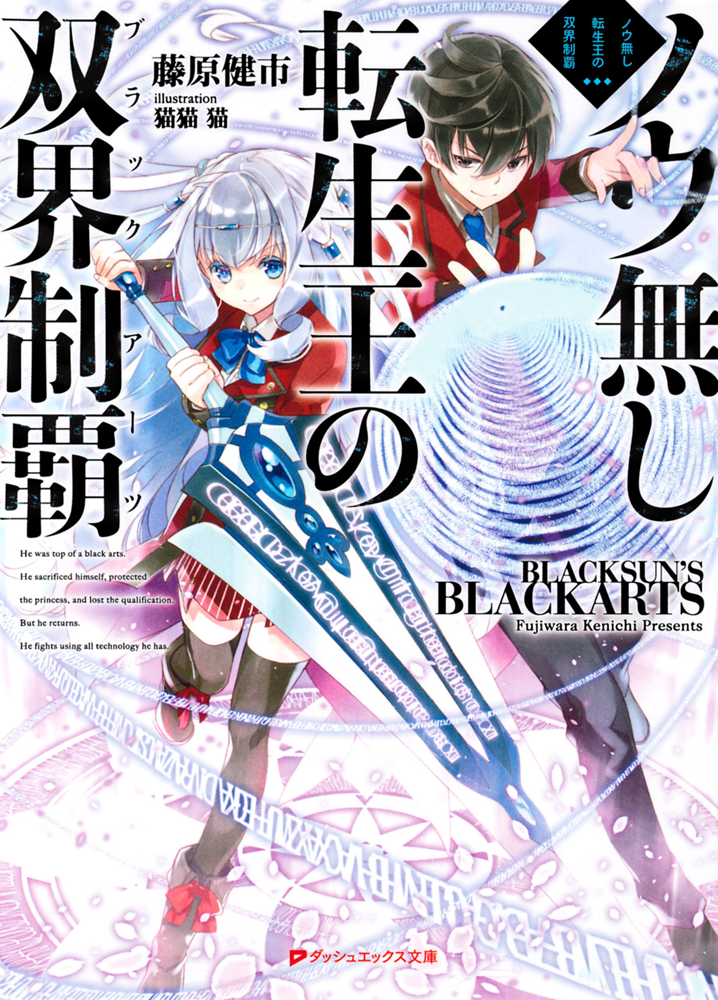
この本は縦書きでレイアウトされています。
また、ご覧になる機種により、表示の差が認められることがあります。
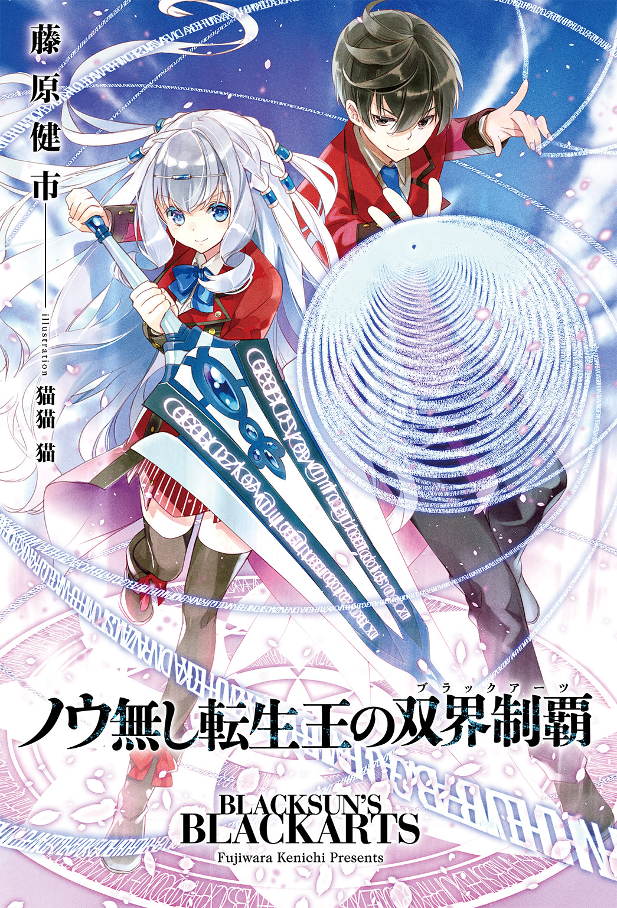
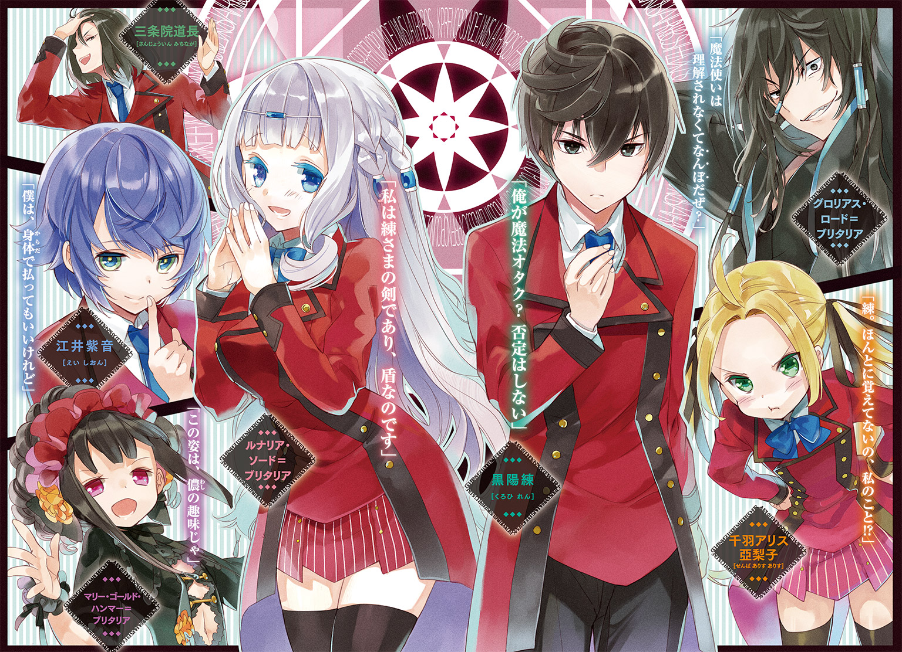
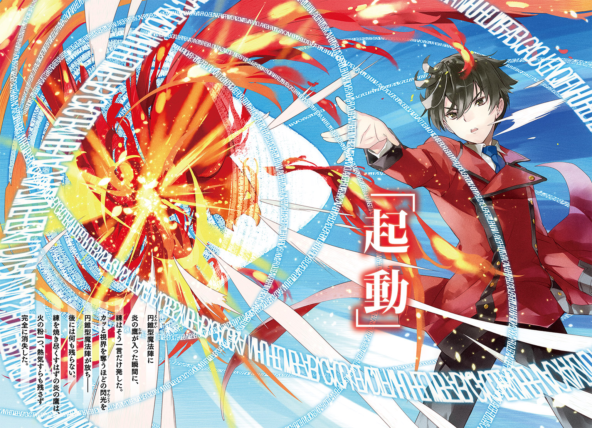
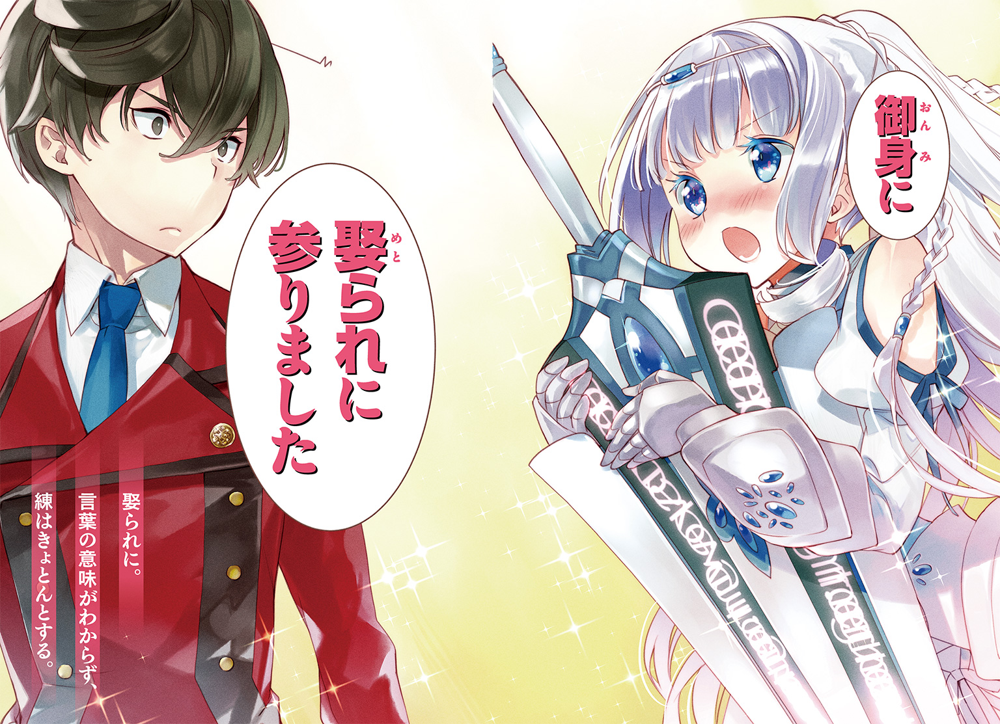
 ダッシュエックス文庫DIGITAL
ダッシュエックス文庫DIGITAL
ノウ無し転生王の双界制覇
藤原健市
プロローグ 喪失の日
「もうよいのです！ 逃げてください、このままでは貴方が！」
黒陽練の背後で、白い礼装姿の少女が悲壮な叫びを上げた。
「私の暗殺に、貴方まで巻き込まれることはありません！」
白銀の髪を振り乱し、サファイアのような蒼空の色の瞳に涙さえ浮かべて訴える少女の名は、ルナリア・ソード＝ブリタリア。
魔法文明が発達した異世界にあるブリタリア王国からの、賓客だ。
練は、掲げた両手の先に展開した八層構造魔法障壁の維持に意識を集中しつつ、淡々と返す。
「逃げる？ それは無理です」
一二歳という年齢に相応しくない落ち着いた声。練は、決してうろたえない。
おまえには才能がある。
よって、どんな時でも決してうろたえるな。
それが〈王の資格を持つもの〉の有り様だ。
己の中に住まう古の魔法使いに、幼い頃からそう言い聞かせられてきた故に、どれほど絶望的な状況であろうとも、練はうろたえない。
現代兵器では再現不可能な遠距離熱閃光砲撃魔法の直撃を受け、魔法障壁が保てなくなったその瞬間に、背後の異世界の王女もろとも消し炭と化す状況だとしても。
練は決してうろたえることはなく、ただ、平坦な口調で事実を告げる。
「今さら魔法障壁の解除なんてできません。解除した瞬間に、俺も王女殿下も消し飛ぶから」
「それならもっと障壁を絞ってください、私のことなど構わずに！」
ルナリアの言う通り、障壁の展開範囲を狭めれば維持可能時間は延びる。
もっとも。今の練にしてみれば、少しばかり時間が延びようがあまり意味はない。
全身の倦怠感。風邪で発熱した時のような喉の渇き、目のかすみ。そして頭痛。
いずれも魔力切れ寸前の症状。すでに限界。
いつ、魔法障壁の維持ができなくなっても不思議はない。
左目の視界の中。空中に寝そべっている黒いローブ姿の若い男が、わかり切ったことを言う。
（そろそろおまえ、尽きるんじゃね？ 魔力がよ）
練は声に出さずに念じる。
――言われなくてもわかってる、グロリアス。
グロリアス。それが練の魂に同居しているものの名だ。
練が物心がついた頃からの、魔法技術の師匠。およそ五〇〇年の昔、近代魔法技術の基礎を構築し、強大な魔力と常軌を逸した魔法技術を自在に駆使して異世界にブリタリア王国を築いた、伝説の存在。
二つ名を『黒い太陽』――敵対する全ての国から『魔王』と畏怖された、初代ブリタリア王。
グロリアス・ロード＝ブリタリア。
そんなものが練の中には住み着き、そんなものから練は、幼い頃から魔法の手ほどきを受けてきた。
たいていのことに驚かなくなるのは、至極当然である。
この世界初の、ブリタリア王立魔法アカデミー開校当日。
主席での入学の日という名誉ある門出の日に、賓客として式典に招かれたブリタリア第二王女暗殺事件に巻き込まれたとしても、驚くには値しない。
王位継承権を巡っての暗殺は、ブリタリア王国という異世界の魔法文明国家では、特に珍しいことではないと、練はグロリアスから知らされていた。
ルナリアの王位継承権は、姉のソニア・ソード＝ブリタリアに次いで現在、二位。
王位継承権争いで命を狙われるには、充分すぎる位置にいる。
開校入学式典にて暗殺事件が起きる可能性は、練も考えていた。
――暗殺手段が長距離魔法砲撃で、王女がたまたま一人になったタイミングで。
――俺だけが近くにいるなんて可能性は......さすがに、想定してなかったが。
（はっはっはっはっ。運が悪いなあ、おまえ）
左の視界の中。グロリアスが無責任に、かつ楽しそうに笑った。
――うるさい。俺が死んだら、おまえも消滅するんだろう？ いいのか？
（そしたらまた転生するだけのことだ。次が何百年後になるか、わかんねえけどな。ま、俺にとっては死んで転生する間のことなんざ一瞬だ。寝て起きるようなもんさ）
――まさしく他人事か。いい気なものだ。
（とはいえ、だ。手塩にかけて育てた直弟子を、こんなことで失うってのも、実につまらねえ。どうする？ 一瞬で魔力を回復する方法が一つだけあるんだが、知りたいか？）
練の魔法障壁の強度は、喰らっている魔法砲撃の威力を上回っている。
魔法砲撃とて永遠には続かない。行使している人間の魔力が尽きれば、魔法の効力は消える。
砲撃が終わるのが先か、練の魔力が完全に尽きるのが先か。運命はそれで決まる。
魔法を学ぶものの常識として、魔力を回復させる方法は一つしかない。
時間経過だ。個人差はあるが、使い切った魔力はおおよそ半日から一日で回復する。
一瞬で魔力を回復できる手段など発見されたら、ブリタリア魔法学会が大騒ぎになることくらい、魔法後進世界に住んでいる練にもわかることだ。つまらない冗談にしか思えない。
――こんな時に冗談は止めてくれ。
（こんな時に冗談を言うわけねえだろ？）
――冗談じゃない？ まさか。
左目の視界の中、よっこらせとグロリアスが身体を起こしてあぐら座りをした。
（お、話を聞く気になったか。んじゃ手っ取り早く説明するぜ）
「さっさと言え」
思わず練は声が出た。背後のルナリアが、びくっと身じろぎする。
「な、何をでしょうか」
「王女殿下には関係ないことです、気にしないでください」
（おいおい、勝手なことを言うな。ソイツは関係あるぜ）
「何だって？ 王女殿下に関係がある？」
練はちらりと肩越しに背後のルナリアを振り返った。
驚くほどに澄んだルナリアの双眸に、一瞬、どきりとする。そして同時に気付いた。
ルナリアの右目の瞳が、左の瞳とは印象が違うことに。
青空そのものの色合いの左の瞳とは違い、右の瞳はわずかに赤みを帯び、複雑な青から紫のグラデーションになっている。さらに瞳の虹彩には微細な紋様が刻み込まれているようだ。
「――魔眼？」
ルナリアがハッとした表情になり、慌てて右目を両手で隠した。
「こ、これは。そのっ」
ルナリアがうろたえる。練の左目で、グロリアスがにやりと笑んだ。
（この姫、やはり当たりだったか。さて魔力切れまで時間がない、さっさと泣かして右目から涙を啜り取れ！）
行け、と言わんばかりにグロリアスが手を振り、ルナリアを指さした。
「――マジか」
（これ以上ないくらいに徹底的に、大いにマジだ）
練はくらりと目眩を感じた。
掲げた手の先、八層構造の魔力障壁の一層目が明滅し、砕け散る。
少女の涙を啜れという言葉にわずかにでも練が動揺したせいではない。
いよいよ、魔力が尽き始めたからだ。
躊躇う余裕はない。練ははっきりと声に出して告げる。
「ルナリア王女殿下。俺のために、涙を流してください」
ルナリアが呆然とした顔で、右目を覆っていた両手を下ろす。
「まさか......この右目のことを、知って......」
右の瞳が紅く発光した。同じ輝きの涙の粒が目の端に盛り上がり、つ、と頰を伝う。
まるでルビーのようにきらめく紅い涙の雫が、細い頰からしたたり落ちそうになる。
（それだ！ その紅い涙を早く啜れ、練!! ソイツは高純度の魔力そのものだ！）
練は思わず当惑した。意識せずに声が出る。
「......そう言われても。俺はこうして魔法障壁の維持で手が離せないし、動けない」
（あ）
グロリアスも練が動けないことに今さら気付いたようだ。
為す術なく、ルナリアの顎の先から紅い涙が地に落ちる。
直後。残り七層だった練の魔法障壁が、一層を残して消し飛んだ。
魔法砲撃の高熱を一層のみの魔法障壁では防ぎ切れず、周囲の温度が一気に上昇する。
「......私のせいで、貴方まで。ほんとうに、どう詫びれば......」
ルナリアが諦めたように、その場に座り込んだ。
「諦めるくらいなら祈っていればいい。一秒でも早く砲撃が終わるようにと。俺の魔力はほぼ尽きたが、絞りきれる力はまだあります。それで残り一層を全力で維持します」
（おい。止めろ）
練の考えにグロリアスがすぐに気付いた。
（魔力蓄積霊的構造を魔力に変換したら、二度と魔力が溜められなくなるぞ！）
あまたの動物や植物と違って人間のみが魔力を持つのは〈万物の霊長〉を名乗るのに相応しい複雑な霊的構造を人間が有しているからだ。
魔力蓄積霊的構造もその一つ。周囲の空間に存在する魔力を人間が取り込み、魔法として行使する源として溜め込むことができるのは、魔力蓄積霊的構造のおかげである。
言わば、魔力を溜める霊的な袋であり、それ自体、魔力でできている。
「知ったことか。死んだらどのみち何もかも終わりだ」
（ったく。我が弟子ながら肝が据わりすぎだぜ、おまえ。一二のガキのくせしてよ）
「力と才能に責任を持てと言ったのは先生だ。俺は、俺にできることをするだけだ」
練は意識を身体の奥深くに向け、自分自身が魔力の塊と化すイメージを造った。
魔法とは、突き詰めれば想像力である。
何事にもなり得る、何事も起こし得るという可能性そのものの魔力に、様々な物理法則、精神的現象などを当てはめた上で望む現象を想像し、強い意志を持って具現化する。
それが、魔法。
練は顔を掲げた手のほうに向けた。グロリアスの宿った左目に、蒼い光が灯る。
光彩に刻み込まれた微少な紋様がきらめき、練の魔法障壁が放つ魔力の輝きが増した。
輝きは留まるところを知らぬように明るさを増す。
そして世界全てが真っ白く、色をなくした。
「......最悪な夢を見た」
黒陽練は、床から身を起こした。
三年前のあの日より手足は多少伸び、顔立ちからも幼さが抜けている。
左目の中。いつものように、ごろっと空中に寝そべって見えるグロリアスが、にやにやする。
（考えようによっちゃいい夢だろ？ 何せ、それより悪い夢はないだろ、おまえにはよ）
「確かにな」
練は、毛布代わりに身体にかけていた制服の上着を手に、立ち上がった。
寝具どころか家具一つない空っぽの部屋の隅。小ぶりのメッセンジャーバッグが一つだけ置いてある。引っ越し先に必要なものを全て送り、不要なものは何も残さず処分した。
このアパートの部屋の契約も今日までだ。大家には鍵を郵便で返送することになっている。
（もう出るのか？）
「部屋にいてもやることはないからな。どこかで朝飯を喰って、そのまま学院島に向かう」
（んじゃ、改めての門出だな。三年も遅れちまったが）
「門出だなんてたいそうなものじゃない。当たり前の日々の始まりだ」
（はっはっはっはっ！ ノウ無しのおまえが、これからの日々を当たり前と言うか！ さすがは俺の直弟子だ、でかいことを言うもんだな、まったく！）
ノウ無し――魔力を失ったものを指す、ブリタリア由来の蔑称である。
練は、テロ事件でルナリアを守り切った代償に、魔力蓄積霊的構造を失った。
以来、空間から自然と取り込まれる魔力は身体に溜まらず、常に漏れ続ける。
一般的な才能を持つ魔法使いの魔力量を一〇〇と数値化した場合、練の魔力量はわずかに、『一』のみ。ほぼ魔法が使えないに等しい状況だ。
テロ事件によって開校当日に廃校となったブリタリア王立魔法アカデミーに変わり、日本国政府主導で設立された、国立魔法技術学院の中等部に練が招かれることはなかった。
練の資質を評価してブリタリア王国が派遣していた、ブリタリア人家庭教師による魔法の個別指導も打ちきられた。
魔法使いとして練にはもう未来がない。そう評価されたのだ。
練はグロリアスからだけ魔法の指導を受けながら、一般の中学を卒業した。
そんな練を、誰かが国立魔法技術学院高等部に、無試験で編入させた。
今日がその高等部入学式であり、これからは国立魔法技術学院のある浮体構造型人工島、通称、学院島の寮で生活することになっている。
練はメッセンジャーバッグを拾って肩に掛け、何もない部屋を後にする。
「この世界とブリタリアの頂点に立つ魔法使いになるんだろ、俺は。決定事項じゃなかったか？」
（応とも！ そんじゃ行くか、練よ！）
こうして魔力がないに等しい魔法の天才は、これまでの日常と変わらない表情で、新しい日々へと第一歩を踏み出した。
玄関を開けて外に出て、陽の眩しさに目を細めると首を傾げた。
ごそごそと上着のポケットからスマートフォンを取り出し、ぼそりと呟く。
「......入学式、終わる時間だな。何故だ、目覚ましのアラームはセットしたはずなのに」
（ああ、おまえの身体をちょいと借りて、俺が止めた。朝っぱらからうるさかったからな）
グロリアスは、練の意識がない時と許可した時、左半身のみだが自由に練の身体を動かせる。
「............そんなことだろうと思ったよ」
（怒らねえのか？）
「昨夜、なかなか寝付けなかった俺が悪い」
（顔には出さないが、わくわくしてるからなあ、おまえ。そりゃ眠れなくて当然だ）
にやにやとグロリアスが笑う。
練は無視してスマートフォンをしまい、ドアの鍵を閉めると歩き出した。
Ⅰ 魔法の学舎へ
晴れ渡る青い空。わずかに潮の香りを含んだ春風に、桜の花びらが舞い踊る。
東京湾に浮かぶ巨大な人工島の一角とは思えない土のグラウンドに、人影は一つもなかった。
国立魔法技術学院高等部の校門に立ち、練は真顔でぼそりと呟く。
「入学式。三年前みたいに、テロの類は起きなかったみたいだな」
（めったにねえって、あんなの。今はブリタリアの貴人の来賓、招かねえって話だしよ）
天候がよければ入学式は外で行われる予定だった。
二百メートルトラックのあるグラウンドの奥、入学式に使われたらしい朝礼台の後ろ。
旗の掲揚台。三本のポールには、学院旗、日本国旗、ブリタリア王国旗の三種類の旗が翻っている。
晴天のもと。入学式は滞りなく行われ、そしてとっくの昔に終わったらしい。
今は校舎で、各クラスごとにオリエンテーションをしているはずである。
（おまえ、何組だっけ）
「一年Ａ組。校舎一階、昇降口近くの教室のはずだ」
練はグラウンドを横切って校舎に向かおうと歩き出した。
グラウンドの半ばを過ぎた辺りで、練は校舎の窓から自分に向けられた視線に気がついた。
何だ、と校舎を改めて見やる。視線は一つ二つではない。
窓際の席にいる生徒の大半が、こちらを見ていると思えるような状況だった。
あれ、黒陽練じゃないのか。不意に、そんな声が校舎のほうから聞こえてきた。
（手でも振り返してやれよ、有名人）
と、グロリアス。練は、む、と眉間に皺を寄せた。
三年前のブリタリア第二王女暗殺未遂事件において、身を挺してルナリアをかばった勇敢で優秀な生徒だと、練は当時マスコミに騒がれた。
その事件で魔力を蓄積できないノウ無しになった練には、思い出したくもない出来事だ。
ルナリアの命の恩人ということで、練はブリタリア王国から多額の恩賞をもらっている。
かなりの贅沢をしても一生遊んで暮らせる金額だが、金で魔力は買えない。
それどころか、練は恩賞であまりいい思いをしていない。
恩賞の話はマスコミに報道されなかったが、どこから流出したのか、うさんくさいところからまっとうなところまで、様々な慈善団体が練に寄付を迫り、ただただ迷惑を被った。
のみならず、練の身元を引き受けてくれている叔母夫妻にまで迷惑をかけた。
ルナリアなんか助けなければよかった。
練がたまに考えてしまうほど、あの事件は人生に多大な影響を与えている――悪い意味で。
魔法技術学院高等部に編入すれば、多くの奇異の目に晒されることは、予想できたことだ。
だから、興味本位の目でどれだけ見られようが、動揺することはない。
ただ少し、鬱陶しいと思うだけだ。
練は視線を無視し、正面にある昇降口へと足を進める。
校舎に近づくたび、男女入り交じった無遠慮な声がさらに聞こえてきた。
「やっぱり黒陽練だよな、あれ」「新入生がいきなり大遅刻かよ」「案外可愛いかも」
「大金持ちってマジか」「何億も持ってるんでしょ」「目つきよくなさそう」
（やっぱり手ぐらい振ってやったらどうだ。減るもんじゃなし）
「俺のプライドが減る」
ぼそっと呟き、練はちらりとだけ校舎を見上げ、目を昇降口に戻した。
「練くん！ 黒陽練くん！」
金髪の若い女が、昇降口から練を呼びながら現れた。
タイトスカートにフォーマルなジャケットという服装。胸が規格外にボリュームたっぷりのため、ブラウスのボタンがはじけ飛びそうになっている。
褐色の瞳が印象的な、美人というよりは可愛らしいその顔立ちを、練はよく知っていた。
「ご無沙汰してます、シャーリー先生」
シャーリー・ギルバート。アカデミー開校前の準備教育を受けるに相応しい素質のある子供としてブリタリア王国の機関に見いだされた練の元家庭教師で、ブリタリア人魔法使い。
今年から、この高等部一年Ａ組の担任として教鞭を執ることになったのを練は知っていた。
シャーリーが練の前に立ち、にこりと笑む。
「はい、お久しぶり。三年ぶりですね、お元気そうで何より――って！ 初日から大遅刻って、事故にあったかと思って心配しましたよ、ほんとうに！ いったいどうしたんです？」
「寝坊しました」
練は表情一つ変えずに事実だけを口にした。寝坊の理由をあれこれ説明する気はない。
「寝坊ですか。そう言えば一人暮らしでしたね、練くんは。仕方ありませんね、そういうこともあるでしょう」
あっさりとシャーリーが納得した。
シャーリーは余計なことをあれこれ詮索しない性格だ。家庭教師時代にも、小学生高学年の時にはもう一人暮らしをしていた練は、その性格でずいぶんと助かった。
グロリアスのこと以外にも、練には詮索されたくない事情が幾つかあるからだ。
「それじゃあ練く――いえ、黒陽くん。とにかく教室に行きましょう」
「はい、先生」
くるりと身を翻したシャーリーに練は続こうとした。すぐに足を止める。
「あら？」とシャーリーもすぐに立ち止まった。昇降口に男子生徒が一人、姿を見せている。
「三条院くん、どうして君がそこに？」
「ちょっと、元神童を見てみようと思いましてね」
三条院と呼ばれた生徒が、どこか気取った調子の声で答えた。
整った顔にかかる長めの髪を綺麗な細い指で払う仕草が、すらりとした細身の長身と相まって、妙に芝居がかって見える。
（三条院って、あの陰陽道の三条院か？）
グロリアスが生徒の名に興味を示した。三条院家は、陰陽道を伝える名家の一つだ。
二〇年前、ブリタリア王国が存在する異世界と次元の穴でつながることで、この世界で不活性だった魔力が活性化し、その影響で、この世界にも魔力蓄積霊的構造を持つ人間が生まれるようになった。
だがそれ以前にも、この世界でも様々な法術、魔術は存在していた。
西洋の魔術、錬金術。大陸の方術。日本の陰陽道など。他にも様々な体系がある。
それぞれの流派が独自に不活性状態の魔力を活用する方法を生み出し、術式体系を発展させてきたが、術式の習得に必要な才能は、特異かつ希少である。
扱えるものが少ない技術は文明の主流になり得ず、この世界では科学技術が発展するに従い、魔術の類のほとんどは、歴史の裏に埋もれていった。
（この学院にいるってことは、その陰陽道の三条院だよな！ そりゃあいい！）
グロリアスは、ブリタリア王国では〈近代魔法技術体系の祖〉と呼ばれる伝説的存在だ。
魂のみの存在となった今でも新しい魔法技術を日々考える根っからの魔法オタクであり、この世界独自の術式にも興味を持っているが、この世界では魔法、魔術などマイナーにもほどがあるジャンルだ。満足な研究など望むべくもない。
その伝承者である三条院の人間を目の前にして、グロリアスが興奮するのは当然である。
（おいそこのガキ、俺に陰陽道を教えやがれ！ なんちゃらニョリツリョーってアレだ、基本なんざいらねえぞ、さくっと奥義を――）
騒ぐグロリアス。その姿は練の左目だけに見え、声は左耳のみに響き、他人にはわからない。
グロリアスの声にいらついている練に向かって、三条院の少年が挨拶する。
「僕は三条院道長。次期三条院当主になる予定だ。初めまして、元神童」
少年――道長が笑顔で練に手を差し伸べた。元神童、という言葉に若干の嘲りの色があったが、練は気付かない。
（おい練、さっさとソイツから陰陽道のレクチャーを受けろ！ まずは式神の――）
「うるさい、黙ってろ」
きつめに練は、グロリアスに文句を付けた。
道長の表情が強ばり、口元の愛想笑いが引き攣る。
「うるさい、だって？ 三条院の、この僕に!?」
練は道長が何故に不快感を顔に出しているのか、わからなかった。
（おまえ。今の、声に出してたぜ？）
と、他人事のようにグロリアス。ああそれでか、と練は納得した。
「あ、いや。今のはおまえに言ったんじゃない」
道長の顔がさらに引き攣った。口元のみならず、目尻も吊り上がる。
「......おまえ、だって？ この僕を、おまえ呼ばわりだと！ 貴様、何様のつもりだッ!!」
「何様って。おまえと同じ、ただの高等部の新入生だが」
練は真顔で答えた。道長が引き攣った顔を片手で押さえ、二歩三歩、よろよろと後ずさる。
「僕と同じ――......この、ノウ無しと、僕が、同じ――だと」
顔から手を放し、道長がその手を邪魔者を払うように、右から左へと大きく振った。
「いいだろう、ノウ無し！ 同じだというなら証明してもらおうか、今、ここで！」
道長の怒鳴り声に、シャーリーがおろおろとする。
「お、落ち着いてください、三条院くん。練くんも悪気があって言ってるわけじゃ」
練は状況がわからずに小首を傾げた。それがますます道長の怒りを煽る。
「他人事のような顔をするな、僕を侮辱しておいて！ 実力を見せて貰うぞ！ 決闘だ!!」
（おー。決闘ったあ古風だな。嫌いじゃないぜ、そういうの）
無責任なグロリアスの言葉に、練はいらっとした。思わずまたも声が出る。
「だから黙ってろって」
「また言った！ また言ったな、貴様!! もう許さない、絶対にだ!!」
道長が激昂する。シャーリーがますますおろおろとする。
「で、ですから。練くんもそんな煽るようなことを言っちゃ駄目ですよお。三条院くんはプライドばっかり高い子なんですからあ」
んな、と道長が絶句した。
「せ、先生まで、そういう目で、僕を――」
「ああ！ べ、別にそんなつもりで言ったんじゃないですよ！ プライド、いいじゃないですか！ 先生みたいにへこへこするばかりの人生よりは、よっぽど、孤高って感じで、ほら！」
うろたえるシャーリーが、支離滅裂なことを言い出した。
何だか収拾がつきそうもないな。練が他人事のようにそう思った時だった。
三人の傍ら。地面に直径一メートルほどの円が、光の線で描かれた。
円の内側に光の線が緻密な幾何学模様を描き、さらに文字が綴られていく。
魔力で描かれる光の線――魔法記述光跡で描かれていく複雑な魔法の構成を、練はあっさりと読み解いた。
「転移の魔法陣か」
（転移ったら、かなりの高等魔法だ。ここの講師じゃ無理だな、最低でも宮廷仕えクラスだ）
魔法学の講師レベルでも使えない転移魔法。高位の魔法使いが現れるという証拠だ。
魔法陣の中に小柄な人影が不鮮明に浮かび上がった。
カッとまばゆく魔法陣が発光し、一瞬、練たちの視界を奪う。
視界が戻った後。魔法陣が消えた場所に、黒い豪奢なドレス姿の幼女が立っていた。
鴉の濡れ羽色という表現がはまる、結い上げられた漆黒の長い髪。対照的に透き通るような白い肌。
重さが余裕で一トンはありそうな真紅の巨大な鉄槌を、幼女は片手で軽そうに担いでいる。
赤みがかった眼を愉快そうに細めたその幼女が、凹凸のまったくない胸を張り、偉そうな口調で告げる。
「その決闘、儂が許可する。さあ存分に殺し合え、死んでも儂が蘇生してやるから安心しろ」
「あ、安心しろじゃありません、学院長っ」
シャーリーがあたふたと幼女に近づいた。
「学院長？」ぼそりと練は口の中だけで呟いた。
国立魔法技術学院の学院長は、中等部、高等部、大学、大学院を通して一人のみ。
マリー・ゴールド・ハンマー＝ブリタリア。
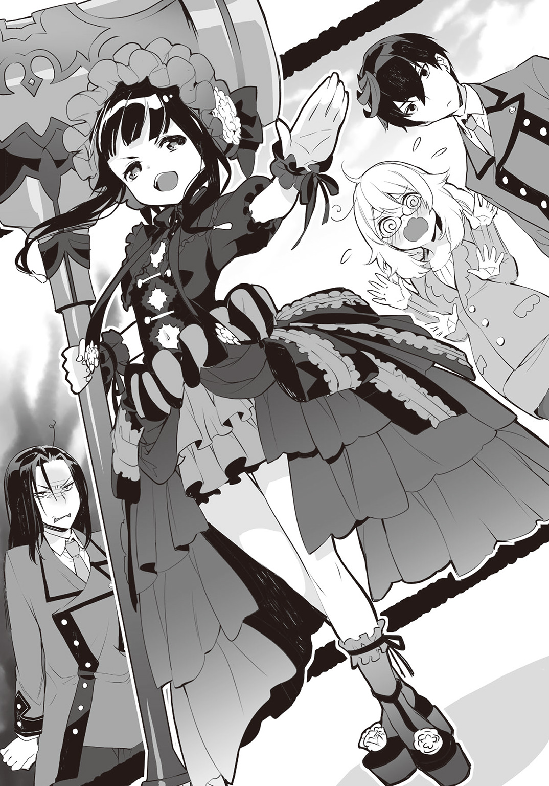
ブリタリア王国の王族の一人である。四つの血族が存在するブリタリア王族の中では序列が四位と末席だが、王族に恥じぬ高位の魔法使いを多く輩出している。
その中でもマリーは、ブリタリア史上屈指の魔法使いという噂だ。
練は声に出さずに、念じてグロリアスに問う。
――高位の魔法使いの中には自分の肉体年齢さえも自在に変えられるそうだが、あれはありなのか？
（ハンマー家のマリーと言えば実年齢が二百歳とも三百歳とも噂される魔女だからな、もう見た目なんざ本人の好みだけだろ）
――年齢は噂にすぎないが、そうか。学院長に相応しい実力者なんだな。納得した。
練は観察するような目をマリーに向けた。その視線にマリーがすぐ気付く。
「ん？ どうした、小僧。儂の容姿が好みにストライクだったりするのかの？」
「いえ、俺は別にロリコンじゃないので」
「そうか。ならば好みの年齢を言うがよい。好きな姿になってやってもいいぞ、この決闘に勝ったならな」
「いえ。特にそういう希望もありません。別に決闘もしたくないですし」
「何だ。つまんない奴だな。からかいがいがない」
「僕を無視して話を進めないでもらおうか、ノウ無しふぜいが!!」
道長が怒鳴った。マリーが、にぃと笑みを浮かべる。
「そうだな。おぬし抜きで話を進めてはならぬな。それじゃさっさと決闘を始めるがよい。主賓の到着も遅れておるでな、入学式のおまけとしてはいい余興だろ」
「それこそ俺の意志を無視して勝手に――」
練は抗議しようとしたが、道長は聞く耳を持たないらしい。
道長がブレザーの懐から紙細工を取り出し、声を張る。
「疾く来たりて敵を討て！ 朱雀が眷属、群雀！ 急急如律令！」
道長が手にしたのは、掌ほどの大きさの折り紙で作られた小鳥だった。
命令に反応し、折り紙が一瞬、光の線を纏う。魔法記述光跡だ。
ぼっと折り紙が燃え上がり、無数の小さな火球に変化する。
（おー。呪符の中身がバレないよう、折り紙にしてあるのか。いい工夫だ、今度真似するか）
のんきにグロリアスが道長の技に感心した。
「沸点の低い奴だな。俺は決闘になんか付き合う気がないというのに」
（そりゃま、おまえはノウ無しだしな。攻撃魔法の撃ち合いなんざできねえし、どうする？）
「行け!!」
道長の命令で、小さな火球が一斉に練に向かって飛び始めた。一つ一つはライターの火程度の小さなものだが感じられる魔力は小さくない。当たればそれなりにダメージを受けそうだ。
練はすぐさま身を翻して横に駆け出した。
火球の群れが空中で弧を描き、追ってくる。
速度は火球群のほうが練よりも速い。走って逃げるのは無理らしい。
練は冷静に、道長の使った魔法について考える。
――陰陽道の式の一種か、あれは。
――起動の際に魔法記述光跡が出たということは、近代ブリタリア式魔法の応用のはず。
――となると。読み取れた通りの性能だ。使用魔力はせいぜい二〇。大したことないな。
「無効化する」
練は足を止めてしゃがみ込み、グラウンドの土を片手で引っ搔いた。土は硬いが、それでもいくらかは土が手に収まる。その土を、練は飛来する火球群に投げつけた。
「なにっ」
道長が驚きの声を上げた、その直後。
パパパパパパンッと火球が一斉に爆ぜ、空中に火の花を咲かせた。派手な花火のようだ。
（火球が物に当たれば爆ぜるってわかったのか、練？）
「術が発動する際に、魔法記述光跡の構成が見えたからな。読めるさ」
練と道長を値踏みするように見ている、二階と三階の上級生たちが感想を口に出す。
「元神童があっさり三条院の術を破ったぜ」「さすがにまぐれだろ」「うっわ、けっこうえげつねえ術じゃねえか、今の」「直撃すれば火傷じゃすまないよねえ」
そうした声を意に介さず、練は振り返る。
魔法を破られた道長が、親の仇でも見るような目を練に向けていた。
「構成が読めた、だと？ でたらめを言うな！ 僕の魔法記述光跡展開は、せいぜい数秒だ！ その短い間に魔法の効果まで読むなど、できるものか！」
「できるものかと言われても。できるだろ、普通に？ あの程度のものなら」
（おまえの普通は、世の中の普通じゃねえって。ぶち切れるぜ、あいつ？）
「まさか。こんなくだらないことで怒るわけないだろう」
練はうっかり、グロリアスへの返事を声に出してしまった。
道長が両の拳をきつく握りしめて仁王立ちし、わなわなと全身を震わせていた。
「......くだらない......どこまでも、どこまでも僕を侮辱するつもりか、黒陽練......」
「あ、いや。別におまえに腹を立てているわけじゃない。侮辱する気もない。さっきの魔法、陰陽道の呪符に近代ブリタリア魔法の制御を加えたオリジナルにしては、よくできていた。起動も短時間だし呪符を折って構成を隠す工夫も悪くない」
練は率直な感想を口にした。怒りに赤くなっていた道長の顔が一気に青ざめる。
「よく、できていた......僕が三年をかけて開発した高速起動符術を、よくできていた......――貴様！ 上から目線でよくも言う!! それならこれも評価してもらおうかッ!!」
ぼそぼそとした口調から一転、道長が叫んで懐から再び、折り紙を取り出す。
先ほどの折り紙よりもかなり大きい。倍以上の大きさだ。
鋭い翼、尖った嘴。猛禽類と思しき形の折り紙である。
（お、でけえ。折る前の呪符のサイズ、群雀とやらの四倍くらいありそうだな！）
嬉々とした声で、グロリアス。術式が刻まれた呪符のサイズは、魔法の威力に直結する。
最低でも四倍以上の威力だということだ。
練はちらりと学院長マリーと担任シャーリーの様子を見やった。
マリーは腕組みをしてにやにやとし、シャーリーは胸元で祈るように手を組み合わせ、おろおろとしている。どちらも助けてはくれなさそうだ。
道長が、バッと大げさな動きで折り紙を持った腕を振り、練へとかざす。
「朱雀が眷属、紅蓮鷹！ 疾く来たりて我が前の愚鈍を灰燼に帰せ！ 急急如律令!!」
折り紙を中心にして魔法記述光跡が展開する。道長の背と直径がほぼ同じ円に、複雑な幾何学模様。近代ブリタリア式魔法の魔法陣のスタイルに、漢字が組み合わされている。
爆炎。旋風。飛翔。そんな文字が読み取れた。
使用魔力は推定八〇。使う魔力が多ければ多いほど魔法の威力は指数関数的に上昇する。
複合効果を考慮すれば、先ほどの火球群の魔法より、最大で二〇倍近い可能性がある。
平均的な魔法使いの魔力蓄積量は一〇〇前後。使用魔力八〇は一般的な攻撃魔法では最大威力に近い。確実に、数人程度なら消し炭にする火力がある。
（こりゃ結構な威力だぜ？ どうする、練。マリーの奴に蘇生してもらえるのをあてにして、消し炭になってみるか？ なかなかできない体験だぜ、そういう死にっぷりもよ）
「冗談じゃない。いい機会だ、あれを試す」
（あれか。できるか？）
「三年かけて、理論は完成している」
練は指を広げた右手を前に掲げた。五本、全ての指の先から極めて細い光の線が伸びる。
極微細魔法記述光跡。
練とグロリアスがそう名付けた、徹底的に魔力消費を抑えるための技術だ。
魔法記述光跡は、魔力で描かれる。光跡が太ければ多くの魔力を消費する代わりに魔法の威力は高くなり、逆に、光跡が細ければ細いほど魔力の消費は少なく、魔法の威力は下がる。
道長が使って見せた魔法記述光跡の幅は、数センチほど。
対して、練の極微細魔法記述光跡の幅は、０・１ミリ以下。毛髪よりも細く、白く発光しているために日中はほとんど見えない。
魔力を絞りに絞った極微細魔法記述光跡で、練は瞬時にして立体的に魔法陣を編み上げた。
道長の魔法陣とは桁違いに緻密で精細な構造。形状は平面ではなく、掲げた手の先から前方に、円錐の形に広がっている。円錐の底の直径は、練の背とほぼ同じだ。
魔法陣の構成に費やした魔力は、きっかり『一』。
すなわち、今の練の全力である。
（おー。とりあえず形になったな）
「当然だ」と練。
魔法陣は完成した。だが、ほとんど見えない極微細魔法光跡の魔法陣が正確に見えているものは、誰一人いなさそうだ。唯一、マリーがぴくりと眉を揺らす。
「ろくに見えないが、何だその構成？ 妙な感じがする」
「え？ え？ 練くん、何かしてるんですか？」
シャーリーが戸惑い訊ねたが、練はマリーとシャーリーをちらりとも見ず、道長に集中した。
道長にもやはり練の魔法陣は見えていないらしい。
得意げな顔で、道長が魔法を放つ。
「これで仕舞いだ、黒陽練!! 骨の髄まで燃え尽きろ!!」
ゴッと空気を震わせて折り紙の鷹が燃え上がり、一〇倍以上に膨れあがった。
紅蓮の名にふさわしい炎を翼で羽撃き、それが飛ぶ。
一目で凶悪な火力だと誰もが理解できる炎の鷹が、一直線に練へと襲いかかる。
「うっわ。あの新入生、死んだわ」
そんな無責任な声が校舎から聞こえたが、練は動揺しない。
迫る炎の鷹の向こう、勝ち誇った道長の顔。その表情がすぐさま一変する。
「起動」
円錐型魔法陣に炎の鷹が入った瞬間に、練はそう一言だけ発した。
カッと視界を奪うほどの閃光を円錐型魔法陣が放ち――
後には何も残らない。
練を焼き尽くすはずの炎の鷹は、火の粉一つ、熱気すらも残さず完全に消失した。
どおっと校舎全体がどよめいた。
「今度こそ何をしやがった、あの新入生！」「さすがに今のは魔法で対抗したよな！」「魔力がなくなったんじゃなかったのかよ！」「信じられない、今の炎を簡単に消すなんて！」
驚いたのは校舎の生徒たちだけはなく、シャーリーもだ。何が起きたのかわからないらしく「え？ え？ 何したの？」と目を白黒とさせている。
ただ一人、学院長のマリーだけは様子が違う。疑念の色を隠さず険しい表情をしていた。
「バカな!?」と道長が見たものが信じられないという表情をし、
（成功か!!）と練の左目の中でグロリアスが快哉を叫ぶ。
「まだだ」練は冷静に、前方の空間に意識を集中した。
目に見えないものを感覚で捉える。通常の空間には決して存在しない濃密な魔力の塊が、円錐型魔法陣が消えた場所にあるのを確かに感じ取った。
練は道長の魔法を無効化したわけではない。魔法の効果を、魔力に還元したのだ。
魔法効果魔力還元魔法。
魔力を溜められない練が編み出した、強い魔法を行使するために構築した特殊な魔法だ。
目的は魔法を防ぐことではない。還元した魔力を自分で利用することである。
（急げ練、魔力が散るぞ！）
「わかってる。だが、何を使おう？」
練がまともな威力の魔法を使うのは、三年ぶりだ。使いたい魔法は色々ある。
意趣返しでそのまま火炎魔法か。それは芸がない。何かアレンジを加えようか。
それとも――
（あ、バカ！ グズ！ ノロマ！）
「......あ」
練は己の優柔不断さを悔いたが、もう遅い。魔力の塊が崩れ、空間に拡散してしまった。
「魔力が散るまでせいぜい数秒ってことか。これはこれでいい経験にはなったが――」
練は気を取り直し、改めて道長を見やる。
道長が、震える手で同じ折り紙を取り出した。
「今のは、何かの間違いだ......僕の最大の攻撃魔法が、ああも簡単に消されるわけが......――わけが、あるものか!! 僕が魔法の制御を誤ったに決まっている！ そして僕は同じ過ちを二度とは繰り返さない、三条院の跡継ぎとして!!」
道長が再び詠唱をし、魔法を起動させる。魔法記述光跡を纏った折り紙が弾け、先と寸分違わず同じ大きさ、威力と思しき炎の鷹が再度、羽撃いた。
（あの小僧。名門の出だけあって魔力蓄積量は凡人レベルじゃねえのか。あの様子だとまだ余裕があるな、二〇〇以上の魔力を持っていそうだ。こりゃやばいな）
「ああ。非常にまずい」
（だよなあ。あれを防ぐ手立てなんざ、今の俺たちにはねえからな。おまえは死んでもマリーが蘇生させてくれるとして。中に同居している俺はどうなるか、わかったもんじゃねえ）
「今度こそ喰らえ、我が最大の攻撃魔法!! ゆけ、紅蓮鷹ッ!!」
道長の命に従い、炎の鷹が練へと飛ぶ。
練は肩にかけているメッセンジャーバッグを外してストラップを握り、反動を付けて炎の鷹めがけて投げつけた。バッグと炎の鷹が空中で衝突する。
ドオッと爆音が轟き、宙に巨大な火炎の花が咲き、バッグが消し飛んだ。
「やったか？」
（駄目だ！ あれを爆発させるには、カバンじゃ大きさが足りねえ！）
「甘いぞ黒陽練!!」
道長が勝ち誇った顔をした、その直後。
空中の火球から炎の鷹が飛び出す。バッグを消し飛ばした程度では威力がほとんど減じていないらしい。炎の鷹が力を誇示するように、その場で幾度も炎の翼で羽撃く。
今度こそ直撃を喰らう。確実に死ぬ。
どうせ死ぬんだったらマリーの蘇生魔法をこの身で体験し、可能ならば覚えてしまおう。
練はそう覚悟を決めた。
（しゃあねえなあ。付き合って死んでやるか）
苦笑するグロリアス越しに、練はすぐ前の地面に魔法記述光跡が走るのを見た。
練は反射的に魔法の構成を読む。マリーが使った転移魔法と基本は同じだが、規模が大きくさらに密度が高い。
魔法記述光跡の中に『From Central Britalia King Castle』の文字を練は見て取った。
ブリタリア王国の言語はこの世界の英語と、単語も文法もほとんど同じだ。
（異世界間転移魔法!? それも中央ブリタリア王城からだと！）
「誰が来ようがもう遅い！ 僕を侮辱したことを悔いて死ねえ、黒陽練ッ！」
ホバリングしていた炎の鷹が、火の粉を散らして練に襲いかかる。
「させません」
凜とした女の声を、練は確かに聞いた。練の近くに人影はない。
となれば、声は転移の魔法陣の向こうからだ。
ゆらりと魔法陣の中に不鮮明な人影が浮かび上がる。そして、カッと魔法陣が閃光に転じた。
その眩しさに練は片手で目をかばいつつ、細めた目で指の隙間から見る。
魔法陣の輝きを跳ねて踊る、白銀の長い髪。
白いシルクと思しきドレスに不似合いな、胸と背中を覆うブレストプレート。腰の両側に提げられたサイドプレート。両腕の肘から先にはガントレット、膝から下もアーマー装備。
そして、左手には抜き身の大剣。
刃の長さだけでも練の背ほどもある剣だ。両手剣型の長い柄には幾つもの宝珠がはめ込まれ、幅広の刀身にはびっしりと魔法の術式が刻印されている。
練は初めて見たが、それは、話に聞くブリタリアの聖騎士の出で立ちそのものだった。
「輝け、我が剣セレブレイト！」
女聖騎士が左手の大剣を両手で構え、振りかざした。刀身に刻まれた術式が魔法の光を放つ。
「はあああああッ!!」
裂帛の気合いと共に女聖騎士が突っ込んでくる炎の鷹めがけて大剣を振り下ろす。
炎に実体はない。炎の鷹が大剣をすり抜け、練へと迫る。
練の両目に、右と左に別れた炎の鷹の姿が映った。
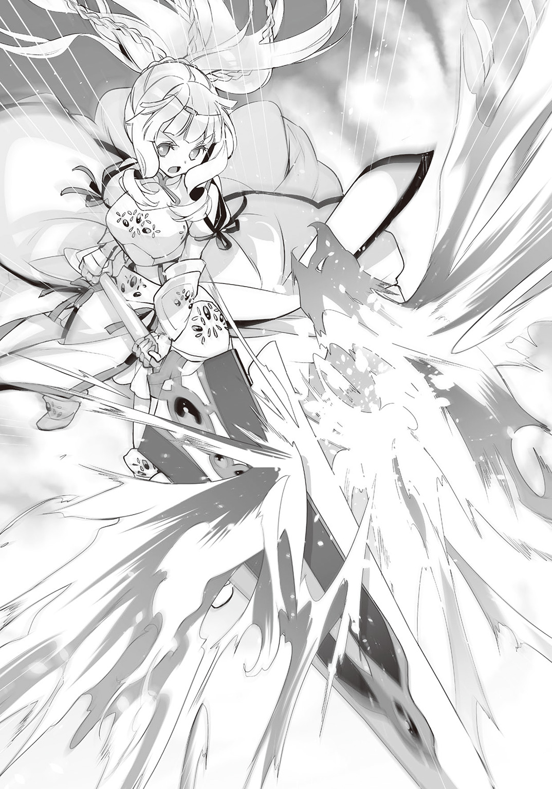
命中する寸前、炎の鷹が中心で左右真っ二つなり、練を避けるように右と左に弧を描いて進路を変えたのだ。
練の背後。数十メートル離れた地面で爆発が二つ起こる。
爆音が広がり熱風が吹き荒れる。
「ぼ、僕の紅蓮鷹が、そんな、バカな!! 魔法を斬るだなんて、ありえない!!」
道長がわめき立てるがまるで聞こえていないかのように、女聖騎士が剣を提げ、優雅な仕草で振り返った。鎧が見た目に反して、しゃらんと軽く澄んだ金属音を立てる。
サファイアのような蒼く澄んだ瞳が練を映す。その双眸を練は覚えていた。
練のみならず、この学院に関わるものならば誰もが彼女の顔を知っている。
そこにいたのは、練が魔力を失ったきっかけとなったブリタリアの王女。
ルナリア・ソード＝ブリタリアだった。
三年前のあの事件以来、練はルナリアとは一度たりとも会っていない。
命を助けた礼も直接言われることはなく、使いのものから手紙を受け取っただけだ。
（ほお。あん時はただのガキだったが、三年で結構いい女になったじゃねえか。出るところもだいぶ出てよ、ふむふむ）
グロリアスが値踏みするようにルナリアを眺め回す。
胸部を覆うブレストプレートの盛り上がりは、かなりのものだ。体型を偽っていないのならば中身も相応なはず。ドレスの腰は細く、腰骨辺りからつり下げたサイドアーマーは広がりが大きく、その下の曲線を想像させる。
練と同じ一五歳にしては、ルナリアは成熟した体つきだ。顔立ちにわずかな幼さを残しているが、それが逆にスタイルの良さを強調している。
「......」――あんたのせいで俺は魔力を失った。
――そう言ったところで、今さら意味はない。
――ないんだが、やはり複雑な気分だ。
練は無言で、じっとルナリアの蒼い瞳を見つめ返した。
ルナリアの頰に、ぱあっと朱が散らばった。相当な重量があるだろう大剣を胸元でかかえ、もじもじとする。艶やかな桜色の唇が、わずかに震え、はあ、と小さな吐息が漏れた。
「そんなに見つめられると、恥ずかしくなってしまいます」
（何を雰囲気作ってんだよ、おまえ。俺も照れるじゃねえか）
「......そんなつもりはないんだが。王女殿下が、どうして騎士の格好なんかしてるんです」
練は何をどう言えばいいかわからず、率直な疑問を口にした。
ルナリアが真顔に戻り、真っ直ぐな視線を練に向けた。
「三年前、異世界が見たいという我が儘だけでこの地に来た私は、何もできない子供で、貴方の未来を奪って、この身を救われました。ほんとうに合わせる顔などありませんでした。ここに、改めて謝罪いたします」
深々とルナリアが頭を垂れる。練は申し訳ない気分になった。
「いや、それはとっくに終わったことで、今さら謝られても困ります。俺にはどうしてやることもできないですし」
ルナリアが頭を上げる。
「何もしていただく必要はありません。そのために私は三年を費やして才能の限界まで魔法と剣を学びました、聖騎士の称号を、我が父、ブリタリア王より賜れるように。御身はこれより、私が守護いたします」
ルナリアが剣の刃を両手で摑み、柄を練へと差し出した。
練は瞬きし、宝珠の飾られた柄を見やる。柄を差し出された意味がわからず戸惑った。
「どうしろと」
（おまえの騎士になりたいって言ってんだ、この王女。騎士は仕える主から剣を賜るモンなんだよ。剣を受け取って、適当にそれっぽいことを言って返してやればいいだけだって）
グロリアスが、知識のない練にも雑だとわかる説明をした。
「いや、さすがにこれはおかしいでしょう。どうして一国の第二王女の主なんかにならねばならないんです。そんな面倒なこと、俺は遠慮します」
「そ、そんなあ！ それでは私は、いったい何のために三年間、幾度も死にかけては復活の魔法で蘇生されるような修練を積んできたというのでしょうか！」
ルナリアが悲壮な顔をして、半ば泣くように訴えた。
「知りませんって」
練は本気で困惑した。これまでの人生でもっとも対応に困っている。
（いいじゃん、もらっとけ。いい女になってるし、騎士は主の命令には逆らわねえぜ？ ほれ、あんなことやらこんなことやら思春期の妄想をぶつけたって構わねえんだ）
「うるさい」
練は苛立ち、ぴしゃりとそう言った。
グロリアスへの言葉だが、そんなことなどルナリアにわかるはずがない。
「う、うるさいって言われて、しまいまし、しまいま、しまい、しま――......」
ルナリアがかわいそうなくらいに狼狽し、事態に対処しきれなくなったのか、きゅうと変な声を漏らして練に剣の柄を差し出したままの姿勢で、硬直してしまった。
目からも光が失せている。立ったまま失神しているかのようにさえ見える状態だ。
「あ、今のは王女殿下に言ったわけじゃ。って、聞いてませんね、もはや」
（こういう時は一発、ビンタでもしてやりゃいいんだよ。ほら、バチンと）
「......王女殿下にそんなことできるわけ――」
練の言葉の途中で、平手打ちに似た音がパンと響き、ルナリアの顔が横を向いた。
まるで誰かにビンタをされたかのように。
「おまえ、勝手に！」
グロリアスが練の左手を許可なく動かしたかと練は思ったが、左手はそのままだ。動いた跡はない。
（俺じゃねえよ。何かいるぜ？ ほら、そこ。幻術系魔法で隠れていたのが出るぞ）
ルナリアのすぐそば。何もない空間が、ゆらりと揺らぐ。
先ほどルナリアが現れた転移の魔法とは違い、空間からにじみ出すように人影が現れる。
「......子供？」と練。
現れたのは、メイド服姿の少女だった。
一二〇センチに届いていないだろう背丈。ヘッドドレスを飾ったショートカットの髪は、桃色がかったブロンドという珍しい色合い。
メイド服は長袖にロングスカートというクラシカルなタイプで、白い手袋をはめている。そのため、肌は顔と首の辺りしか見えない。
「しっかりするデス、姫さま。これは想定の範囲デス」
と、メイド少女。舌足らずで、どこか機械じみた棒読み。
ぱちくりとルナリアが瞬きをし、瞳に意志の光が戻った。練に差し出していた剣を持ち直すとメイド少女に話しかける。
「あら、ジェンカ。来ていましたか。いつの間に」
「ジェンカはいつも姫さまのおそばに、デス」
ジェンカ。それがメイド少女の名前のようだ。
練は無意識に、じろじろとジェンカを観察するように見た。それにルナリアが気付く。
「この子はジェンカ。私の護衛ドロイドです」
「ドロイド？ この子が？ まさか」
ドロイド。近代ブリタリア式魔法が生み出した、人工精霊を宿した自律人形の一種だ。
人型のものをドロイド、大型で人型に限定されないものをゴーレムと呼ぶ。
ドロイドはしょせん人形である。人間と見間違うほど精巧なものはない――と、知られているが、目の前のメイドは人間にしか見えなかった。
ルナリアが嬉しそうな表情をする。
「はい、私の護衛ドロイドです。ブリタリア史上でも屈指の魔導具師と名高い、我が姉ソニアの手がけた逸品で、小型ですが屈強な兵よりも力が強く、様々な魔法を機能として内蔵しているのですよ。姿を消すのもその一つなのです」
ルナリアの姉、ソニア・ソード＝ブリタリア。
ブリタリア王国第一王女にして王位継承権第一位の、ルナリアの姉だ。
無表情のままジェンカが真っ平らな胸を張る。
「えへん。それほどでもデス」
（魔法が使える人工精霊は、俺も生きている時に研究していたが。ソイツをドロイドに組み込み、実用化するとは。ソニアって奴はでたらめに優秀じゃねえか）
グロリアスが感心したように、ジェンカを見る。
魔法を組み込んだ道具は様々に存在するが、道具が魔法を発動させることはない。
あくまで魔法を発動させるのは人間だ。魔法が使えるドロイドなど聞いたことがなかった。
「......凄いのか、この子。そうは見えないが」
と練。ルナリアが前のめりになる。
「凄いのです、ジェンカも、ソニアも！ 我が姉ながらソニア姉さまはほんとうに優秀で、魔法技術も聖騎士の位を得た私よりずっと上で――はっ。も、申し訳ありませんっ。はしたないところをお見せしてしまいました」
「別に気にしません」
（ちっとは気にしてやれっての。女心がわかんねえ奴だな）
――特にわかりたいとも思わない。
こほん、とルナリアが自らを落ち着かせるように咳払いをした。
「騎士たるもの、主と仰ぐ人物の前でうろたえるものではありませんでした。今は剣を授かれなくても、私の忠誠は変わりません。いつか認めていただくまで――」
不意にルナリアがわずかに頰を染めた。ぬいぐるみでも抱くように大剣を胸元によせ、何故か身をくねらせる。
「そ、それよりも。大事なことを、私は練さまに、宣誓しなければなりません」
すすす、とジェンカがルナリアの斜め後ろに移動した。
ルナリアが片手で魔法記述光跡を発生させ、小さな魔法陣を描く。その内容を練は読む。
「指向性......音の範囲限定？」
声が周囲に漏れることなく練のみに届くように、ルナリアが魔法を発動させた。
「御身に、娶られに参りました」
その声が、まるで耳のすぐそばでささやいたかのように聞こえた。
娶られに。言葉の意味がわからず、練はきょとんとする。
（娶るって言葉、知らねえか？ ま、この国じゃ古くせえ言い回しだよな。早い話、おまえの嫁になりに来たってよ、このお姫さま）
「は？」
練はグロリアスの言葉を整理し、考えた。
結婚しに来た。ルナリアは、そう言ったようだ。からかわれているとしか思えない。
「申し訳ないんですが、ブリタリア式の冗談は、俺にはわかりません」
（冗談じゃねえと思うぜ、今の。っていうか、練。ほんと女心がわからないな、おまえ）
冗談じゃないなんて、まさか。練は思わず苦笑した。
剣を抱いたまま、ルナリアがぴくりと小さく身を震わせた。
「じょ、冗談――冗談......じょ、じょ、じょ――」
再びルナリアが硬直し、瞳の光が消えた。どうやら想定外の事態への対処が苦手らしい。
（あーあ。またフリーズしちまったぜ、このお姫さま）
練は少し困惑し、視線をジェンカに向けた。
「どうしたらいい？」
「一発ビンタで元に戻るデス。我が造物主ソニア・ソード＝ブリタリアから、貴殿に伝言があるデス。音声、そのまま再生するデス」
無表情のまま、ジェンカの声が別人に変わる。
『ルナリアが止まったら、調子の悪い魔導具を引っぱたくと直るのと同じで、遠慮なくぶっ叩いていいわよ？ 姉の私が許すから、バンバンやっちゃってね、練くん』
「――と、いうことデス。黒陽練さまも今後のために、姫さまを再起動させる方法を覚えておくべきデス。先ほどジェンカがしたように、ささ、どうぞデス」
元の声に戻ってジェンカ。いやいや、と練は首を振った。
「王女殿下に手を上げるなんて、できるわけがないだろう。そっちは任せるよ......とにかく」
練は改めて、離れた場所に突っ立っている決闘相手、三条院道長に向き直った。
「三条院と言ったか。何か、すまない。こんなことになってしまって」
呆気に取られていたような顔をしていた道長が、目が覚めたように身震いした。
「いやいや、こちらこそ――って、何なんだ!! 何で貴様を王女殿下が守る!? あまつさえ剣を捧げるだと!! しかもそれを拒絶するだなんて、身の程知らずもたいがいにしろおッ!!」
道長が据わった目で懐から次々と折り紙を取り出し始める。
「何もかもがおかしい、そうだ、これは夢だ。夢に違いない。夢だから僕の魔力もまだまだ残ってる、いっそ全部の呪符を起動させて、このおかしな夢ごと吹き飛ばしてしまえ」
道長にまだ魔力が残っているかどうか、練にはわからない。
だが呪符の折り紙全ての魔法を使われたら、洒落にならないことはわかる。
それは立会人のマリーにもわかっているようだ。やれやれと呆れ顔をする。
「ルナリアの乱入は予想していたが、ちとややこしいことまで言っていたようだな。ここは聞かなかったことにしてやるか――まあ、儂としては死者蘇生に無駄な魔力を使わずに済んだから、よしとする。そこの小僧、悪い夢だと思ってもう寝ておけ」
マリーがすいっと空中に指を滑らせる。指の動きに合わせ、距離の離れた道長の頭の周辺に魔法記述光跡が走り、ふいっと軽く輝いて消えた。
途端、道長の手から折り紙の束がばさりと落ちる。そしてくたりと座り込むと、こてんと横になった。明らかに眠ってしまっている。
「シャーリー。三条院の小僧のことは任せた」
「はい。承知いたしました、学院長」
とと、とシャーリーが小走りで眠り込んだ道長へと向かう。
一方でマリーが、まだ硬直しているルナリアのそばに歩み寄る。
「いつまで呆けておる、ルナリア。いい加減、しゃっきりとせんか。でないと――」
マリーの担ぐ真紅の鉄槌に、魔法記述光跡が絡みつく。
何の魔法だ、と練は反射的に魔法記述を読む。『Crimson Fire The Sledge Hammer』の記述が目につく。
「うっかり殺してしまいかねないぞ？」
燃え上がるように鉄槌が紅い輝きを纏った。攻撃力強化の魔法を付加したらしい。
鉄槌を軽々と振り回し、マリーがルナリアに襲いかかる。
「なあ、王位継承権第二位よ!!」
「！」
殺気に反応したかルナリアの目に光が戻った。護衛としてマリーの進路に移動したジェンカに、鋭い声を飛ばす。
「下がりなさい、ジェンカ！」
ジェンカが、さっと横に跳んでルナリアの前を開けた。
ルナリアがドレスとサイドプレートを遠心力で翻し、マリーへと向き直る。
振り下ろされるハンマーを、大剣が受け止めた。
ガキンッと金属の激突音。ルナリアの足下の地面が陥没する。即死レベルの一撃だ。
「これはどういうお戯れですか、ハンマー公――いえ、マリー・ゴールド学院長」
「殺し殺され、喰らい喰らわれるのが、我らブリタリア王族の常ではないかの？」
「それに異を唱えませんが、この場ではいささか不適切な行為かと存じます。私とて、お世話になる学院の長を斬り捨てるのは不本意ですので」
「......ほう。その気になれば、この儂を斬れる――と。抜かしよる」
マリーが、にぃと口角を笑みの形に吊り上げたが、目は笑っていない。
「今ここで試されますか？ この私が、聖騎士の称号にふさわしいかどうか」
淡々とルナリア。ハンマーヘッドを受け止めているルナリアの剣の刀身が、細い風の唸りのような音を放ち始め、刻まれた魔法記述がうっすらと輝く。
ふ、とマリーの表情が緩んだ。
「冗談じゃ。年寄りの戯れを本気にするでない、ルナリア」
ふっとマリーが笑み、真紅の鉄槌が消えた。ルナリアも剣を下ろす。
「おぬしには話があるので、学院長室に来い。それから、そこの新入生。校舎に寄らずに寮に行っていいぞ。ちょいと余興にしては度が過ぎた。騒がれるのは好きではあるまい？」
くいっとマリーが顎で校舎を指し示した。
練は改めて校舎を見やる。およそ全校生徒と思しき視線の雨に、気圧された。
その視線のほとんどが、好奇に満ちている。
「あの新入生に、王女殿下が剣を捧げるとか言ってなかったか!?」「いったい何がどういうふうになれば、そんな関係になるんだよ！」「いや、あいつは確か王女の命を救ったぞ!?」「それでか、それでなのか！ くっそう、何でそこに俺いなかったんだよ!!」「......騎士姫さま、素敵......」「あんな男、姫殿下にふさわしくなんてないわ!!」「羨ましい、死ねばいいのに」
（殺される前に退散しようぜ）
「......そうしよう。シャーリー先生、挨拶はまた明日、改めて」
眠りこけている道長を抱えようと四苦八苦しているシャーリーが、練の挨拶に気付く。
「もう、男の子って重いんだから――あ、はい。さようなら」
練はぺこりと一礼すると、くるりと踵を返した。
「あの」とルナリアの声に呼び止められ、足を止めて顔だけで振り返る。
「何です？」
ルナリアが大剣を両手で胸元に抱え込み、先ほどのようにもじもじとする。
「先ほどの言葉ですけれど。私は本気です......その。ご一考していただけますでしょうか」
「え」
（言っただろ、あの姫は冗談で嫁になんて言ってねえってよ）
練が黙り込み、ルナリアが頰を染めて大剣を抱きしめる。
一瞬、グラウンドが奇妙な静寂に包まれた。それを校舎からの女子生徒の声が破る。
「そこの新入生！ 部活はもう決めた!? 魔法史研、入らない!?」
部活の勧誘の呼びかけだった。練が校舎を見上げると、今度は男子の声が降ってくる。
「抜けがけするなよ！ 黒陽練、暗黒魔術研究会に来いよ！ 優遇するぜ！」
「逸材をおかしなところに誘うんじゃない！ 正統精霊魔術部が君を待っている！」
「男だったらモテたいだろう！ 精神操作系魔法同好会は大歓迎だ！」
「バカの巣窟に歓迎されても困るわよ！ 君、魔法料理部に興味ない!?」
「じれったい、とっ捕まえて入部届にサインさせちまおう！」
三年生の教室がある校舎の三階の一角から、そんな声が聞こえてきた。
マリーがちらりと校舎を見やり、ルナリアを急かす。
「さっさと学院長室に行くぞ。おまえがここにいると騒ぎが大きくなるでな」
「承知しました。練さま、お話はまた改めまして。これにて失礼いたします」
ルナリアが剣を片手に提げ、もう片方の手を舞うように優雅に動かし一礼した。
マリーとルナリア、ジェンカを囲んで地面を魔法記述光跡が走る。瞬時にして転移の魔法陣が完成し、魔法が発動した。三人の姿が消えるところを、練はまじまじと見ていた。
「便利そうだな、転移魔法。理論だけでも覚えたい、後で見た魔法記述光跡をまとめよう」
（のんびりしている暇はなさそうだぜ？ 見ろよ、校舎のほう。熱心な勧誘が来るぜ？）
練は、どどっと背後で複数の足音を聞いた。ちらりと振り向く。
昇降口から、三〇人ではきかない数の生徒たちがグラウンドに駆け出してくる。
「――冗談じゃないっ」
練は追い立てられるように、全力で走り出した。
†
「くっくっくっ、言った言った、ルナリア、よく言った！ 練くんのあの呆けた顔ったら！」
金糸の微細な刺繡が縁取りとして施された白いシルクのドレスを纏った、白銀髪に蒼い目の女が、テーブルに置いて覗き込んでいた水晶球を、笑いながらパンパンと平手で叩いた。
水晶球はジェンカが見たもの、聞いたものを伝えている。
ソニア・ソード＝ブリタリア。
ルナリアの姉にして第一王女、希代の魔法道具師にして精神操作系魔法の達人。
好きなものは娯楽全て、嫌いなものは帝王学と政治学、経済学、統治学、関連するもの全部。
そして。ブリタリア王国、王位継承権第一位。
ただし、多くの臣下に王位継承を望まれていない。
ソニアが王位を継げば、王国が傾くとさえ噂されている。
「ドロイドの視界の盗み見ですか、ソニア姉さま。ご趣味が悪い」
聞き慣れた少年の声を背中で聞き、ソニアは肩に掛かった長い髪を払って振り返りつつ、すいっと指で水晶球をなぞってジェンカとの接続を切る。
「弟よ。妙齢の姉の部屋に伺いもなく入室するのも、たいがい趣味が悪いわよ？」
ソード＝ブリタリア家の血筋の証、白銀の髪に蒼い瞳を持った声変わりもまだの美少年が、仰々しくソニアに礼をする。
「ドアが開いておりましたので。このカミル、いたく反省いたします」
「あら、そ。ドア、開けておいた覚えはないけれど――ま、いいわ。許したげる。で、用は何かしら？ 厭みを言いにわざわざ来たんじゃないでしょう、カミル？」
カミル・ソード＝ブリタリア。今年で一二歳になるソニアとルナリアの弟で、第一王子。
王位継承権第三位。綺麗すぎる顔立ちのカミルが、困ったように微苦笑を浮かべた。
「ソニア姉さまも意地の悪いことを仰りますね。そういじめないでくださいよ、僕を」
「別にいじめているつもりはないけれど――ね。で？」
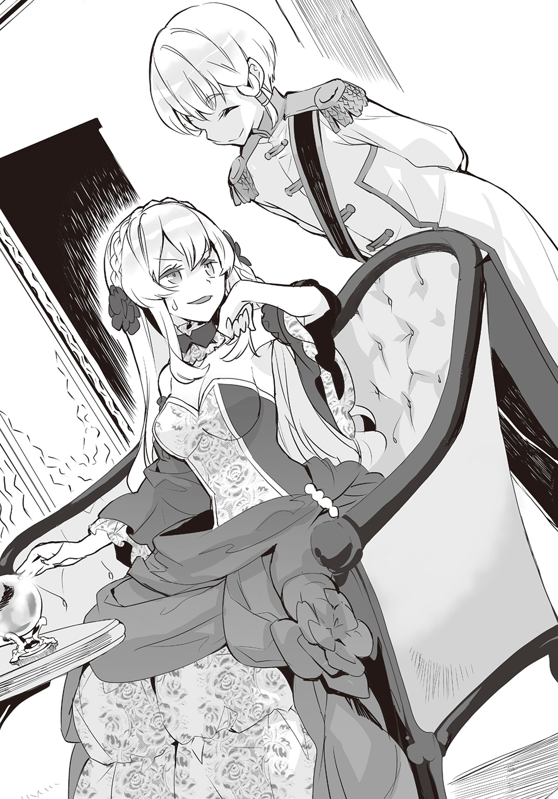
カミルの微苦笑から苦みが消える。柔らかい微笑だが、瞳だけは笑っていない。
「ルナリア姉さまのことですよ。魔法未開の僻地の学校なんかに留学し、命の恩人とはいえ、現地人の騎士になりたいだなんて、いったい何をお考えなのでしょうね」
――あんた。ルナリアが戻らないほうが好都合のくせに。
ソニアはそう思いながら、にっこりと笑んでみせる。
「そりゃあの子は、彼にべた惚れですもの。命の恩人とか、そんなのはもう関係ないのよ」
「恋ですか。それは素敵なことなのかもしれませんが、一時の感情に流されるのは王族にふさわしくはないのではないでしょうか」
「一時の感情――ね。カミルが言うところの一時の感情で、魔法は基礎しか知らず、剣など触れたことさえなかった人間で、たった三年で聖騎士の位を賜れるほどの修練に耐えられる人間が、この国に......いいえ、この世界に、いったいどれだけいるのかしらね」
む、とカミルが黙り込む。数秒の沈黙の後、口を開く。
「三年で素人が聖騎士になるのが常軌を逸していることくらい、僕にもわかります。ただ、何度も死にかけるような修練を、たかが男一人のためにするのは、理解しかねますが」
くす、とソニアは笑いをこぼした。
「それは女を知らないだけよ。女は惚れた男のためなら簡単に命をかけるわよ？」
「にわかには信じられない話です、それこそ」
「私もカミルも、もちろんルナリアも。誰が、命がけで生んだのかしら？」
あ、とカミルが気付いたような顔をした。ばつの悪そうな表情になる。
「――そういうことなら、わからなくもありません」
ソニアもルナリアもカミルも、現ブリタリア王の正室、王妃の子である。
だが、王妃はすでに故人だ。カミルを生んで一年も経たずに亡くなった。
だから、カミルは母を知らない。
――そのせいかもしれないのよね、この子が女を下に見て、権力欲ばかり強いのは。
「まあ、まだ一二にもならないカミルに理解れなんて言わないわ。だから、ルナリアのことは――放っておくように。いいわね？」
念を押すように、ソニア。カミルの表情が、当たり障りのない愛想笑いに戻る。
「嫌ですね、ソニア姉さま。姉の恋の邪魔なんて、しませんよ」
「......そういう意味で言ったんじゃないけれどね――ま、それならそれでいいけれど。まだ用はあるのかしら？」
「いえ。ルナリア姉さまの決意の固さが、何となくですがわかった気がしますので、今日はこれで。それでは失礼いたします」
一礼してカミルが部屋を去って行った。
ドアが閉められた後、ソニアは、べーと舌を出した。
「どうせ何かするんでしょ、あんた。三年前のように」
三年前、ルナリア暗殺を命じたのがカミルだと、ソニアは考えている。証拠は何もない。
この弟ならやりかねないと思うだけだ。
三番目に生まれてきた、それだけで王位継承権が第三位ということに納得するような少年では、決してない。
「――私は王なんてなる気はないし、ルナリアだってきっとそう......でもね。あんたに王位はやらないわ。絶対にね。父さまの次に玉座に座るのは、たぶん――」
ちらりとソニアは水晶球に目をやった。
「気が早いわね、さすがに」
Ⅱ 退屈な学院生活の始まり
「酷い目に遭った」
（おう。群衆はいつの時代も恐ろしいな。奴らは群れると遠慮がなくなる）
練の運動神経は人並みだ。足もそれほど速くない。練を強引な勧誘に来た生徒の中に陸上部の部員がいて、練は校門を出る前にあっさりと捕まってしまった。
さらに拘束魔法を掛けられ、三〇人以上の生徒たちに取り囲まれ。
騒ぎを聞きつけた学院長が勧誘合戦に介入するまで、練はもみくちゃにされたのだった。
学院長が『黒陽練の部活勧誘は絶対禁止だ！ わかったなガキども！ 禁を破った生徒は我が鉄槌の裁きを喰らわすぞ!!』と怒ったのが効いたらしい。
寮の部屋まで部活の勧誘に来る生徒は、いなかった。
「部活勧誘でこれだけ騒がれるんだ。もし王女殿下に求婚されたことがバレたら、どうなる」
（まあさっき以上の大騒ぎになるだろうな。くっくっくっ、たいへんだなあ、おい）
他人事のようにグロリアス。ぶるっと練は身震いした。
「......だよな。あれだけは秘密にしないと」
練はため息をつき、これから卒業まで住む部屋のドアのノブに手をかける。
ぴた、とそこで練は動きを止めた。
（どうした？ 入らねえのか？）
「......さっきの勧誘の誰かが、こっそり中で待ち構えている可能性に気がついた」
（さすがにそれはねえだろ。寮、ここまで生徒の誰にも会わなかったじゃねえか。マリーが気を利かせてくれたおかげで、他の生徒より早く寮に来られたんだしよ）
遅刻した練は校舎に寄らず寮に来た。他の生徒は今頃、寮への帰路につく頃だろう。
「それもそうか」
練は安心してドアを開けた。
正面。滑らかな白い背中。緩やかな曲線の臀部を覆う白い布の面積は狭く、すらりとした長い足も肌が露わになっている。
練はドアノブを握ったまま硬直した。
――あれはどう見ても男物の下着には見えないが。
――しかし背中が丸見えだ。ブラジャーは付けていない。
――いや待て、男性用ブラジャーなるものを何かで見た覚えがある。
――女だってブラジャーを付けないこともありえるんじゃないのか？
そんなことを考え、じいっと練は、白い背中から尻、太股からつま先まで眺め回した。
（あの尻と太股で男だったら、この世は理解不能の奇跡で満ちてるぜ？）
と、グロリアス。ここは男子寮。部屋も間違ってはいないはず。
着替えの途中らしく、手にシャツを持ったまま、ショートカットの髪を揺らして振り返る。
「あ、ごめん。すぐ着替えるし、入っててよ」
男にしては高く、女にしてはやや低めの柔らかい響くよい声で、練はそう言われた。
（この声で男だったら俺、初めて男を喘がせてみたいと思った）
――いや、さすがにこの体つきにこの声は、女の子だ。
「部屋を間違えた」
練は後ずさり、ドアを閉めようとした。
シャツで胸元を隠した、彼か彼女か判断に困る相手が、ととっと練に駆け寄り手を摑む。
「黒陽練くんだよね？ 大丈夫、部屋は間違ってないから」
ほっそりとした指からは想像できない強い力で手首を握られ、練は部屋に引っ張り込まれた。
練を部屋の奥へと押し込み、身体を入れ替えて彼女が後ろ手でドアを閉める。
がちゃり、と鍵のかかる音がした。練は気にせず、部屋を改めて見る。
部屋は八畳ほどの広さで正方形に近く、両側の壁にそれぞれクローゼットとロフトタイプのベッドが据え付けられている。ベッドの下に机と椅子。
部屋中央、天井にはカーテンレールがあり、部屋をカーテンで仕切って使うようだ。
右側の机のそばに、見知った段ボール箱が四つある。練が送った荷物が三つ、学院から支給された教科書類の箱が一つだ。
（狭ぇ部屋だなあ、おい）
「必要充分だろ、勉強して寝るのには」
練の言葉を彼女は独り言だと思ったようだ。シャツを羽織った彼女が手を差し出す。
「うん、広くはないよね。今日からよろしく」
「どうも」と練は手を握り返す。彼女が握手したまま、にこりと笑んだ。
「さっそくだけど自己紹介をしようか。僕は江井紫音。君と同じ高等部からの編入組だよ。で、君のクラスメイトでルームメイト。今日は体調が微妙だったから、入学式だけ出てオリエンテーションは途中で早退したんだ。どうにも身体がまだ上手く動かせなくてね」
「それで部屋にいたのか――って、先に着替えを済ませてくれないか、目のやり場に困る」
練は顔を横に向けた。だが目はどうしてもシャツとパンツのみの女体に向いてしまう。
（諦めろ。それが思春期の男の子ってもんだ）
「う――」るさい、と声に出しそうになり、練は自重した。
道長と決闘をする羽目になったのも、グロリアスの軽口にうっかり反応してしまったせいだ。
紫音が面白そうに練の顔を覗き込む。
「そうかい？ 別に僕は困らないんだけどね？」
「近い」
「近づいているからね。っていうか、お近づきになりたいし？ なんならこの下、見る？」
羽織っているだけのシャツの前を紫音が開こうとした。
「遠慮するよ。そんなことより、君。女子なのにどうして男子寮に――待て。さっき、ルームメイトだって言わなかったか？」
練は紫音に向き直った。鼻と鼻がぶつかりそうになり、のけぞって身を離す。
「言ったよ？」
きょとんとした顔で、紫音。
「あれれ、学院長から聞いてない？」
「何も聞いていない」
「そっか。聞いてないなら戸惑いもするよね。ごめんごめん。んじゃ改めて僕から説明するよ。僕、一身上の都合で男子生徒として入学したんだけど、ほら、この学院の高等部って全寮制じゃない、二人部屋の。一人部屋を希望したんだけど無理って言われてさ、それなら秘密を守ってくれる紳士的な生徒と同室にしてくださいって、学院長と直接交渉したんだよね」
（紳士？ ヘタレの間違いだろ）
ヘタレと言われても練は腹が立たない。無節操に異性に手を出さないのがヘタレならば、そう呼ばれても別に構わないと思うからだ。
「それで、俺なのか」
「うんにゃ、そういう生徒に心当たりがあるって、僕が君を指名していたり！ 君になら手を出してもらっても僕は構わないからね。僕が女子だってことさえ黙っていてくれるなら、何なら今、身体で支払っておこうか、口止め料？ ちょっと胸が控えめだけど、割といい身体していると思うんだ、僕。ほら、この腰のラインとかさ、そそらない？」
くいっと腰をくねらせて紫音がボディラインを強調する。
練は再び顔を逸らした。少し顔が赤くなっているのが自分でもわかる。
「初対面だよな。それなのに俺を指名って、変じゃないのか」
「あはは。初対面だけどね、君は、君が思っているよりも有名人なんだよ？ この学院にいるものなら、生徒、講師、誰もが君を知っているさ。君は偉業の達成者なんだから」
（ま、当然だろ。後からわかったこととはいえ、ブリタリアの魔法使い数人がかりの攻城魔法を一人で防ぎきったんだからな、一二歳のガキだったおまえが）
「そうなのか？」
練の問いはグロリアスへのものだったが、紫音が、ぱっと表情をさらに明るくした。
「そうなんだよ！ あんな可愛い王女が暗殺されるなんて、この世界にとってもブリタリアにとっても大損失だよね、ほんとうに命を救ってくれてありがとう！」
紫音が練の手を両手で握り、ぶんぶんと振った。その動きでシャツがはためき、前が開く。
「......その。ほとんど見えてるから、ちょっとは遠慮してくれないか」
「うん、知ってる。っていうか見せてるし」
「荷物の整理をしたいんだ。お互い、プライベートはそれなりに大事にしよう」
練は強引に紫音の手を振りほどき、同意を得る前に部屋の仕切りのカーテンを引いた。
ほ、と一息つき自分の段ボールに向かう。
「黒陽くんさ。女と同室なんて無理だとか、学院長が許可しても他の講師に訴えるとか、言わないんだね。それって普通？」
紫音の声。練が振り返ると、カーテンに紫音の影が映っていた。
（おおう。直に見るよりエロいんじゃねえか。特に足のラインとか）
練は、さっと視線をカーテンから外した。
「江井さんには江井さんの事情があるんだろ、性別を偽るのに」
「まあ、ね。その理由、聞かないんだ？」
「聞く必要はない。学院長が同室を許可したんだろう？ 抗議をしたところで、あの学院長がまともに話を聞くとも思えない」
練はルナリアに大鉄槌で襲いかかったマリーの姿を思い出した。
――あの人は、自分が面白ければそれでいいタイプの人間だ。
でなければ、道長との決闘を許可したりはしないだろう。
（まあ、ありゃ確かに一度決めたことを考え直したりはしねえタイプだな）
「それに。江井さんは俺なら秘密を守ると信用して、俺を指名したんだろう？ その期待を裏切りはしない。だから、適度に距離を取って接してくれると助かる」
「ふふっ。ほんと、いい人だね。僕のことは紫音でいいよ」
「悪い人よりはマシじゃないか、紫音。秘密を盾に色々要望するような奴だったら困るだろ」
「僕はそれでもよかったんだけどね、相手が君だったら。重ねてお礼を言うよ。三年前、ルナリアを守ってくれてほんとうにありがとう」
「紫音に礼を言われることじゃないさ。俺のことも、練でいい」
「そっか。それじゃ練、また後でね」
（内心喜んでいるくせに）
うるさい、と胸中で呟き、練は荷ほどきに取りかかった。
「だいたい片付いたか」
練は空になった段ボールを畳み、カーテンで区切られた自分の空間を見回した。
窓はカーテンを挟んでそれぞれ二つ。二人部屋で完全に共用なのは出入り口のドアと、ドア脇のシューズボックス、小さいながらに浴槽もあるトイレ付きのユニットバス、それからガスコンロ等がない電気ケトルが一つあるのみの簡素な洗面台を兼ねたキッチンだ。
最小限だが、プライバシーは一応確保されている。
「この部屋、使い勝手がよさそうだ。気に入った」
こんな狭いところで満足するとは小者だな。
そう言いそうなグロリアスは、練の左目の視界で横になり、熟睡中だった。精神だけの存在だからか、グロリアスは練よりも長く眠る。退屈するとすぐさまうたた寝を始めるほどだ。
「ま、静かでいいんだが」
「そっちは片付けが終わったのかい？ 僕はまだしばらくかかりそうだけど」
カーテン越しに紫音の声。
「ああ。俺は荷物が少ないから。女子だとやっぱり多いのか？」
「僕も、それほどじゃないけどね。衣装や装備の部屋とか、実家にはあるけれど」
「それは凄いな。ひょっとしてお嬢様なのか？」
「それほどでも――」
ぐぅぅぅぅぅ、と腹の虫が鳴く音がし、紫音の言葉を遮った。
「ぼ、僕じゃないよ？？」
「悪い、俺だ。そう言えば朝から何も食べてなかった」
「そうだったんだ。そう言えばもうお昼過ぎてるね、食堂行こうか？」
「食堂？ ああ、そう言えば入学案内にあったな。向かい合わせで立っている男子寮棟と女子寮棟の間に共用施設棟があって、大食堂もそこにあるんだったか」
「そ。エントランスホールとか自習室とか談話室とかもあるよ。寮の個室にテレビはないから、大画面で見たい時はそっちに行くんだ」
「その辺の設備も見ておきたいな。行こう、大食堂」
「うん」
しばらくして練は、紫音と連れだって部屋を出た。練たちの部屋は、男子寮の四階。
目的の大食堂に行くには一階まで降りなければならないため、道のりはそこそこ長い。
途中、何人もの寮生とすれ違う。
「今のが黒陽練か」「ああ、三条院をコケにした、あの」「学院長から寮で部活勧誘するなって釘刺されたんだよな」「むすっとしていて声かけにくいな、近くで見ると」
反応に困る言葉ばかりで、練は愛想笑い一つ浮かべない。ただ少し早足になっただけだ。
「ちょっと失礼な人たちが多いね。注意してこようか」と紫音。
「ほっとけばいい。むしろ反応したら余計にいじられる」
「それもそうだね。君、有名人だもんね」
『誰もが君を知っているさ』
練は紫音に言われたことを思い出し、微妙な居心地の悪さを感じた。
三年前のテロ事件で、未成年の練は実名報道されていない。だから中学校で誰かに特別扱いされることもなかったが、この学院では、そうもいかないようだ。
――これで目の中に近代ブリタリア式魔法の生みの親が住んでいるなんて知られたら。
――どんな扱いされるかわかったものじゃないな。
練は左目で爆睡中のグロリアスの存在だけは隠し通そうと決意を新たにした。
たびたび投げかけられる好奇の視線を無視し、練たちは大食堂の入り口に到着した。食券販売機の近くで練たちは足を止める。
「オリエンテーションが終わって考えることは、みんな同じなんだねえ」
と紫音。大食堂は大勢の生徒で混雑していた。
「学生カードで食券を受け取るんだったな、ここは」
「そう。朝昼晩、一食ずつ無料で食券を支給してもらえるよ。メニューは選び放題さ」
練と紫音はそれぞれ、学生カードを取り出した。カードの大きさは、一般的なクレジットカードや公共交通機関プリペイドカードなどと同じだ。
顔写真と氏名、学年とクラスという学生としての基本情報の他、一般学力、体力、魔法技術、魔力蓄積量などの現在の各種ステータスが数値化されて記載されている。
「あ。ほんとうに魔力量が一なんだね」
練のカードを紫音がまじまじと見る。少し気まずくなった練は親指で数値を隠す。
「そういう紫音は幾つなんだ？」
「僕？ ざっくり二五〇かな。魔力量には自信あるんだ、そこそこね」
魔力蓄積量は年齢によって多少は増加するが、ごく一般的な魔法使いの才能がある人間の平均値は、一〇〇ほどだ。二五〇はかなり多い。
「......それだけあれば、俺なら世界さえ取れそうだ」
（ふわあ。ちなみに生前の俺。今の基準で数値化すると一〇〇〇〇オーバーだけどな）
グロリアスが目を覚ました途端、とんでもないことをさらりと言った。
「――聞いてないぞ、そんなでたらめな数字」
（そりゃ聞かれたこともねえもん。何でわざわざ機会もないのに俺から教えないといけねえんだ。それにおまえ。信じてないだろ、疑念がビンビン伝わってくるぜ）
「......当たり前だ」
「って、練？ 何をぶつぶつ呟いているんだい？ 僕の二五〇って数字、そんなに変かな？」
紫音が練の顔を覗き込むように距離を詰めてきた。練はわずかに身を引く。
「いや、そんなことは。確かに羨ましいくらいに多いが、それくらいならそんなには珍しくないだろう。今日、俺が相手をさせられた三条院だって、たぶん二〇〇は越えていたし」
「ああ、三条院くんか。そうだね。僕が早退する前にオリエンテーションの自己紹介で自慢してたよ、魔力蓄積量二〇〇オーバーって」
（なるほどな。じゃあ今日の決闘、あの大技二発でだいたい打ち止めってところだったのか）
――紅蓮鷹とか言っていたか、あの火炎砲撃系魔法。
（ああいうの撃ちたいって思ったろ、おまえ）
――小学生の時は、攻撃魔法の実践をする機会がなかったからな。
（そりゃそうだ。この国じゃ魔法に関する法律、整備の途中だからな。基本的に街中じゃ魔法の使用は禁止だし。ここでも魔法を使うとそのカードに記録が残るんだろ？）
――ああ。講師たちにしか読めないが、カードの裏に魔法行使の履歴が表示される。
練は手元のカードを裏返してみた。ただ白いだけで何も記述されていない。
「どうしたんだい、不思議そうにカードなんか見て。それより食券を選ぼうよ。ほら、今日のお勧めは『辛さの刺激で魔力を鍛えよう、超激辛麻婆豆腐セット』だって！」
紫音が練の手を引っ張り、食券販売機に向かう。
「ちょっと待てよ、おまえ黒陽練だよな！」
見覚えのない男子生徒が、練たちの行く手をいきなり塞いだ。
「そうですが、何か。部活の勧誘なら、禁止されたんじゃ？」
「勧誘じゃねえって、姫殿下のことだって！」
別の男子生徒が二人、唐突に会話に加わってくる。
「何かさ、姫殿下に騎士になりたいって言われたんだって？」
「くっそー、うらやましいせ！ 当然、受けるんだよな!?」
上級生なのか、馴れ馴れしく男子生徒が練の肩をバンバンと叩く。
「いえ、受けませんが」と練は不機嫌な声で即答した。
「えええ、何でえっ!? だって姫騎士だぜ、断る理由がいったいどこにあるんだよ！」
会話を聞いていた別の生徒が、大声を上げた。大食堂が一瞬静まり、すぐさまざわめく。
多くの生徒の視線が集まり、紫音が苦笑した。
「......何か目立っちゃってるねぇ、僕たち。こりゃ購買でパンでも買って部屋に戻ったほうがいいかな」
「そうだな」
練は同意し、振り返った。すでに背後にも生徒の輪。すっかり囲まれてしまっている。
男子と女子が入り交じり、めいめい勝手に騒ぎ始めた。
「断るってバカじゃないか？」「意味わかんなーい」「ブリタリアとのコネは欲しいよな」
「くっそー、替わってもらいてえ」「断られる姫さまがかわいそうよね」「ほんとほんと」
練は生徒の輪を一瞥し、いっそう不機嫌な声で告げる。
「すみませんが退いてもらえませんか」
「いーや、退かないね！ どうしてルナリア王女殿下のありがたすぎる申し出を断るのか、納得のできる説明をしてもらえるまでは！」
「......勝手にあれこれ想像して、勝手に納得すればいい。付き合いきれない」
練は強引に生徒たちの囲みを突破しようとした。だが、逆に突き飛ばし返される。
「一年。おまえ、ちょっと生意気じゃないのか？」「だな。有名人だからってこっちが下手に出てれば偉そうに」「っつーかコイツ、ノウ無しなんだろ？」「元神童だろうがまともに魔法も使えないんじゃな」「そっか、それで哀れんだ姫殿下があんな申し出を」「なるほどー」
上級生たちの勝手な言葉に、練はかちんと来た。
練以上に、紫音は頭にきたようだ。引き攣った笑顔で、声を張る。
「凡人の妬みもいい加減にしてくれませんかね、先輩方！ 凄くみっともないですよ！」
練に絡んでいた上級生たちの表情が、怒りに一変する。
「何だって!?」「うっわ、コイツのほうが生意気!!」「見ない顔だし編入組か!? 俺たち内部生だぜ、偉そうなことを抜かすな！」「ったく女みてえな顔しやがってよ！」
怒りの矛先が紫音に向く。まずいなと練が思ったその瞬間。
「ほんとうにみっともないですよ、先輩たちは。いい加減にしたらどうです」
女子の声が、絡む上級生たちの向こうから聞こえた。
上級生たちが左右にわかれ、振り返る。その中の誰かが、ぼそりと言う。
「千羽アリス亞梨子......」
金色の長い髪を、頭の左右で結んだ、いわゆるツインテールの髪型。背丈は高校一年生女子の平均くらいだが、体つきは華奢だ。胸はかなりつつましく、紫音よりも男装に向いていそうな体型だが、腰の位置が高くて足がすらりと長く、スタイルとしてはいい。
やや吊り目だが目鼻立ちは整っており、どこかのアイドルグループでセンターを務めていても不思議ではなさそうな自信たっぷりのオーラを纏っている。
千羽アリス亞梨子という変わった名前といい、容姿といい、純粋な日本人ではなさそうだ。
練の見知らぬ女子生徒だ。ぼそぼそと周りから噂話が聞こえてくる。
「あれ、千羽だよな。今年の新入生主席の」「っつか中等部のステータスレコードホルダーだろ」「魔力蓄積値四〇〇オーバー、魔法技術値が大学生も真っ青の五〇〇オーバーのスーパーエリートだ」「高等部じゃ二年どころか三年でも、千羽より上の数値の奴いないだろ」
そんな千羽アリス亞梨子が、練をじいっと見つめた。
「久しぶりね、練くん」
「......久しぶりって。俺、会った覚えはない」
（ちょっと待て。どこかで......いや。あれ？ 俺の記憶違いか？ こんな可愛い女子なら、俺が忘れるわけねえもんな）
グロリアスもどうやらアリスのことを知らないようだ。練は改めて、
「初めまして、だと思うんだが？ その、千羽アリス亞梨子さん。クラス名簿で名前だけは俺も見た。変わった名前だから覚えていた、これからよろしく」
クラスメイトへの挨拶として、手を差し出した。
「え？ え？ え？」
アリスが練の顔と差し出された手を何度も見比べる。その顔が見る間に赤くなる。
「ああそう、よろしく！ よろしくしてくださいな、元神童!!」
怒った様子で練の手に平手をパチンとぶつけると、アリスが踵を返して立ち去った。
「......何だったんだ？」と練は首を捻った。背を、とんと押される。
「何でもいいよ、今のうちに逃げるとしようよ」
と、紫音。練はアリスの登場に圧倒された上級生の囲みを脱し、その場を急いで後にした。
そして、夜。
――騎士だの、嫁だのって。何考えているんだ、あの姫さまは。
昼間の出来事を思い出し、練は寝付けないでいた。カーテン向こうからは紫音の健やかな寝息が聞こえてくる。男と同室なのを気にもしないで、ぐっすりと眠っているようだ。
ロフトベッドに仰向けで横になり、手を伸ばしてぎりぎり届かない程度の近い天井をぼんやりと練は見ていた。左目の視界ではグロリアスが腕を枕にして眠っている。
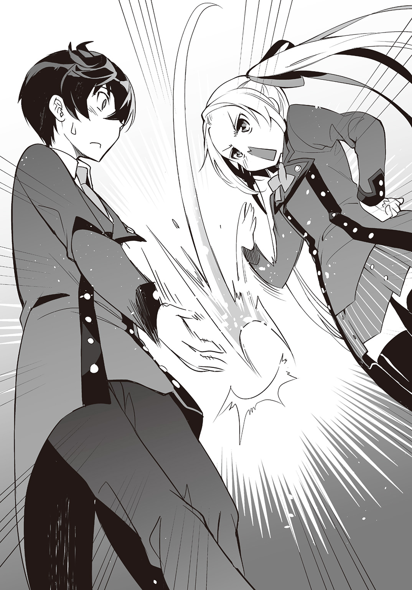
大食堂で生徒たちに囲まれた時の話題は、騎士についてだった。
とりあえずルナリアの求婚だけは、知れ渡っていないらしい。
「知られたら困ることばかりだな。グロリアスのこととか、求婚のこととか。紫音の性別のこととか。何だかややこしい立場になった気がする......結局、夕飯も食堂で食えなかったし」
昼の大食堂での騒動。千羽アリス亞梨子という女子生徒の登場の隙に練と紫音は逃げたが、野次馬たちは追ってきた。
結局、購買に立ち寄れず、紫音が備蓄していたカップ麵で昼食を済ませる羽目になった。
夕食時に再び大食堂に向かったが、物陰から入り口付近を覗き見たところ、昼にアリスに恥をかかされた上級生たちの顔が幾つかあった。練を待ち構えているようだった。
気付かれないよう練は引き返し、購買に立ち寄って食べ物を仕入れて部屋に戻った。
パンとスナック菓子というバランスの悪い夕食を紫音と済ませ、食後はたわいのない雑談をし、順番に部屋に備え付けのユニットバスを使って入浴、就寝。今に至る。
「何を考えているかと言えば、紫音もか」
「ぅーん。そこは......駄目......だってぇ」
カーテンの向こうから紫音の声が聞こえ、どきりとして息を潜める。
再び寝息に戻った。ただの寝言のようだ。
「......俺がここにいても、平気で風呂に入るとは。そこまで俺を信用する意味がわからん」
――グロリアスなら何か、わかるだろうか。
ふと練はそう思ったが、魔法の師は左目の中で爆睡中。寝言まで漏らす。
（......練......聖地......漫喫......行こうぜ......）
グロリアスはこの世界の創作文化をいたく気に入り、漫画喫茶を聖地と呼んでいる。
特に漫画が好きだ。練が許可すれば、練の左半身のみグロリアスは自由に動かせるため、練が右半身で勉強をし、左半身でグロリアスが漫画を読むなんてこともあるくらいだ。
「漫喫か。落ち着いたら行ってやるか。グロリアスの機嫌をとれば、新しい魔法を教えてくれるかもしれないし......にしても......今日は疲れた――」
ようやく意識がぼんやりとし始め、練はまぶたを閉じた。
不意に近くで誰かが魔力を使う気配を感じ、目を開ける。
「何だ？」
練はロフトベッドの上で身を起こした。
立ち上がると天井に頭をぶつけるため、座ったまま魔力を感じたほうへと目を向ける。
カーテンの引かれた窓の向こう。ぼんやりと魔法記述光跡と思しき光が見えた。カーテンのせいで記述は読めないが、何者かが窓の外で魔法を使おうとしているようだ。
「......ベランダなんかないぞ、この寮。ここは四階なのに、いったい誰が」
ことり、と音がした。半円形で回転させるクレセント錠が開けられた音のようだ。
すーっと静かに窓が開かれ、入り込んだ夜風でカーテンがはためき人影が現れる。
「誰だ」
「何よ、起きてたの？ それなら鍵を開けてもらえばよかったわ」
女子の声だ。どこかで聞いた気がして練は首を傾げ、ああ、と思い出す。
「その声。夕方、食堂で声をかけてきた――確か、千羽アリス亞梨子さん」
「何よ、そのフルネームで他人行儀な呼び方！ 練、ほんとに私を覚えてないのっ？」
わずかに声を荒らげて、アリスが部屋に入ってきた。体重を感じさせない異様に軽快な動きで、音もなく練のロフトベッドに上がり込む。
ベッドの上で身を起こしている練に、アリスが四つん這いの姿勢で身を寄せた。
吐息がかかりそうな距離。常夜灯の薄暗い灯りの中で、練はまじまじとアリスの顔を見た。
「ほんとうに、わからない。君みたいな美人なら、会えば絶対に覚えていると思うんだが」
ぽ、とアリスが紅潮するのが薄明かりの中でもわかった。
「び、美人て。そ、そうね。自分で言うのも何だけど、私ってけっこう美人よねっ」
くねりくねりとアリスが奇妙な動きをする。練は率直な疑問を口に出す。
「ところで女子寮は向かいの建物だろう、どうやってここまで来た？」
「バカね。飛んで来たに決まっているじゃない」
と真顔になってアリス。なるほど、と練は頷く。
「飛行魔法か。使用魔力はどれくらいだ、その魔法？」
「そうね。速度や高度、風向きにも影響されるから一概には言えないけれど、一〇メートル飛ぶのに魔力を最低でも一くらいは消費するわね」
「......となると、今の俺じゃ一〇メートル飛んで終わりか。実用性には乏しいが、覚えておいて損はないな。今度、魔法記述光跡を展開するところ、見せてくれ」
「別に構わないけれど」
何故か嬉しそうに、にやつくアリス。練は別の疑問を口にする。
「それはそうと。何をしにきたんだ？ 俺が忘れているのを怒りに来たのか？」
「――はっ。ち、違うわよ！ あんたが私を忘れていようがいまいが、か、関係ないものっ。ふんだ、勝手に忘れていればいいのよ。そのことはこの際、置いておいて、ねえ、練。貴方、騎士にってこととは別に、王女殿下に何か変なこと言われてない？」
「――――変な、こと？ さ、さあ」
練はアリスから顔を逸らした。嫁に、というのはどう考えても変なことだ。
アリスが練の太股にまたがって腰を下ろし、練の顔を両手で摑んで強引に自分へと向かせる。
ぎくりとした練の目を、まじまじとアリスが覗き込む。
「そうやって都合が悪くなると顔を逸らすの、昔のまんまよね。何を言われたのよ？」
練は視線を明後日のほうに向けた。
「............そんなこと。千羽さんには関係ないと思うが」
「練の立場で考えると、そうかもね。でも、こっちにはこっちの都合があるのよ。それに私、中等部主席だったせいで、王女殿下のルームメイトに指名されたの。カーテンの向こうでため息ばっかりつかれたら、気にもなるわよ。で？ 何を言われたの？」
ルナリアがため息。その言葉に、練はちくりとした痛みを感じたような気がした。
「すまないが、言えない。王女殿下のプライバシーに関わることだから」
「プライバシー？ そんなこと気にしなくていいわ、私が黙っていれば済むことだもの。いいから、話しなさ――」
「......練くん？ 誰か来てるのかい？」
カーテン越しに紫音の声が聞こえた。紫音がベッドサイドのライトを付けたらしく、カーテンに影が映り込む。今にもカーテンをたぐって開けそうだ。
アリスが練の顔を摑んでいた手を放し、指をカーテンに向ける。
「寝てなさい、貴方は」
指先から流れる魔法記述光跡。精神操作系、強制睡眠の魔法だと練にはすぐにわかった。
「へえ。この僕に精神操作系魔法をしかけるんだ？ 甘いよ」
アリスの魔法記述光跡が崩れ、光の粒になって消えた。
「一瞬で解呪されたっ？ そんなっ」
「誰だか知らないけど、その声は女子だね？ 夜這いとは大胆な。練くんの大事な貞操に手を出そうなんて、これは捕まえて学院に突き出すしかないかな」
紫音の淡々とした口調が逆に恐ろしい。
「やばっ。それじゃ練、またねっ」
アリスがあたふたと練から離れ、来た時と同様に重さを感じさせない動きで素早く窓から出て行った。ここは四階だ。落ちれば当然上げるだろう悲鳴は、聞こえて来ない。
アリスの魔法技術力の高さに、練は感心した。
「ずっと飛行魔法を発動させていたのか。それで強制睡眠を並列起動させられるなんて、ずいぶんと器用なんだな。並列起動、俺も研究してみよう」
シャッと音を立て、部屋の仕切りのカーテンが開けられる。
「誰だったんだい、今のは。知り合いかい？」
見ると、男物のシャツを寝間着代わりに羽織っただけの紫音がそこにいた。
すらりとした白い脚が常夜灯に浮かび上がり、練は視線を横に逃がした。
「......知り合いらしいんだが、俺にはよくわからん」
「そか。そんじゃ追及はしないでおいてあげるよ。でも、機会があったら言っといて。次は絶対に見逃してあげないからってね。精神操作系魔法の神髄を見せてあげるよって」
紫音の言葉は、はったりとは思えない妙な自信を感じさせた。
「紫音ってそんなに得意なのか、精神操作系魔法？」
「まあね。その気になれば、東京都民一〇〇〇万人を支配下におくことだって可能かな。然るべき準備をし、タイミングと状況をきちんと狙えばだけど」
「そんなことまでできるのか！」
練は目を丸くした。思わずロフトベッドから身を乗り出す。ぱちくりと紫音が瞬きする。
「......疑わないの、今の？ さすがにそりゃありえないとか、さ？」
「噓なのか？」
「いやあ。噓じゃないけどね、うん。まあ、絶対にやらないけど。やったらママに、どんな目に遭わされるかわかったものじゃないから。っていうか、普通にぶっ殺されちゃうかな」
ママ。紫音の口から出たのは初めての単語だ。練は軽く首を傾げる。
「紫音、俺と同じで高等部からの編入組だと言ったよな。ママ――母親が、魔法の師なのか？ 使うのは近代ブリタリア式だよな、もしかしておまえ、ブリタリア人か？」
紫音が、しまった、という表情をする。
「......んー。当たらずとも遠からずってところかな。夜這い彼女のこと追及しない代わりに、このこともあれこれ訊かないでくれると助かるんだけど」
「何か事情があるということか。そういうことなら、承知した」
「あっさり納得するんだね。変わってるねえ、練くんって」
「そうか？ 他人の困ることを追及したって迷惑なだけで、誰も得はしないだろ？」
「うん。やっぱり変わってる」
変わり者認定されたが、練は気にしない。かつて散々、言われたからだ。
『あんたみたいな怪物、産んだ覚えないのに。何で魔法なんて使えるの、絶対に変よ』
実の母親に、そう初めて言われたのは幼稚園に入る前の日だったと練は記憶している。その後もたびたび同じようなことを言われ、やがて母親は育児放棄。練は叔母夫婦に保護された。
叔母たちは親切だったが、叔母夫婦には『魔法の使えない普通の子供』がいた。
結果、練のほうから叔母夫婦から離れ、小学校高学年の時にはもう一人暮らしをしていた。
「変、か。人にはそう見えるらしいのは、知ってる」
ぼそっと練は呟いた。
「......あれ？ 気に障ったなら謝るけど......」
「いや、そんなことはないから問題ない。それよりも。時間がある時で構わないから、精神操作系魔法を触りだけでも教えてくれないか？ その系統の魔法には疎いんだ」
「お！ いいね、すっかり目も覚めちゃったし、それなら今、眠くなるまで精神操作系のレクチャーしようか！ 降りておいでよ、いい紅茶があるから淹れてあげる！」
「ありがとう、ご馳走になるとする」
練はロフトベッドから降りた。ふと頰に風を感じて振り返ると、アリスが開けた窓がそのままだった。窓を閉めるついでに、向かいの女子寮を見やる。
女子寮と男子寮は同じ造りで、鉄筋コンクリートの表面を赤れんが風の壁材で覆ったホテルのような建物だ。女子寮にも、ちらほらと灯りの点いている窓がある。
明日からの授業に期待を抱き、興奮を覚えてルームメイトと語らっているのだろう。
「本格的な魔法教育が、やっと受けられるんだ。俺も」
練は期待感で自分が浮かれるのを感じた。
「はい、皆さん。おはようございます」
教壇で担任のシャーリーが、国立魔法技術学院高等部一年Ａ組の教室を見回した。
席のレイアウトは基本的に縦五席、横六列。一年Ａ組はちょうど三〇人。
新学期の席順は、姓のイニシャルのアルファベット順で並ぶ。
練の席は廊下側から二列目の最後尾で、右隣に紫音。左隣は見知らぬ女子だ。
『おはようございます』と生徒たちの返事が揃う。うんうんと満足げに頷くシャーリー。
「今日から授業が始まります。皆さんのほとんどは中等部から進級されているので特に説明は不要かと思いますが、高等部から編入した方、何か質問はありませんか？」
シャーリーが、ちらりと練を見た。このクラスで高等部から入学したのは練と隣の紫音、ブリタリア王国からの留学生ルナリアのみだ。
（何か訊きたいことがあるかってよ）
――特にない。
練はシャーリーの視線に無反応を保った。
す、と教室の一角で手が上がる。廊下側、前から二番目の席。ルナリアである。
「はい、先生。質問ではありませんが、お願いがあります」
教室がわずかにざわめいた。シャーリーも予想外だったのか、少し動揺した表情になる。
「お、お願い、ですか。なんでしょう」
「私の席を、練さまの隣に変えていただきたく存じます。私は、認められていないとはいえ、練さまの騎士。主のそばにいるべきですので」
「――はい？」
面食らったような顔のシャーリーに、別の生徒が声を投じる。
「そういうことなら、私もお願いします」
窓側から二列目の席にいるアリスだった。シャーリーが困惑して苦笑する。
「ええと。千羽さんは、どういう理由でしょうか」
「練――いえ、黒陽くんは高等部からの編入組です。授業も、もしかしたらわかりづらいことがあるかもしれません。彼の質問でいちいち授業を止められては、講師も迷惑でしょ？ 僭越ながら私が、彼の勉学をサポートしたいと思います」
「あー......そういうことでしたら、お願いしたほうが他の皆さんのためにもなりますね」
練の右隣、紫音がさっそくとばかりに席を立つ。
「それなら僕が、王女殿下に席をお譲りしますよ」
練の左隣の女子が、シャーリーに言われる前にカバンを持って腰を上げた。
「あたしが千羽さんと替わります。別に困らないですし」
アリスの姓は千羽。道長の姓は三条院。出席番号はアリスが道長の一つ後ろで、席順も同じ。
立ち上がった女子の口元がわずかに綻ぶ。小さな独り言。
「三条院くんの後ろになれるなら、ラッキーじゃん」
どこかで「いいなぁ」という女子の呟き。どうやら道長は女子に人気があるようだ。
嬉しそうに、左隣の女子は去って行った。
「ちょっと残念だけど、僕も移動するよ」と紫音。
「では」「それじゃ」とルナリアとアリスも席を立つ。
ルナリアが荷物を持たずに歩き出す。その背後、ふわりとカバンが宙に浮かび上がり、教室に驚きの声が広がった。
「な、何？」「魔法じゃないよな、あれ？」「超能力とかかよ!?」
ルナリアがちらりと背後を見やる。
「ジェンカ。許可します、姿を見せなさい」
「あい姫さま」とジェンカの声。ルナリアのカバンを持った白い手袋がまず現れた。
そこから滲み出すように幻術系の魔法で姿を隠していたジェンカが出現する。
教室のざわめきが大きくなった。
「メイドだ、メイド！」「メイドが出てきた！」「お付きのメイドって奴か！」「昨日、校庭に出てきた子だよな！」「ちっちゃーいっ」「超可愛いッ！」
教壇の上でシャーリーがあたふたとする。
「み、皆さん。静かにしてくださいっ。ジェンカさんは生徒ではありませんが、これからこのクラスで、ルナリアさまのおそばにいることになりますから、すぐに慣れますからっ」
騒ぎの中、ルナリアとアリスが平然と練の左右の席についた。
直後、前側のドアが開いて中年のブリタリア人男性講師が現れる。
「さっきからうるさいですよ、シャーリー講師。何事ですか。もうホームルームも終わる時間ですし、授業を始めたいんですが」
男性講師は一時間目の授業をしに来たらしい。シャーリーがさらにうろたえる。
「え、え、え、もうそんな時間――」
シャーリーの言葉を遮って、一時間目開始のチャイムが鳴り響いた。
「皆さん、静かにしてください、一時間目が始まりますよっ、ああもうみんな、聞いてえっ」
慌てふためく教壇のシャーリー。練はぼそりと呟く。
「一番うるさいのはシャーリー先生じゃないのか？」
（違いねえな、まったく）
「えー。時間も押しましたので授業を始めます。中等部からの生徒は知っていることですが高等部からの生徒もいるので、まずは教科書５ページ。近代ブリタリア魔法史の序章から」
先ほどの男性講師が教壇に立ち、教壇に埋め込まれたタッチパネルを操作する。
講師の背後。黒板代わりの大型液晶に、指定した教科書のページが表示された。
「近代ブリタリア式魔法は、一五世紀後半に一人の天才によって構築されました。名は、グロリアス・ロード＝ブリタリア。初代ブリタリア王ですね。まあ、この辺りの話も中等部からの生徒は知っているでしょうが、史上稀に見る暴君でありました」
（おいおい、酷ぇ言われようだな。俺、そんなに圧政しいた覚えないぜ？）
――歴史は後の人間が判断するんだ。圧政だったんだろ、その人たちにとっては。
（そっかあ？ 大陸東征のためにちょいと貢納を増やしたくらいだぜ？ 賦役もちょっとしか厳しくしなかったしよ、俺）
貢納は、日本の中世時代でいうところの年貢。賦役は民衆から集める一種の強制労働だ。
――ちょっとって、どれくらいだ。
（貢納は収穫の八割くらいだったかな。賦役は、どうだっけ。三〇歳以下の動ける男は問答無用で働かせたような）
――......充分以上に圧政だろ、それ。
講師の説明が続く。
「このグロリアスという男は、そのでたらめな魔法の力を振るい、ブリタイル島、この世界ではグレートブリテン島から、五年かからずに大陸を東部まで制圧しました。ですので一五世紀以降、あちら側の世界には、ヨーロッパからアジアまでは一つの国しかありません。それがブリタリア王国で、これが世界地図です」
大型液晶に世界地図が表示される。大陸や島の配置、形状はこの世界とほとんど同じ。
グレートブリテン島、ユーラシア大陸全土、オーストラリア大陸が赤で塗られ、ブリタリア王国と記されている。
アフリカ大陸は別の国が幾つかあり、北アメリカ大陸、南アメリカ大陸も別の国々だ。
日本に相当する列島も、独立国になっている。国名は〈倭〉。
（これから倭攻略ってところで俺、暗殺されたんだよ。くっそう、倭を制覇すれば俺の東征は完成したってのに。今でも悔しいぜ）
――異世界とはいえ同じ国土に住むものとして。
――収入の八割を税金なんて平気で抜かすおまえに征服されずによかったと、つくづく思う。
ふと練は、大型液晶に表示されたブリタイル島に目を向けた。同時に違和感を覚える。
何か、物足りない。少し考えて違和感の正体に気付いた。
この世界では、グレートブリテン島の西にアイルランド島がある。それが、ない。
――アイルランド島がないんだな、おまえの世界。初めて気がついた。
（ああ、エールランドのことか。あの島国な、俺に反旗を翻そうとして自滅したんだよ）
――自滅？
（ブリタリアを滅ぼそうと旧神竜なんざ召喚し、制御できずに自分たちが島ごと滅殺されてんの。間抜けな話だぜ）
「旧神竜？ 何だ、それは」
聞いたことのない単語だった。無意識に練は声を出した。
講師の声が途絶えたタイミングだったため、教室にその呟きが妙に大きく響いた。
周囲の生徒の目が練に集まり、講師が練に問う。
「今の、黒陽か？ 旧神竜などこの世界の教科書には載っていないはずだが？」
（不用意に声にする癖、直したほうがいいぜ？）
――こればかりは素直に忠告と受け取るよ。
練はしまったと思ったが、もう遅い。とにかくごまかすしかない。
「その世界地図を見て、思い出したんです。この世界でアイルランド島に相当する島がないのは、旧神竜のせいだとどこかで聞いたことがありまして」
「どこかって......ああ、そう言えば黒陽は英才教育プログラムの経験者だったか。確か担当は......シャーリーか、あの。彼女ならうっかり口を滑らしていてもおかしくはないな。いいか、黒陽。旧神竜などすでに歴史の彼方に消えた存在だ、あんな禍々しいものなど、忘れるように。では、話を元に戻そう。で、どこまで話しましたか」
三条院道長が、挙手をして進言する。
「ヨーロッパからアジア全土を統一したのがブリタリア王国というところまでです」
「おお。ありがとう、三条院くん。それでは――」
講師が教科書の説明を再開した。
（アイツはくん付けで呼んで、練は呼び捨てか。舐められたもんだな？）
――ブリタリア人は、ノウ無しを人間扱いしない。それが普通なんだろ？
（まあ、な。あっちじゃ魔法は使えて当たり前、魔力はあって当然だからな。もっとも、その結果。次元に穴なんざ開けるはめになったわけだが）
――ブリタリアのある世界の空間の魔力、そんなに少なくなっているのか？
この世界とブリタリアの世界は、北極点と南極点の真上に開いた、二つの次元の穴でつながっている。そしてその二つの次元の穴が、不活性状態だったこの世界の魔力を活性化させた。
魔力は『空間の持つ可能性』そのものだ。
何物でもない代わりに、何物にもなり得る。その可能性を体内に蓄積させ、論理と意志と技術で、特定の現象や物体などに固定するのが、魔法。
（あっちの世界。俺が死んでいる間に魔法をやたらと発展させて、このまま魔法文明に頼り続けていたら、あと一〇〇年も持たずに空間の魔力が枯渇するらしいな。だから、手つかずの魔力が空間に満ちているこの世界と次元の穴をつなぎ、こっちの魔力をもらってるわけだ）
――湯が温くなった風呂を、沸かし立ての風呂とつなげるようなものか。
（おう、そんな感じだな）
――それだと、こちらの世界の魔力もいずれはなくなるのか。
（ま、そんなのは数百年先の話だ。今、心配することじゃねえって）
――俺が心配することでもないし。そんなことより。
――いつまでおまえの話をするつもりなんだろうな、あの講師。
「で、ありまして。このグロリアスという男は、確かに近代ブリタリア式魔法の創始者であり、今に続くブリタリア大魔法文明の礎ではありますが、王としては最悪だったようです。当代ブリタリア王家、ソード＝ブリタリア家の始祖にして初の女王、エミリア・ソード＝ブリタリアによって討たれたのも当然でしょう」
グロリアスを殺した女王。そんな話、教科書に載っていたか？ と練は教科書を確認した。
そんな記載はない。講師が雑学として披露しているだけのようだ。
練の左目の中。グロリアスが不意に練に背を向けて寝転がった。
（あのクソ講師。余計なことまで話してんじゃねえっての。死にやがれ）
グロリアスは聞きたくない話のようだ。どうにかして止めさせられないかと思案する練の、右隣の女子生徒――ルナリアが、無言で手を上げる。
「な、何でしょうか、王女殿下」
ぎく、と講師が身を固くした。ルナリアが手を下ろし、口を開く。
「その話は、近代ブリタリア式魔法の成り立ちとは無関係かと。話を脱線させずに進めていただけますか？ それから、私は今、生徒としてここにおります。他の生徒と同様、ルナリア、とお呼びください」
「わ、わかりました。王女......い、いいえ。ルナリアさま」
「敬称も不要です。貴方は先ほど、練さまを呼び捨てにしたでしょう？」
「く、黒陽は。普通の生徒ですし......」
講師の目が泳ぐ。王女に呼び捨てにしろと言われて困らないはずがない。場所が違えば立派な不敬罪になるだろう。
「構わないと私が言っているのです。私のことも練さまと同様に扱いなさい」
ルナリアが語気を強めて言った。講師の顔が青ざめる。
（おーおー、あの講師。可哀相に。ルナリア、おまえがぞんざいに扱われたことにかなり腹を立てたみたいだな。ま、俺の余計な話をした罰にゃちょうどいいだろ）
「俺のせいか？」
ぼそっと練は呟いた。練の左隣の席で、アリスが唐突に大きめの声を出す。
「いじめるのもそのくらいにしておいてあげたら、王女さま。先生、泣きそうよ？」
右にルナリア、左にアリスという練の席は他の男子には玉座のようにすら見えるだろうが、練自身は、嬉しくも何ともない。
どうでもいいから早く魔法の授業を始めてくれないだろうか、と考える練を挟んで、ルナリアとアリスが視線を交えた。
「いじめているつもりなどありません」
「そのつもりがなくても王族が呼び捨てなんか命じたら、パワハラよ」
ルナリアの後ろ。教室の後ろ側掲示板の前に椅子を置き、ちょこんと座っていたジェンカが、がたんと椅子を鳴らして立ち上がる。
「おまえ、姫さまに失礼。ジェンカ、排除を姫さまに申請するデス」
ざわり、と教室がどよめいた。
「パワハラ――パワーハラスメント、でしたか。そんなつもりもありませんが、そう見えるのでしたら自重するといたします。ジェンカも控えなさい、申請は却下です」
ルナリアが振り返らず命じた。ジェンカが、すとんと椅子に座る。
「あい、姫さま」
（ノウ無しの元神童に中等部主席、ドロイド付き王族。こんなクラスの授業をさせられるなんざ、講師たちも大変だな）
他人事のように、グロリアス。寝そべったまま練のほうにごろんと向き直る。
（ま、あんまし期待なんざするな、授業によ）
――どういうことだ？
（すぐにわかるさ。そんじゃ俺、寝る）
グロリアスはあくびをすると、ごろりと練に背を向けた。すぐ軽いいびきが聞こえてくる。
「さ。さて。気を取り直して。序章の説明はこれくらいで、これからが授業の本番です」
と、講師がどこからか取り出したハンカチで顔を拭い、告げる。
「教科書、九ページを開いてください」
練は、わくわくしながら教科書を開いた。この新鮮な気分を味わうために、寮ではあえて教科書を開かず、予習もしなかった。
「何だ、これ」
思わず練は呟いた。講師に指定されたページに記されていたのは、魔法記述光跡の解説だ。
だが。それは練にしてみれば、極めて幼稚なものだった。
そして授業は、始まった。
「やっぱり高等部だと高度なことを教えるなあ」
「ファイアーボールってあんなに難しかったのか。風の魔法を利用して火を圧縮、形状を維持して運動エネルギーを与えて飛ばして、自動か任意で風の魔法を解除して爆発させるなんて、よく三条院はあんな呪符の折り紙で簡単にやってみせるよな。さすが名家は伊達じゃない」
「どうしても一つに集中すると、もう一つが上手くいかないよね」
「先生、もう一回説明してもらってもいいですか？」
「ああ、構わないよ。どこだい？」
学院の授業開始初日が終わった。男女入り交じったクラスメイトたちの一部が教壇を囲み、先ほどまで授業をしていた若い男性講師、コーンズと話をしている。
授業についての質問を熱心にする生徒。嬉しそうに受け答えする男性講師。
理想の学院生活の一場面が展開する一方で――
練は、机に突っ伏していた。
「......こんなのが、高等部の授業なのか......」
（だから期待するなって言ったろ？ 呪符を扱える三条院とか、マルチタスクで飛行魔法を使える千羽アリス亞梨子とかが特殊なんだって。もちろん、おまえもな）
「がっかりしたでしょ？」と左隣の席のアリス。練はのそりと身体を起こした。
「ファイアーボールの理論を今さら教えられるとは思ってなかった。高等部一年でこんなんじゃ、中等部っていったい何を教えているんだ、三年間もかけて」
「基礎の基礎よ。体内魔力の流れの把握から、魔力の消費や回復、シングルタスクの基本魔法――着火や造水とかを一年生でやって、二年生で規模の拡大や維持の強化。三年生でようやく、ブリタリア人の八歳児くらいが使えるレベルの、家事用の基本魔法修得終了っていう感じ」
一呼吸おいて、アリスが話を続ける。
「そもそも。アカデミー開校式のあのテロ事件のせいで、この国立魔法技術学院が作られたわけだけど、開校してまだ三年よ？ 魔法教育なんて始まったばかりだもの。練みたいに幼少時からブリタリアの英才教育プログラムでも受けてなきゃ、魔法なんてろくに理解しているわけがないじゃない」
「じゃあ、高等部の生徒でもこの学院で初めて魔法を習ったという生徒ばかりなのか？」
「そうでもないけどね。個別指導の英才教育プログラムとは別に、自治体レベルでそこそこの才能の生徒を集めて、ブリタリアの講師がほんとの基礎の基礎の基礎だけを指導する、塾形式の魔法学校はあったから。学院の生徒は、大半がどこかの塾出身のはず」
「塾があったなんて、俺は知らなかった」
「練みたいにとんでもなく才能のある生徒は、塾じゃ他の生徒が絶望するだけだから、塾に呼ばれなくて当然よ。塾の内容なんて、英才教育プログラムだと導入レベルのことだもの。わかった？ ここの授業に、練が期待しないほうがいいってこと」
「そこまで低レベルだったのか......」
練は目眩を覚え、片手で顔を押さえた。アリスが苦笑する。
「そんな絶望した様な顔をするほどでもないわ。英語を考えてみなさいよ？ 中学校を卒業した段階で、ネイティブの小学生レベルの会話をできる生徒、ろくにいないでしょ？」
「そう言われれば、そうか。馴染みのない文化の修得は、それだけ難しいということだな」
「そういうことです」と、右隣の席からルナリアの声。
「三年前に王国が立ち上げようとしたアカデミーは、そうした問題も踏まえてゆくゆくは初等教育から魔法学を指導する計画でしたが、この日本国立魔法技術学院は、現時点では中等部以前の教育の予定はありません。残念です」
斜め前方の席の三条院道長が、こちらの会話が気になるのか、時折ちらりと振り返る。
だが練たちは誰も道長に声をかけない。
（ま、そいつは仕方のねえことだ）
グロリアスが口を挟んできた。
（この世界の魔力が活性化したのは二〇年前。それ以前に生まれた人間で魔法や術が使えるのは、それこそ三条院みたいな特殊な家系の奴らだけだぜ？ つまり、普通の大人は魔法なんて使えないのが常識だし、そんなものを子供が使えるなんて、むしろ考えたくもねえ。この世界じゃ魔法なんて要らねえって考える奴らのほうが多数派だ。練、おまえの母親のようにな）
「......魔法そのものが一般には理解されていないのは、俺もわかってる」
グロリアスへの練の言葉を、ルナリアは自分への意見だと思ったらしく、大きく頷いた。
「その通りです。私たちの世代が成さなければならないのは、まず一般社会に魔法の理解を広めること。それからようやく、魔法文明発展への道が開けるのです」
「私は別に、この世界に魔法を広める必要性はないと思うけどね。魔法でできることなんて、この世界の科学でだいたい実現可能だから」
突っかかるような口調で、アリス。
「この世界には、魔法が不要といいたいのですか？」
ルナリアが突き刺すような視線をアリスに向ける。アリスが挑戦的な視線を返す。
「夜でも電気で皓々と明るく、猛暑でもエアコンで快適に涼しく、極寒でも暖房で心地よく暖かく。飛行機や電車、車を使えば短時間で地球上のどこにでも行けて、季節を問わず年中美味しい食べ物があって、蛇口を捻ればいつでも飲める水が出てくる。この全てを魔法でやろうとしたら、今のブリタリアにできるのかしら？」
「......難しいことも、確かにありますね」
「文明としては、こっちの世界のほうが進んでいるのよ。それは魔法に頼らなかった結果とも言えると思うけれど。それでも王女殿下は、この世界に魔法が必要だと言える？」
「それは......」言いよどむルナリア。
黙って聞いていた練は、ちらりとルナリアを見てからアリスに視線を向けた。
「この世界でも、魔力が活性化した以上は、これからはどんどん魔法を使える人間が増えていく。文明的に魔法が必要だとか不要だとかは関係なく、これからの時代は、魔法というものを理解し、正しく使えるよう教育するのは重要だと思うんだが」
ぱちくりとアリスが瞬きをし、感心したように息をついた。
「へー。あんた、ちゃんと考えているんだ？ 私はてっきりただの魔法オタクで、あらゆる魔法を自分で極められたら、それでいいタイプかと思ってた」
「いや、それであってる」（それであってるぜ？）
練の声とグロリアスの思念が重なった。
ふ、とルナリアが短く息を漏らす。
「でしたら。この程度の授業には不満しかないでしょう......どうでしょう、練さま。よろしければ、私のほうでレベルの高い課外授業を用意しようと思います。幸い、適任の講師には心当たりがありますし」
高レベルの課外授業。その言葉に練は、思わず立ち上がった。
「ぜひ、お願いしたい！ せっかく魔法の学院に来たのに、この程度の授業じゃ意味がない」
思いの外に大きい声が出て、周囲の注目が集まる。
教壇を囲んでいた生徒や講師のコーンズも練を見た。コーンズが不快そうに眉を寄せる。
「この程度の授業って。君は黒陽練だったね？ そんなに僕の授業が不満か？」
練はコーンズに視線を向けた。
「ああ、すみません。先生の授業に不満があるわけではないんです。千羽さんからも聞いたんですが、高等部一年生の授業内容としては、これが適切でしょうから。ただ――」
「ただ、何だと言うんだ!?」
練の話を皆まで聞かず、コーンズが語気を荒らげて問うた。
何を怒っているんだろう、と練は多少不思議に思いつつ、率直に答える。
「俺にとっては、今さらファイアーボール程度から教わることは無意味なだけで」
「む、無意味......僕の授業が、無意味だって......？」
コーンズが表情を強ばらせながら続ける。
「黒陽は、英才教育プログラムの受講者だったな。それなら中等部からの内部生より知識があっても不思議はないかもしれないが、基礎をおろそかにするのはいただけない」
気を取り直したように、コーンズが自信に満ちた笑みを浮かべる。
「ファイアーボールのような基礎でも、完璧に理解すれば。このような複雑な魔法記述光跡も読み取れるようになるんだ」
コーンズが練に向けて両手をかざし、魔法記述光跡を出現させた。それほど速くはないが、正確に魔法陣を編み上げる。それが完成する前に、練は内容を読み取った。
「近代ブリタリア式火炎系攻撃魔法、ファランクスですね、その構成だと消費魔力が約六〇、秒間一二発の火炎弾を五秒間、掃射。乗用車くらいなら簡単にスクラップになります」
表情一つ変えず、淡々と練は告げた。おお、とクラスメイトたちがどよめく。
コーンズの顔から笑みが消えた。驚きと焦りの色が浮かぶ。
「た、たまたまファランクスは知っていたのか。それなら、こういうのも――」
コーンズが魔法陣構築を止め、魔法記述光跡を一度、消した。新たに魔法記述光跡を発生させ、別の魔法陣を作り始める。その構成も、練はすぐに読めた。
「サンダーハウリングですか。複数の雷撃を同時発生させ、敵を確実に取り囲んで打ち倒す。消費魔力がおおよそ九〇。その精度と威力だとこの教室の生徒が全員、消し炭になりかねないので、そんな物騒な魔法は構築しないでもらえますか？ 先生の実力はわかりましたから」
「なん......だと......。これもあっさり読むのか......僕の最高の魔法なのに......」
コーンズが愕然とする。集中が途切れたか、魔法記述光跡が霧散した。
「......すまない、みんな。質問は、また今度にしてくれないか......」
消え入りそうな声で告げると、コーンズが教壇を降りた。とぼとぼと教室を出て行く。
（練。おまえ、ほんと容赦ねえな）
「相変わらず容赦ないわよね、練って」
グロリアスとアリスの意見が一致した。
「......容赦ないって、何が？」
きょとんとする練に、教壇を囲んでいた生徒の中から、女子二人が駆け寄ってくる。
「ちょっと！ 今のは酷いんじゃないの、黒陽くん！」
「上から目線で何様のつもりなのかな！ まるで自分のほうが実力あるみたいにさ！」
怒りを隠さない女子たちに、練は軽くのけぞった。
「そんなつもりはまったくなかったんだが。そう聞こえたなら悪いと思う。すまなかった」
「謝る相手が違うでしょう！ コーンズ先生に謝ってきなさいよ！」
「そうだよ、謝ってきて！」
大声で女子たちが騒いだ。ルナリアが、たん、と軽く机を片手で叩き、立ち上がる。
びくっと女子たちが身を震わせ、表情から怒りが消えた。困惑と恐れの色が浮かぶ。
教室が奇妙に静まり返った。ルナリアが、落ち着いた口調で告げる。
「謝る必要はありません。コーンズ氏が練さまに謝罪を求めたわけではありませんし、彼も謝罪を望んだりはしないでしょう。魔法構成を読むという能力において、彼が練さまに劣っていると認めたからこそ、あのように何も言わず立ち去ったのです」
「で、でも」「けれど」
女子二人は何か言いたそうだが、ルナリアがそれを言わせない。
「ここで貴女たちに言われるまま、練さまが謝罪をしたら。それこそ、コーンズ氏のわずかに残った誇りを踏みにじることになりますが、貴女たちは、それを望んでいるのですか？」
女子たちの視線が泳ぎ、意気消沈する。
「......そ、そんなことは、望んでおりません、王女殿下」
「私たちが、でしゃばりすぎました。申し訳ありませんでした」
深く頭を下げるとルナリアを見ることなく、女子たちは教室から逃げるように出て行った。
教壇の辺りに残っていた生徒たちが、練やルナリアをちらちらと見つつ、散らばっていく。
アリスがその光景に、見下したような目になった。
「言い返したいことがあるなら、言えばいいのに。揃いも揃って根性なしね。気にすることはないわよ、練。容赦のない態度だとは思うけど、間違ったことは言ってないもの」
「......容赦がないと言われても。よくわからないんだが」
「自覚がない傲慢とは、困ったものだな」
そんな声が斜め前のほうから聞こえ、練は視線をそちらに向けた。
席替え前の、アリスの元の席の一つ前。三条院道長がカバンを手に腰を上げる。
妙に気取った仕草でくるりと身を翻すと、こちらにやってくる。
「何か用？」とアリス。
「用は君にじゃない、千羽くん」と道長。
「練にいちゃもんつけるのなら、まず私が聞くけれど？」
「......君もそのノウ無しの肩を持つのか。がっかりだ」
だんっと音を立ててアリスが立ち上がる。
「あらそう。練じゃなくて私に喧嘩売るんだ、万年次席さん？」
「万年次席......！」
道長の片方の眉がぴくりと跳ねた。腹を立てたようだが、練には理由がピンとこない。
（千羽アリス亞梨子がいるせいで、この小僧、一度も首席になったことがねえってか。さもありなん、だぜ。この小娘、おまえほどじゃないが魔法の才能はかなりのものみたいだしな）
「そうなのか？」
と練。道長の頰が引き攣る。
「実に貴様は度し難いな、黒陽練。いちいち僕の成績を確かめないと気が済まないのか？ ああそうだ、千羽くんがいるから僕は魔法関連の教科でも一般の教科でも、一位をとれたことはない。だがそれば僕が劣るからじゃない、千羽くんが優秀すぎるからだ。その容姿のように」
道長が怒った表情のままでわずかに頰を紅くした。ふん、とアリスがそっぽを向く。
（ぷ）とグロリアスが噴き出す。（何だこの小僧、千羽アリス亞梨子に気があるのかよ。ったくそりゃ大変なこったな）
「......そうなのか？」
練はまじまじと道長の顔を見た。道長が気まずそうに視線を外す。
「と、とにかく。そんな話をしに来たんじゃない。用があるのは王女殿下にだからな」
「私に？」とルナリア。
道長が友好的な笑みを浮かべた。
「先ほどお話をしていた課外授業のことですよ。僕も参加します」
自分なら当然参加する資格があるはずだとばかりに、自信たっぷりに道長が言った。
ルナリアが数秒ほど思案し、口を開く。
「参加希望ですか。それなら高等部全学年全生徒を対象に、簡単な選考テストを行っていただくよう、学院側に私から働きかけておきます」
「僕にそんなテストは必要ありませんよ、王女殿下。そこのノウ無しよりも僕のほうが――」
「貴方のほうが、何でしょうか」
得意顔でぺらぺらとしゃべる道長を、ルナリアが軽く睨んだ。道長の表情が強ばる。
「い、いえ。別に......選考テスト楽しみにしてますよ。当然、そこのノウな――黒陽も受けるんでしょうね。おい、黒陽。せいぜい恥をかかないよう頑張ることだな」
捨て台詞のように道長は練に告げ、早足で去って行った。
べ、とアリスが道長の背に向かって舌を出す。
「どっちが恥をかくんだか――ねえ、練。この後、何か予定ある？」
くるりとアリスが練に向き直り、顔を覗き込んできた。
「予定はないが、近い」
「近くてもいいでしょ、一緒にお風呂に入ったこともある仲なんだし」
悪戯っぽくアリスが笑い、ちらりと横目でルナリアを見る。
「お風呂......お二人は、そ、そういう関係......だったのですか？」
ルナリアは軽く動揺しているようだ。練は、いやいやと首を横に振る。
「何を想像しているかはわからないが、千羽さんと風呂なんか入ったことはない。ただ俺をからかっているだけだと思う、この人――いっ!? 何でいきなり足を踏む、痛いじゃないか」
アリスが踵で、ぐりぐりと練のつま先を踏む。
「あら、ごめんあそばせ。つい、うっかり」
ルナリアがわずかに顔に不快の色を浮かべる。
「千羽さん。すぐにその足をどけなさい。でなければ――」
ざわりとルナリアの白銀の長い髪が、風もないのに揺れる。アリスが足をどけた。
「うっかりって言ったでしょ。王女殿下、意外と短気なのね」
しれっとした顔で、アリス。グロリアスが感心したように練に言う。
（――コイツ、神経図太ぇなあ。王女殿下の目の前で、王女殿下のお気に入りにこんな仕打ちをできるたあ、感心するぜ。この娘、弟子にしてやってもいいな。才能あるしよ）
練はつま先の痛みを堪えつつ、念じてグロリアスに話しかける。
――なあ、グロリアス。千羽さんの態度、どう考えても俺のことを知っているようだが。
――魔法を使える日本人の知り合いなんて、いないよな。
（ああ、いねえな......待てよ。この娘、マジで純粋なこっちの人間なのか？）
――どういうことだ？
（紫音と同じじゃねえかってことだよ）
「紫音と？」
練は紫音に目を向けた。詳しくは聞いていないが、紫音の母親はブリタリア人らしい。
前のほうの席にいる紫音は、学習道具をカバンに片付け終えて、席を立つところだった。
「僕がどうかしたのかい？」
紫音が振り返りつつ訊ねた。
「あ。いや。別に」
「そっか。それじゃ僕は先に帰るよ。何だかお取り込み中のようだしね。千羽さん、言いたいことがあったら練には直接、ちゃんと言ったほうがいいと思うよ。足を踏んだくらいじゃ、きっと伝わらないからさ」
「わかってるわよ、それくらい。練は鈍感なんだからっ」
ぷいっとアリスがそっぽを向いた。
「大変だねえ」と紫音が笑いながら片手を振って教室を出て行く。
「さて、練さま。私もこれにて今日は失礼いたします。先ほどの課外授業と選考テストについて、学院長に提案してこなければなりませんので。行きますよ、ジェンカ」
ルナリアが練に一礼し、カバンを持ったジェンカを従えて教室の外に向かう。
ルナリアとジェンカの姿が前側のドアの向こうに消えた後、アリスが練に視線を戻した。
「で、練。これから暇？ 暇なら、いいところに案内してあげるけど。貴方、この学校の施設ってよく知らないでしょ？」
「いいところって？」
「大図書館。蔵書数一〇〇万以上で、ブリタリアの原書もあるわよ。魔法関係の」
（図書館なんかじゃなくて漫喫行こうぜ、漫喫。俺、読みたい漫画の続きがあるんだよ）
「ブリタリアの原書!? ぜひ連れてってくれ！」
練はグロリアスを無視し、前のめりになってアリスの手を取った。
「ち、近いわよ。そんな焦らなくても連れて行くってば」
アリスが、ぼっと顔を赤くした。練の手を強引に振り払い、ぼそぼそと呟く。
「な、何よ。私のこと忘れてるくせに、こういうとこばかり変わってないんだから」
「――何か言ったか？」
「別に！ ついてらっしゃい！」
金髪ツインテールとスカートを揺らし、アリスが身を翻す。そして早足で歩き出した。
遠巻きに、一連の出来事を見ていたクラスメイトたちが、ぼそぼそと小声で会話する。
「千羽は黒陽の肩を持ったか、やっぱり」「レコードホルダーにしてみたら周りは全部バカに見えるんだろうな」「下手な講師より上だもんね、アリスちゃんのスペック」
好意的には思えない言葉の羅列を練は耳にした。
（現役の神童は苦労しているみたいだな、練よ）
練は足を止め、振り返る。びくりと噂話をしていた生徒たちが身を震わせた。
何か言うべきか。考えても言葉は浮かばない。
「練、つまんないことは気にしないでいいから！ ほら、行くわよ！」
アリスの呼び声に、練は無言で踵を返した。アリスのそばに急ぐ。
「いいのか？」
「いいのよ、慣れてるから。出る杭を打ちたい人は多いのよ、いちいち気にしていたらキリがないわ。それにどうせ誰も私を打てやしないし――あ。練にだと、ちょっと打たれるかも」
「そうなのか？」
「冗談だってば、冗談。打たれてなるものですかってね......相手が誰であっても」
最後、アリスの声が低くなった。瞳にも暗い陰が宿り、練はぞくっとした。
（何者だ、この小娘。ただの学生がする眼じゃねえぜ、こんなの）
まるで人でも殺しそうな目つきだった。一瞬の後、噓のようにアリスが笑う。
「高等部で首席になろうと思ったら、私を負かさないとね。高いわよ、このハードル」
「あ、ああ。心得ておくよ」
国立魔法技術学院総合大図書館。他の学院の施設と同様、外観は赤れんが風の建物だ。
この世界で唯一、ブリタリア王国のある世界の書籍が潤沢に存在する場所である。
学院の生徒なら誰でも利用できるが、利用者の多くは私服姿の大学生だ。
制服姿の練とアリスは、やや目立っていた。大学生たちが、練を見て小声で会話する。
「......あれ。今年編入したっていう、あの元神童だよな」「ルナリア王女殿下の命の恩人？」「そうそう。高等部の弟から聞いたんだけど、昨日さっそく、あの三条院の御曹司と決闘して勝ったって」「引き分けたって聞いたけど」「っていうか王女殿下が乱入して、二人とも倒したんじゃなかったっけ」「うわ、割と王女殿下って暴力的？ 俺、憧れてたんだけどなあ」
ひそひそ声だが、図書館の静寂の中だ。練にも内容は聞き取れた。
（大変だな、有名人はよ）とグロリアス。
――俺のことは、別に言わせておけばいいが。
――王女殿下のことを悪く言うのは、ちょっとな。
（所詮は他人事だぜ、ほっとけよ）
大学生たちを見やり、練の歩く速度がわずかに遅くなる。とん、と練は肩を軽く押された。
「気にしてんじゃないわよ。王女殿下だって、あの程度の悪口に腹立てたりしないから」
「......ん。ああ」
アリスに促され、練は先に進んだ。廊下の先。駅の自動改札に似たゲートがある。図書館に入る際にも、学生カードを読み取らせて同じタイプのゲートを通った。
「ここでも学生カードを使うのか？」
「そ。この先がブリタリア書籍のフロア。言っとくけど持ち出し厳禁、閲覧はフロア内限定、コピーどころか書き写しも禁止。監視カメラと監視魔法の二重で見張られているからね、規則を破ったら即刻退室、破った規則の種類によっては永久に立ち入り禁止になるから。いい？」
「あ、ああ。注意する」
練はアリスに続いて、練もゲートを通った。ゲートの先に、押し開くタイプのドアがある。
「練にとってはパラダイスよ、ここ」
にまりと笑い、アリスがドアを押す。途端、古書特有のすえたような臭いが漂った。
「うわ」
ドアの向こうの様子に、練は息を呑んだ。
（ほー。こりゃなかなかのもんだ）とグロリアスも感心する。
フロアに連なる背の高い書架の列。のみならず、床から見上げるほど高い天井まで、壁が全て書架になっている。その全てにびっしりと本が詰め込まれた様は、威圧感さえあった。
だが、閲覧に来ている生徒は見あたらない。
「人がいなくてびっくりした？ でもここ、たまに大学生が調べ物に来るくらいで、だいたいいつもこんな感じよ。ブリタリアの原書なんて読んでもわかんない学生ばっかりだもの」
「......これ全部、ブリタリアの魔法関係の原書なのか？」
「魔法関係は、おおよそ半分くらいらしいわ。後は、歴史書だったり哲学書だったり」
「小説とかもあるのか？」
「小説はまったくと言っていいくらいないわ。あっちの世界、魔法は発展したけれど、芸術や文学はこの世界のほうが優れているみたいだから......知ってる？ こっちの世界と、ブリタリアのある世界。似通っていた二つの世界が、魔法と科学、異なる文化の発展をした理由」
「いや。考えたことも、聞いたこともない」
「レオナルド・ダ・ヴィンチ。名前くらいは知ってるわよね？」
「ああ。芸術のみならず様々な自然科学にも精通した、一五世紀頃――ルネッサンスを代表する大天才だろう？ それがどうかしたのか」
「ダ・ヴィンチに相当する人間が、あちらの世界の歴史にはいないのよ。その代わりにいるのが、近代ブリタリア式魔法の祖。すなわち、グロリアス・ロード＝ブリタリア」
（あれま。俺ってば歴史の分岐点？ さすが俺さまだな）
「グロリアスが近代ブリタリア式魔法を発展させたから、ブリタリアの世界では科学が発達しなかった、ということか？」
「まあね。それと、ブリタリアが中世に世界の半分以上を征服したせいで、こっちの世界大戦のような大きな戦争が、向こうでは起きていないの。それも科学が発展しなかった理由ね」
「なるほど。戦争が起こる度に、船、飛行機、銃にミサイル、挙げ句は核兵器と科学技術は劇的な発展をしてきた――それが、向こうではなかったのか」
「そういうこと。よくも悪くもグロリアス・ロード＝ブリタリアが、あっちの世界を変えちゃったのよ。偉人よね」
「グロリアス。そんなに凄かったのか」
（凄いぜ？ 今さら何言ってんだ）
「凄いわよ。今さら何言ってるの」
グロリアスの思念とアリスの声が重なる。
「......そうか。凄いのか。やっぱり俺は幸運なんだな」
幼少時からグロリアスに魔法の指導を受けられたことを、練は恵まれていると自覚した。
（いや不幸だろ。ノウ無しになっちまったんだし）
「不幸でしょ？ 何が幸運なのか知らないけど、今はノウ無しじゃない」
「それもそうか。まあいい。ここの本、持ち出さず書き写さない限りは閲覧自由なんだな？」
「そ。だからせいぜい勉強しなさいな。魔力がないから知識なんて無駄かもしれないけれど」
「いかなる知識も無駄にだけはならない。だからこそ、こうして先人は書物を残す」
練は改めて、書架の列を眺め回した。一冊一冊に知識が詰まっていると考え、身震いする。
「......ほんと。好きよね、魔法。何にも変わってないんだから」
呆れたようにアリス。練は視線をアリスに戻す。
「その言い方。やっぱり、どっかで会っているんだよな、俺たち。いったい――」
「思い出すまで、内緒」
アリスが不意に、ちょんっと練の鼻を指で突いた。
「私はカフェテリアに寄って、寮に帰るから。練は閉館まで好きなように勉強するといいよ」
くるりとアリスが踵を返し、去って行く。練は首を傾げた。
「あの様子だと。俺が昔から魔法を学んでいたことも知っている。そんなこと知ってる女の子って従妹だけだが......従妹の友達とか？ いや、そんな知り合い、聞いたことないな」
従妹。練が世話になった叔母夫婦の一人娘で、魔法の才能がない一般人である。
（――なあ、練よ。おまえ、勘違いしてるみたいだが）
「勘違い？ 何を？」
人目がないので、練は声に出して問うた。
（ま、いいや。おまえが細かいことを気にしないのは、今に始まったことじゃねえしな）
「気になる言い方をするなよ。いったい、何のことだ」
（気にするな。そんなことより俺が参考になりそうな本を選んでやるから勉強を始めようぜ。閉館は午後六時だったか、それほど時間があるわけじゃねえしな）
今は午後四時過ぎだ。勉強に費やせる時間は、二時間もない。
「そうだな。せっかく原書があるんだ、時間は無駄にしたくない」
練は気を取り直し、書架に向かった。どんな魔導書があるのだろうかと心が弾む。
うっかりスキップなどしてしまい、誰か見ていなかったかときょろきょろする。
（くっくっく。おまえでも浮かれることなんざあるんだなぁ、可愛い奴だ）
「............うるさい」
Ⅲ 危ない課外授業
ルナリアが課外授業を練に提案した、数日後。
高等部の全学年一斉に、一時間目の内容を変更し、高等魔法教育選考テストが行われた。
そして。結果は、その日の夕方のホームルームで発表された。
一年Ａ組の教室。教壇のシャーリーが、喜色満面のこれ以上ない笑顔で結果を告げる。
「今朝のテスト。高等部三学年全てで実施されましたが、合格者は四名でした。なんと！」
ぱんっとシャーリーが胸元で手を打ち鳴らした。
「びっくりです、二年生、三年生を差し置いて、全員がこのクラスでした！」
どよっと教室が騒がしくなる。誰だろう、と生徒が近くの席の生徒と話し始めたせいだ。
シャーリーが、二度三度と繰り返して手を鳴らす。
「はいはい、お静かに！ すぐに発表しますから！」
（四人ねぇ。まあ、予想はついていたけどな）とグロリアス。
四人か。と練は教室を見回し考える。ブリタリア王国の聖騎士の資格を満たすルナリアと、魔法技術値が全学年でナンバーワンのアリスは、確実にテストをクリアしているだろう。
寮初日の夜、そのアリスを精神系魔法であっさり上回った紫音もおそらくはクリアしている。
となると、残りは一人――前方の席で道長が笑みを浮かべ、こちらを肩越しに振り返った。
受かるのは僕だ。そんな表情。テストの結果に、絶対の自信があるらしい。
「合格した生徒は放課後、カフェテリアに行ってください。なんとあのマリー学院長自ら、今日からさっそく講義をしてくださいます。それでは、出席番号順に名前を呼びますね」
生徒たちが静かになった。シャーリーが、一呼吸置いて口を開き直す。
「江井紫音さん。ルナリアさま。黒陽練くん。千羽アリス亞梨子さん。以上四人です、おめでとう！」
（別にめでたくはないだろ。受かる奴は当然受かるだけのテストだったし）
「そんな馬鹿な！ 僕が選考に漏れるはずがない!!」
グロリアスの退屈そうな思念と、道長の大声が重なる。
道長が机を両手で叩き、立ち上がった。そして練を指さし怒鳴る。
「そこのノウ無しが選ばれて、僕が選ばれないはずがない！ 先生、採点が間違っている！ 僕の答案は完璧だったはずだ！」
「ええと」シャーリーが困惑した顔で、手元のファイルに視線を落とす。
「......三条院くんは、わずかですが叙述内容に減点があったみたいですね。先の四人は全問、完全正解です。テスト用紙の返却を希望するのなら、後で職員室に来てください。他にも、テスト用紙の返却希望の人がいたら、職員室に来てくださいね」
「馬鹿な......減点、だと......この僕が......ありえない......」
道長が愕然とした顔で椅子に座り込む。練の隣で、は、とアリスが短く笑った。
「単純なケアレスミスよ、たぶん。三条院は自分を信じすぎるから、ミスに気がつかないの。中等部の時からね――だから、万年次席。高等部でも同じことを繰り返すなんて馬鹿よね」
練はルナリアに小声で訊ねる。
「ケアレスミスなら、合格にしてやれないか？ 何か可哀相なくらい落ち込んでいるし」
「高等な魔法を扱うにおいて、ケアレスミスは許されません。ちょっとしたミスが魔法を暴走させ、場合によっては術者の命のみならず、周囲に甚大な被害が生じますので」
（ま、それはその通りだ。高等な魔法ほど、使用魔力に対して効果が高くなるからな。場合によっては空間にある魔力そのものにまで連鎖反応が広がり、二乗、三乗と威力が加速する。それでミスったら目も当てられねえ結果になるぜ？）
ルナリアの言葉をグロリアスが肯定した。
「......なるほど」と練。魔力を失う前の頃の経験で、魔法記述光跡構築中にミスすると手痛いしっぺ返しが来ることを練も知っている。
「ということ。同情するだけ意味ないのよ。冷たいようだけどね」
とアリス。教壇では困惑顔のままのシャーリーが、締めの挨拶をする。
「と、いうことですから。本日のホームルームは、これで終わります。先ほど名を呼ばれた皆さん、寄り道などせずにカフェテリアに向かってくださいね。それではまた明日」
シャーリーが教壇を降り、教室を出て行った。ほぼ同時に、アリスとルナリアが席を立つ。
「行きましょ、練。カフェテリアの場所は知らないでしょ？ 案内してあげる」
「案内なら、私が。ジェンカ、行きますよ」
練は座ったまま、二人を交互に見た。
（どっちと行くんだよ、おまえ。ここが運命の分岐点な気がするぜ？）
「え」――選ばないといけないのか？
ルナリアとアリスが、じっと練を見下ろす。他のクラスメイトたちも注目し始めた。
「何か面白いことになってるぜ、黒陽の奴」「あの二択かよ。超贅沢じゃね」「普通なら王女一択？」「それはそれで責任重大だろ」「千羽の家も大金持ちだったよな」「だね、どっかの会社社長だ」「どっち選んでも逆タマじゃねーか」「ってそこまでの話なのか？」「さあ？」
そんな言葉が聞こえてくる。練も重大な選択のような気がしてきた。
――選べって。選べるものか、こんなこと。
滅多なことでは動揺しない練だが、さすがに困惑した。そこに、紫音がやってきた。
「さて、みんなで行こうか。目的の場所は一緒だしね。ね、練？」
「あ、ああ。皆で行こう。ありがとう、紫音」
「どういたしまして」
練はようやく席を立った。くすりと紫音が笑う一方、アリスとルナリアが一瞬、険しい表情を紫音に向けた。
余計なことを。
アリスもルナリアも、明らかにそう言いたげな表情だが、紫音は意に介さないようだ。顔色一つ変えることなく、踵を返す。
「急ごう。講師はあの学院長なんだ、待たせたら怒るんじゃないかな。怖い怖い」
（おー。紫音もずいぶんと剛胆な奴だな。おっかねえ女二人に睨まれて余裕の表情とは）
「行くわよ」「参りましょう」
アリスとルナリアが笑顔を練に向けた。二人ともタイプは違うが美少女だ。どちらも笑顔はとても可愛らしく魅力的だが、練はぶるっと身を震わせた。
「あ、ああ」
「と、いうわけで。この儂〈鉄槌使いの紅い魔女〉ことマリー・ゴールド・ハンマー＝ブリタリアが手ずから魔法を指導してやろう。光栄に思うがいいぞ」
オープンテラスの丸いテーブルを、練たち生徒四人と、課外授業講師のマリー学院長が囲んでいる。マリーから右回りにルナリア、練、アリス、紫音の席順だ。
課外授業の行われるカフェテリアは、練が通っている大図書館の建物の一角にあった。
室内のテーブル席が一〇〇ほど。外のオープンテラスに五〇席ほど。ここに来る途中のアリスの話だと、主に大学生が昼食をとるのに使い、今も客のほとんどが私服の大学生だ。
制服姿の練たちは目立ち、注目されている。だがそんな視線など練は気にならなかった。
何を教えてくれるのだろうか、と期待するだけだ。
「とりあえずは茶にするか。おぬしら、何がいい？ ここは儂がおごってやろう」
だがマリーの二言目は、それだった。は？ と練は肩すかしを食らった気分になった。
「ではダージリンを」とルナリア。「私はアッサムで」とアリス。
「僕はアールグレイをアイスでいただきます」と紫音。
「儂もそれだな。おい、元神童よ。おぬしは何にする？」
マリーに問われ、練はメニューに何があるのか、テーブルの中央のスタンドメニューを見た。
メニューには紅茶が多いが、紅茶の種類など練はさっぱりわからない。
「ブレンドコーヒーで」（また無難なの選ぶな、おまえ）
マリーがジェンカに顔を向ける。
「そこのドロイド。ここはセルフサービスだ、室内に行って商品を買ってこい」
「姫さま。行ってきていいデス？」とジェンカがルナリアに伺いを立てる。
こくりと頷くルナリア。ジェンカが、とととっと小走りでお使いに向かう。
「さて」とマリーが改めて口を開く。
「儂の持論であるが。魔法とは本来学ぶものではなく、研究するものだ。自ら調べ、想像し、考え、それでも解決できぬことがあるならば、初めて師に助力を願うべき。儂自身、そうして二つ名を持つ魔法使いになった。そんな儂が何をここで教えるべきかの。のう、〈真円に満ちる白い月〉よ？」
マリーがルナリアを横目で見る。練は首を傾げた。
「真円に満ちる白い月？」
「王女殿下の二つ名よ。聖騎士としてのね」
とアリス。なるほど、と練は頷き、思い出す。入学式初日の、ルナリアの出で立ちを。
白銀の甲冑、魔法さえ切り裂く大剣。修得難度の高さ故に使い手が少ない転移魔法を使ったことからも、ルナリアが剣だけではなく魔法もかなりのレベルだと想像がつく。
とはいえ。練は聖騎士と言われてもピンとこない。
「聖騎士。どれくらいなるのが難しいんだ？」
ルナリアがびっくりしたように目を見開き、ぱちくりと瞬きした。
かか、とマリーが楽しそうに笑う。
「どれくらい、ときたか。そうさの。ブリタリアは建国以来五〇〇年以上を数えたが、聖騎士の位を得たのは両手の指に足らん。そこの姫も美麗な姿とは裏腹に、中身はとんだ化け物だ」
「化け物だなんて、ハンマー公。少々、その喩えは不満です」
「やかましいわ、この化け物が。わずか三年の魔法と剣の修練で聖騎士になるなぞ、聞いたことすらない。どういうチートだ、おまえ」
唐突にルナリアが頰を朱に染め、うつむく。
「それは、その。愛の力と申しますか......」
「そこで愛か。まったくこの姫は」
呆れ顔のマリー。紫音が何故かにやにやとしている。アリスが軽く苛立ったような顔をする。
「はいはい、そんな聞いて胸焼けしそうな話はこれくらいにして。わかった、練？」
「何が？」
「学院長がそれとなく言ったでしょ？ この課外授業のスタンスよ。ここは授業のように一方通行でただ教わる場じゃないの。それくらい、理解できた？」
「ああ、そういうことか。わかっているつもりだ。自習でわからないところのみ、教えを請うという形でいいんだよな？ それならさっそく」
練はカバンから魔法の自習に使っているノートを取り出し、テーブルで開いた。
「何？ 今朝研究してた、高速起動補助魔法の話？」とアリス。
「いや、それはだいたい目処がついてるから。転移魔法について、学院長と王女殿下に添削してもらいたいんだ。二人とも使うところは見せてもらったからおおよそはわかっているんだが、王女殿下と学院長で微妙に魔法記述光跡が異なる。そこがよくわからない」
練の手元のノートを、練以外の全員が覗き込む。
ノートの左右のページ、どちらにも円形の魔法陣が説明書きと共に記入されていた。
右のページに『王女殿下』、左のページに『学院長』と術者名が記されている。
むぅ、とマリーが短く唸る。
「儂の転移魔法は入学式の日に二度見せただけだと思うが、おぬし、覚えていたのか？」
「私などは一度きりしか見せていませんが。さすがです、練さま」
何故かルナリアが誇らしげな顔をしたが、練には意味がよくわからない。
「さすがでも何でもないですよ、王女殿下。見たものは覚えられて当然じゃないですか」
（......おまえ、例外。普通は覚えられねえっての）とグロリアス。
「例外にもほどがあるな、黒陽練よ。そんな学生、儂は見たことがないぞ」とマリー。
「あんたは特例。誰もがそんな簡単に覚えられたら、こんな学校いらないわよ」とアリス。
「君は例外中の例外だよ。魔法に対する理解力と記憶力、常軌を逸してると思う」と紫音。
「そうなのか？」
「そうです」とルナリアが力強く頷いた。続けて、
「私の転移魔法は、異次元間転移のために開発された、新式の転移魔法です。学院長のものは古典の本式転移魔法。この世界の中でのみ使うのでしたら、学院長の魔法記述光跡で充分です。異次元間転移は、転移先の座標特定にさらなる手間がかかります、このように」
ルナリアが右手を軽く掲げ、人差し指を立てた。す、と指先から流れ出すように光の線による記述、魔法記述光跡が生じて空中に小型の魔法陣を描く。
「探査魔法を次元間探査に応用した術式です。緯度経度の数字を術式に組み込むことで目標の地点の状況を見ることができますが、次元間の場合は精度に問題があり、不鮮明です。この魔法で転移ぶ先の様子と座標を特定してから、改めて転移魔法に数値を入力しなければいけませんが、リスクはそれなりに残ります」
アリスが辟易とした顔をする。
「転移ってリスク多いのよね。下手に間違えると壁とか地面の中に転移して、即死したりするし。必要な最低魔力値が五〇くらいと、魔力効率も悪いし」
練はルナリアが空中に描いた魔法記述光跡を即座にノートに書き写し、頷く。
「そうか、わかった。それなら――」
ノートの白紙のページを開き、練は思いついた魔法の術式を一気に書き綴ると、ページを破いてルナリアに差し出した。
「これで次元間探査と転移の術式を連動させられると思う。目的地に障害物があったら自動でキャンセルもかかるが、どうだろう？ 多少だが必要な魔力も減るはずだ」
「え？」「何と」
ルナリアとマリーが驚いた顔で身を乗り出し、練が差し出したページを見る。
黙り込んで魔法の術式を読み込むこと、しばし。
「......できそうですね」とルナリア。
「矛盾が見あたらぬ......」とマリー。
（ほう。新しい次元間転移魔法を組みやがったか。ま、たまたまだろうが褒めてやる）
紫音が露骨に残念そうな表情をした。
「惜しむらくは、君自身がそれを試せないことだよね」
マリーが座り直すと椅子の背もたれに身を預ける。
「まったくだな。魔力蓄積霊的構造を自らぶっ壊して魔法につぎ込むだなどという無茶さえしなければ、ノウ無しになることなどなかったものを」
「ほんとうにね」冷たい声でアリス。
ルナリアが身を小さくする。
「......その節は、ほんとうに。もはや、お詫びのしようもなく――練さま。今さらではありますが、もし私の死をお望みならば、この場で自害しようとも悔いはありません」
いやいや、と練は首を振る。
「そんなこと望みませんし、今はもう、何とも思っていませんから。こうしてまた公の場で魔法が学べる、それだけでも俺は恵まれていますし」
この際、と練は、かつてグロリアスにも否定されたことを口に出す。
「俺の魔力蓄積霊的構造を修復する方法って、やはり、ないんですか？」
ルナリアが口を一文字につぐんだ。悔しそうに目を伏せる。
「ない」
マリーがきっぱりと言い切った。
（だから、そんなものはねえって言ってるだろ）
ブリタリア王国でも屈指の現役魔法使いと、近代ブリタリア式魔法の祖、伝説の魔法使いがが言うのだ。
ないものは、ない。練は改めてそう認識し、さすがに落ち込んだ。
「とはいえ、おまえのその状態。メリットがないわけでもないのだぞ」
意味ありげにマリーがにんまりと笑みを浮かべた。
「ほんとうですか？」
真っ先にルナリアが視線をマリーに向けた。
「そんなのあるんだ？」
アリスも驚いたような顔をする。紫音は特に表情を変えることなく、マリーを見やった。
練の左の視界で、珍しくグロリアスがうろたえる。
（ちょっと待ちやがれ、マリー！ ソイツをコイツに教えるのは早い！）
「あるんですか、メリットが！」
練は立ち上がり、テーブルに身を乗り出した。
（ってこら、おい！ 聞くな！ やめておけって！）
騒ぐグロリアスを練は無視し、マリーに願う。
「教えてください、学院長！ 俺でもちゃんとした魔法が使えるんですか！」
（ああもうしょうがねえなっ。聞いてガッカリしても俺は知らねえぜ）
ふてくされたようにグロリアスが黙る。
「まずは落ち着け。周りの目がさすがに邪魔くさいでな」
練の行動はかなり目立っていた。オープンテラス席にいる客のみならず、室内の客までがこちらを注目している。
「も、申し訳ありません。はしゃぎすぎました」
練は椅子に座り直した。やれやれ、とマリー。
「最初に言っておくぞ。他の連中同様に魔法が使えることはないからな。そこまで都合のいい話なんぞ、存在しない。何せ、おぬしの魔力蓄積霊的構造はぶっ壊れてしまっておるでな」
「......はい。それはわかっているつもりです」
「自分の状態を説明してみろ」
「状態、ですか――俺の魔力蓄積霊的構造は穴だらけで、魔力を溜めておくことができず、体内に取り込んだ魔力はほとんどそのまま外に流れ出てしまい、体内に留まるのは魔力量換算値でおよそ一のみという状態です」
「ふむ、その通りだ。正常な魔力蓄積霊的構造は、言わば蓋のついたバケツのようなものだ。中に溜められる量には限りがあり、その量は後天的に鍛え増やすことができるが、莫大な時間がかかる。つまりは、基本的には生まれつきの才能だ」
「俺の場合、そのバケツがひび割れだらけで、ダダ漏れ状態です」
再び、マリーがにやりとした。
「バケツに喩えてはいるが、魔力蓄積霊的構造はそもそも物体ではないぞ？ 容量の概念があるのみだ。その容量の上限が、黒陽練、おぬしにはなくなっている」
練は腕組みをし、首を捻った。話がよくわからない。
「......容量の上限がなくても、そもそも溜まらなければ意味がありませんよね」
「そうでもないよ」と紫音が真面目な顔で口を挟む。
「個人差が多少はあるけれど、魔力の自然回復は一時間で六〇ほど。一分間辺り一、回復するのは知っているよね」
こくりと頷く練。紫音が話を続ける。
「君の場合。容量の上限がない、もし高純度の大魔力を瞬間的に体内に取り込む方法があるのなら、それを魔法として行使できる可能性があるという研究が、古くからあるんだけど」
紫音の言葉はどこか歯切れが悪かった。だが、練は高揚した。
「そうなのか！」
練は、ぱっと世界が明るくなったかのように感じた。目の前が開けるとはこのことか、と希望に胸が高鳴る。一方、左目の視界でグロリアスがごろんと横になった。
（あーあ。知っちまいやがった。知らねえからな、俺）
「でもそれ。問題が二つもあるわよね」とアリス。
「問題が二つ？」練はアリスに視線を向けた。
「そ。一つは、空間には希薄にしか存在しない魔力を、高純度の大魔力にして直接取り込む方法なんて、私の知る限りじゃないってこと。もう一つは、容量の上限がないってのが、ただの仮説に過ぎないってこと。私はきっと、許容限界値があると思うわ」
（俺も同意見だ。ノウ無しだからって底無しなわけがねえ）
「もし、許容限界値を超えて魔力を取り込んだら、どうなるんだ？」
「大きすぎる魔力で魂が爆散するんじゃない？ 霊的構造って魂魄の一部だっていう研究成果もあるし」
「............死ぬってことか」
練はちらりとルナリアを見た。ルナリアも練を見つめ返す。
ルナリアの右目が、練は気にかかった。純粋に蒼い左目と違い、右目の光彩は外周にわずかな赤みがあり、そのせいで紫がかって見える。吸い込まれそうなほどに神秘的な色合いだ。
思い出す。テロに巻き込まれた、あの日。
ルナリアが右目から、真紅に輝く涙を流したことを。
あの紅い涙は、高純度の魔力そのもの。グロリアスは確かにそう言っていた。
――あの涙があれば。問題の一つは解決するんじゃないのか。
（練よ。あの魔眼のことは、ソード＝ブリタリア家じゃ秘中の秘だ。あの時は切羽詰まってたから教えたが、絶対に言うんじゃねえぞ？）
グロリアスが釘を刺すように言った。練は思念で応じる。
――わかった。あの魔眼って何なんだ。それだけでも教えてくれ。
（ソード家の女にしか発現しない、一種の呪いだ。あの右目は、魔力蓄積霊的構造とは別に、魔力を際限なく集めて圧縮する。それも、身体の成熟に合わせて呪いは強くなる）
――魔力を集める呪い？
（まあ、な。呪いは際限なく魔力を集め続け、副作用で桁違いの魔力量を呪われた女に与えるが、それでも魔力蓄積霊的構造には限界がある。増えすぎた魔力は何らかの形で排出しないと、その先にあるのはアリスも言ったように、魂の破裂。ボン、だな）
――紅い涙という形で、余剰魔力を排出するということか。
（正解だ。三年前の幼かったルナリアと、成長と共に呪いが進んだ今のルナリアじゃ、紅い涙に凝縮する魔力量の桁が違う。試しに訊いてみろ、今のルナリアの魔力蓄積値を）
グロリアスと話している間も、練は、じっとルナリアの右目を見つめていた。
「見つめてくださるのは嬉しいのですけれど。あの。何か」
ルナリアがわずかに頰を染め、喜悦と困惑が入り交じったような表情になる。
「教えてくれませんか。王女殿下の魔力蓄積値を」
ゆらりとルナリアの瞳が揺れた。表情に残るのは困惑のみだ。
「主として仰ぐ練さまの言葉ですから、お教えしますが。変な女だとお思いにならないでくださいまし」
ルナリアが制服の内ポケットから学生カードを取り出し、テーブルに置いた。
この学院の学生カードは、所有者の様々な能力を数値化して表示する機能がある。
練は魔法に関する項目のみに注目した。
魔法技術値 ３８８
魔力蓄積値 ＥＲＲＯＲ
「......エラー？ これってどういう」
練の疑問に、マリーが答える。
「表示限界を超えているということだ。その学生カードの表示できる最大値は９９９だからな。ルナリア。おぬしの数値、先月の測定では四〇〇〇を超えたと聞いたが」
「はい。日によって多少ばらつきはありますが、使えるのは四一〇〇前後です」
使えるのは。その言葉が練は気になった。
練がその疑問を口に出す前に、アリスが目を丸くし、大声を出す。
「よんせんひゃくうッ!? 私の一〇倍じゃない、何そのふざけた数字!?」
高いアリスの声は、先ほどの練の大声よりもよく通った。そのぶん多くの客の注目を集める。
何の数字だ？ という誰かの疑問の声が聞こえてきた。数字が大きすぎて魔力蓄積値だとは気づけないらしい。
視線に気付いたアリスが顔を真っ赤にし、あっちこっちに両手を振って頭を下げる。
「あ、う。その。ごめんなさい、何でもないんです、何でもっ」
両手で顔を押さえてアリスが椅子に座り込む。
「あー、恥ずかしい......あんたのせいだからね、あんたのっ。余計なこと王女に訊くから！」
椅子の下でアリスが練の足を踏んだ。
「す、すまん。それは否定しないが......王女殿下。その魔力蓄積値、事実なんですか」
「はい。公表している数字は四〇〇程度ですが、今のが事実です。一応、内密にしていただけますと助かります」
「ちなみに儂の魔力蓄積値はざっくり三〇〇〇ほどだ。長く生きているだけあるであろ？」
得意げにマリー。グロリアスが鼻で笑う。
（ふっ。生前の俺は一〇〇〇〇オーバーだぜ？）
先ほどマリーが魔力蓄積値は生まれついての才能によってかなりの部分が決まると言った。
魔法使いの才能は遺伝すると、練は大図書館の自習で最近学んだ。
王族には優秀な魔法使いが多い。それはつまり、血のなせる技だということだ。
――王女殿下の魔力蓄積値が四〇〇〇。右目の呪いによる紅い涙の数値がどれくらいかはわからないが、ルナリアに今の数値を訊いてみろと言ったのはグロリアスだ。
――あの紅い涙。魔力に換算すると最低でも一〇〇〇はあるのかもしれない。
文字通り、桁違いの量だ。先ほどアリスが言った、許容量を大幅に超えた魔力を吸収したら魂が爆ぜるというのも、ありえないことではないかもしれない。
練はぼそりと呟く。
「何千という魔力なんて、ピンとこない。そんな量が必要な魔法なんてあるのか」
「そうだね。数字が大きければいいってものでもないしね」
紫音が軽く苦笑した。アリスが嫉妬をわずかに顔に出す。
「まったく。王族ってのは血筋からしてチートよね、チート。それにしても遅いわね、紅茶。まだかしら」
アリスがきょろきょろとする。そのタイミングで、カップとグラスを載せたトレイを両手で抱えたジェンカが戻って来た。トレイには人数分のおしぼりも一緒に載っている。
「お待たせしましたデス。トレイを置きたいのでそこをちょっとあけるデス、マスター練。聞こえているデスか？ マスター練、そのノートを片付けろと言っているデス」
マスター練が自分のことだとわからず、練は反応が遅れた。
「――あ。俺のことか。今、片付ける」
練はノートをカバンに納めた。できたテーブルのスペースに、ジェンカがトレイを置く。
その瞬間。練は、魔力が魔法に変換される気配を感じた。
トレイに並んだカップの上。一瞬だけ魔法記述光跡で小型の魔法陣が描かれる。
一秒にも満たないその刹那に、練は魔法の構成を読み取った。
――設置型!? 液体薄膜硬化と射出、これは!?
（液体が刃になるトラップだ、狙いはルナリアだ！）
グロリアスと練は同時に察したが、ターゲットにされたルナリアも、高位の魔法使いであるマリーも、まだ気付いていないらしい。
練の頼んだホットコーヒーと、氷の入ったアイスティーのグラスは無反応だが、湯気の立つ二つのティーカップの紅茶の表面に、さざ波が立った。
ぴしりと異質な音。次の瞬間には紅茶が無数の刃と化し、ルナリアに襲いかかるはず。
危機的状況に練の集中力が爆発的に高まった。紅茶が刃と化す様が、ゆっくりに見える。
――間に合わせる、絶対に。
練は今朝、ノートで研究したばかりの高速起動補助魔法を、魔法効果魔力還元魔法に即興で組み込みながら、ルナリアの正面に、練特有の極微細魔法記述光跡で立体魔法陣を編み上げる。
練が使用できる魔力は、たったの一だ。
高速起動補助魔法を併用したため、魔法効果魔力還元魔法の効果範囲は、前に道長の魔法に対して使った時と比べ、かなり狭い。
立体魔法陣が完成したその瞬間。ティーカップから無数に刃が放たれた。
紅茶の色がわからないほどに薄く鋭い、カミソリのような刃だ。
わずか一枚でも頸動脈に命中すれば、確実に致命傷になる。
「起動！」
魔法の刃が立体魔法陣に入ったその瞬間、練は魔法を発動させた。
立体魔法陣がまばゆい閃光を放ち、魔法の刃が紅茶に戻る。雫となって周囲に降り注ぐ。
ルナリアの前を中心に、二杯ぶんの紅茶がテーブルにぶちまけられ、滴り落ちた。
ぶちまけられた紅茶の上。無効化された魔法の魔力の気配が数秒だけ存在し、霧散する。
「敵デスか！」
ジェンカがグラスやカップごとトレイを横に投げ捨て、身構えて周辺を警戒する。
陶器とガラスの割れる音に、周囲の客が気付いて騒然となった。
「何、今のっ？」とアリス。
「......暗殺未遂――かな」と苦い表情で、紫音。
「いつかは起きると思っていたが。さっそく、こう来たか。やれやれ、学院の施設全体を調べさせねばならなくなったではないか、面倒な」
マリーがスマートフォンを取り出し、操作する。どこかに連絡しているようだ。
ルナリアが平然とした顔で、練に小さく頭を下げた。
「助かりました、練さま。今の攻撃、私もジェンカも対処できませんでした」
「たまたま俺が先に気付いただけです。攻撃は全部無効にしたはずですが、大丈夫ですか？」
「はい、おかげさまで。これで命を救われたのは二度目となりました。このお礼はいずれ、必ずいたします」
「あい。ほんとうにありがとうなのデス、マスター練」
ジェンカがぺこりと頭を下げる。
「いや、礼を言われるようなことじゃ」
（バッカ野郎、ここぞとばかりに恩を売っておけ。王族に貸しを作って損なんかねえしよ）
――そういうのは好きじゃないって前にも言わなかったか。
（さあな、覚えてねえっての。ったくほんとに堅いな、おまえ）
ほっとけ、と練は口の中だけで呟き、ルナリアに告げる。
「とにかく、お気になさらず。それより紅茶を拭かないと。スカートにも垂れていませんか」
「ええ。びしょびしょですね。ジェンカ、警戒は不要です。それよりタオルを」
「あい姫さま」
ジェンカがメイド服のエプロンの下から、次々と新品のタオルを何枚も取り出し、ルナリアの服を掃除し始める。
「テーブルも拭かないといけませんね」
ルナリアがどこからかハンカチを出した。その指が震えているのに練は気付いた。
（そりゃ動揺もするか。毅然と振る舞っていても、しょせんは小娘だからな。にしても練、高速起動の補助魔法、上手く機能したな）
――機能するのはわかっていた、理論に破綻はなかったから。
（まあ、な。しかし設置型とは予想してなかったぜ。この様子だと全てのテーブルに、トラップが仕掛けられているな、おそらく）
――全部のテーブルに？ どうして。
（どこの席にいつルナリアが座るか、わからねえからさ。魔力を持った人間には、個人個人で異なる魔力の波動がある。それを察知して発動するような設置型魔法だったってことだ。ここにいるマリーが気付かなかったくらいだ、隠蔽も完璧。仕掛けた奴はよっぽどの腕だな）
全てのテーブルに魔法トラップ。事実だとすれば驚きだ。練はカフェテリアを見渡した。
「ん？」すぐに練は気付いた。
自分たちのテーブルの周辺、他の席との間の床に魔法記述光跡が走る。転移の魔法陣だ。
すぐに魔法が発動し、ボディーガードのような黒服の男たちが一〇人ほど現れる。
「来たか、警備部」とマリー。
「おぬしら。ルナリア・ソード＝ブリタリア暗殺未遂事件が起きた。まずはこのカフェテリアをくまなく調べろ。何らかの魔法の設置、痕跡、些細なものでも見逃すな」
「御意」と一人の男を除き、警備部の男たちが散らばる。残った男が声を張る。
「全員、学生カードを裏にしてテーブルに置き、両手を頭の後ろで組め！ もし魔法を使おうとしたら、その時点で王女暗殺事件の関係者と見なし、拘束する！」
カフェテラスの客たちが、戸惑いながらも指示に従った。男が練たちにも指示をする。
「王女殿下のご学友の皆さんも、学生カードを裏にして提示してください。念のため、王女殿下もお願いします。魔法使用の履歴を確認させていただきます」
練はアリスと紫音、ルナリアを見やった。三人とも言われた通りに学生カードを出し、裏にして男に掲示する。カードの裏は白紙のままだ。
練も二人にならって学生カードを裏にしてテーブルに置いた。練の学生カードも白い。
男が、すっとテーブルに向けて手をかざす。
「履歴表示」と男。学生カードそれぞれに魔法記述光跡が一瞬だけ発生し、練のカードのみに文字が浮かび上がった。
MAGIC TYPE / UNKNOWN
TIME DAY MONTH 16:45 13 APRIL
「魔法の使用履歴がある、君。身柄を拘束させてもらう」
「はい？」自分が疑われていることにピンとこない練の手首を、男が摑んだ。
ルナリアが学生カードをテーブルに叩きつけて椅子を蹴り、その身に魔法記述光跡を絡めつつ立ち上がる。
「無礼者!!」
ルナリアが、練の手首を摑んだ男の手を強引に払った。
そのルナリアの腕に絡んだ魔法記述光跡が、ガントレットに転じる。そこから全身に向け、魔法記述光跡が次々とアーマーとなり、制服が白いバトルドレスに変わった。
そして左手に、宝飾のある巨大な剣が出現する。
（おー。あの聖騎士の装備、魔法術装だったのか。さすが王位継承権第二位、リッチだな）
――高いのか？
（べらぼうに。日本円に換算すると、一式揃えてざっくり一〇億ってところか。魔力と相性がいい貴石やら貴金属やら、ふんだんに使うからな。あの装甲、銀じゃなくて全部プラチナだぜ、たぶん。柔らかいプラチナに、魔法の効果で鋼鉄クラスの強度を持たせてるんだろ）
「マジか」と値段を聞いて驚きに目を丸くする練の隣。
白銀甲冑の聖騎士姿となったルナリアが、練を捕らえようとした男に剣を向ける。
「このお方は私の恩人です。無礼は決して許しません」
「で、ですが、王女殿下。事件の起きた時刻、学生カードに正体不明の魔法使用履歴がある以上、彼には容疑が――」
ルナリアが大剣の切っ先を男の喉元に突きつける。
「不愉快です。そのような言葉を発する喉はそこですか」
ひ、と男が短い悲鳴を上げた。見かねたか、マリーが口を挟む。
「剣を納めよ、ルナリア。それからおぬしも余所に行くがよい。黒陽練は、儂が責任を持つ」
男が切っ先から逃げるように一歩二歩と後ずさる。
「そ、そういうことでしたら、閣下にお任せします。皆さん、学生カードはもうしまって結構です。私は別のテーブルを確認しに行きます」
閣下。マリーのことらしい。
「ああ。行ってよいぞ」
「で、では。王女殿下にも大変失礼いたしました」
男がマリーとルナリアにそれぞれ一礼し、逃げるように立ち去った。
「ルナリアよ。とっととその魔法術装を解け。周りが怯えるでな」
「わかりました」
ルナリアの装備が光の粒子と化して消え、瞬時にして制服に戻る。そして大剣が消えた。
元の姿に戻ったルナリアがテーブルから学生カードを取って懐にしまうと、練に向けて小さくお辞儀をした。
「ブリタリアの者が失礼をいたしました。改めて、彼らには後で注意しておきますので、ここはどうかご寛容に」
「気にしてませんから。それより、片付けないと」
練はルナリアがテーブルの上に放置したタオルを手にし、テーブルを拭き始めた。
「練さま、片付けなら私が――」
ルナリアの言葉をマリーが遮る。
「ルナリア。おぬしはちょいと、儂と来い」
マリーが席を立つ。ルナリアがマリーに顔だけを向けた。
「すぐにでしょうか、学院長」
「ああ、すぐにだ。こんなことが起きた以上、今後の対応策を考えねばならんからな」
練たちをぐるりと見て、マリーが続ける。
「おまえたちは今しばらくここに留まれ。警備部の連中が一通り現場を調べ終われば解放されるだろ。行くぞ、ルナリア」
マリーが踵を返した。だがルナリアは動かない。
「騎士として、このような時に、主のそばを離れるわけにはまいりません」
アリスがルナリアを横目で見る。
「その騎士のそばが、一番危ないんじゃないのかしらね」
「それは」と言いよどむルナリア。マリーがルナリアの横に来て、二の腕を摑むと引っ張る。
「いいから来い。これからも、この学院にいたいのならな」
「............わかりました。練さま、今日はご迷惑をおかけしてしまいました。この埋め合わせは必ずいたします」
「別に埋め合わせなんて。ショックだとは思いますが、気をしっかり持ってください」
「お気遣い、ありがとうございます。では」
ルナリアが申し訳なさそうに一礼し、立ち去った。その後をジェンカが追いかける。
不意にマリーが立ち止まり、顔だけで振り返った。
「黒陽練。おぬしにもいずれ話がある。よいな？」
「わかりました」
「うむ」とマリーが頷き、ルナリアとジェンカを連れて去って行く。
カフェテリアは、オープンテラスも店内も、警備部の黒服の男たちが動き回り、とてもくつろげるような雰囲気ではない。
「何だか大変なことになったね。せっかくの課外授業だったのに」
と紫音。アリスが他人事のように言う。
「ほんとよね。めんどくさいったら、ないわ」
†
ブリタリア王国、中央ブリタリア王城の一室。
ソニア・ソード＝ブリタリアは、先ほどまで覗き込んでいた水晶玉を、ぺしっと叩いた。
「設置型魔法のトラップって陰湿ねっ！ あの子の考えそうなことだわ、まったくもうっ」
ジェンカの目を通して、ソニアは暗殺未遂の瞬間を見ていた。日本から輸入した『人をとことん堕落させる大きなクッション』に、ぼすんと背中を預けて愚痴る。
「私のルナリアの可愛い顔に傷でもついたら、タダじゃおかないわよ、それこそ四肢を引き千切って治療して、また引き千切って治療して、指先からじわじわと潰して治療してって、無限の責め苦を味わわせてあげるところよ、ほんとに。
それにしても。あのハンマー公に気付かれない設置型魔法って、よっぽどね。あの子の手駒だとまあ、できるのは彼女だけ......当然と言えば、当然かな。そのための彼女だものね」
ぐるんと寝返りを打って、柔らかいクッションに腹ばいになる。
「よっぽどと言えば。あの練くんが使った魔法......まさか、とは思うけど。いや、でも。効果から推測したら、魔法効果キャンセルしかないんだけど――そんなもの、実現させた魔法使いなんて、ブリタリアにはいないはずだし。
だいたい攻撃魔法は防御魔法で対抗するのが常識であって、効果そのものを消すなんて難易度の高いこと、誰も考えないわよ。弓から放たれた矢を消すようなものなんだから。そんなこと考えそうなのは、非常識を常識に変えた魔法の祖、あの暴君グロリアスくらいなものよね」
再び寝返りを打ち、ソニアは天井を見上げた。
「何だか。やっかいというか、めんどくさいことになりそ」
「ソニア姉さま。入ってもよろしいでしょうか」
不意に、ドアの向こうから弟カミルの声が聞こえた。
「いいわよ」
「失礼します」とカミルがドアを開いて入室する。
「何の用よ？」とソニア。カミルが神妙な顔で口を開く。
「つい先ほど。日本でルナリア姉さまの暗殺未遂事件が起きたと聞いたのですが――ドロイドを使っているソニア姉さまなら、詳しいことを知っているかと思いまして」
「ああ、それね。見てたわよ、事件の瞬間を、ね？ 命じた奴の性根の腐り具合がわかる陰湿な設置型魔法で、テーブルが紅茶まみれになったわよ」
「......テーブルが、紅茶まみれ？」
怪訝そうに、カミル。ふん、とソニアは鼻で笑って説明する。
「液体が刃物状になって襲撃する魔法が、ルナリアをターゲットにしてテーブルに設置されてたらしいわ。至近距離で散弾みたいに紅茶が刃になって飛んで来たら、まあ普通は頸動脈を切られて大出血、高確率で死ぬわよね。それを同席していた彼が防いでくれたのよ」
「彼――黒陽練、ですか。しかし彼は、ノウ無しのはずでは」
「なくはないわ、限りなくゼロってだけで。罠を仕掛けたどこかの誰かさんも、あんなちんけな罠で暗殺が成功するとは思ってなかっただろうけど、いい気味よ。ノウ無しって馬鹿にしている彼に、まんまと阻まれたんだから。カミルもそう思うでしょ？」
「......まったくですね。とにかくルナリア姉さまが無事ならば、何よりです。もし何か新しいことがわかったら、教えていただけますか？」
「わかったら、ね。ま、罠を仕掛けた犯人も、それを命じた黒幕も、きっと見つからないでしょうけど。カミルも何か情報が入手できたら、教えてくれるのかしら？」
「もちろんです。それでは僕はこれで失礼します。お騒がせいたしました」
丁寧に一礼し、カミルが退室する。会話の間、まったく不自然な様子はなかった。
ソニアはもそもそと立ち上がると、クッションを踏みつけた。
「......ほんっと、可愛くない。黒幕ってあんたでしょ、カミルっ。絶対にバレないと思ってるわよね、あの様子だと。どうにかしてあの子の鼻を明かしてやりたいわっ！」
カミルがルナリア暗殺を企てている。間違いないとソニアは踏んでいるが、確たる証拠は何もなく、誰かに相談しても憶測に過ぎないのではと言われるだけだ。
そもそも。『強者が玉座に座るべし』というこの国において、王位継承権争いの暗殺は、禁じられてすらいない。
殺されるほうが弱く、王の資格がなかったのみ。
王位継承権一位のソニア自身、そう納得している。
理性で納得はしているが、感情は別だ。素直で可愛く健気な妹が、クソ生意気でずるがしこく見た目が可愛いだけの弟に殺されるなど、姉として絶対に納得するつもりはない。
それが、ソニア・ソード＝ブリタリアという第一王女なのである。
ぼんっとクッションを蹴り飛ばし、そのままソニアはクッションへと前のめりに倒れ込む。
「それは、それとして。落ち込んでるわよね、ルナリア。カフェテリアにはいずれ行っただろうけど、今日、あそこに行くことになったのは。自分が言い出した課外授業のせいだもの」
どうしたものかしら。
ぼそりとソニアは呟いた。
†
「この僕が......あんなミスを――いや、あの程度のケアレスミスなど減点するほうがおかしい。解法の途中に記述ミスがあるだけで、解答そのものは合っているんだからな。そうだ、僕はやはり悪くはない。あの頭の固い女講師め、いつか僕がこの国の魔法界のトップに立った日には、本国に送り返してやる」
三条院道長の口から、ぶつぶつと愚痴ばかりがこぼれる。
すっかり薄暗くなった校舎の廊下を、道長は昇降口に向かって歩いていた。
午後六時。教職員の専用出口以外、校舎が閉め切られる。その時間がもう近い。
課外授業選考テストの結果に納得できない道長は、ホームルーム終了から今まで、職員室でシャーリーに詰め寄っていた。抗議すること、およそ九〇分間。結果は、くつがえらず。
「ふざけるな！ この僕の貴重な時間を一時間半も使ってやったんだぞ、あの女講師！ ええい、腹立たしい！」
道長は廊下にあったゴミ箱を蹴りつけた。無人の廊下に酷く音が大きく響く。
「くそ！ くそ！ くそおっ！」
繰り返してゴミ箱を蹴りつけ、その音の大きさに、はっとする。
「......こんなところを見られたら、品行方正な僕のイメージが台無しじゃないか。ちっ、誰も見てなかっただろうな」
舌打ちして道長はきょろきょろとし、ぎょっとする。
すぐ後ろ。メイド服姿の少女が、立っていた。ジェンカだ。
「お、王女殿下のメイドか。そんなところで何をしているんだ」
道長はゴミ箱から離れ、平静さを取り繕った。
「心配しなくてもゴミ箱に八つ当たりしていたことは誰にも言わないデス」
「う。見ていたのか、やはり――ま、いい。黙っていてくれるのならな。で、何か用か？」
「三条院さまの実力を見込んで、我が主よりお願いがあるデス」
道長は今、機嫌が悪い。たとえルナリアの使いでも、素直に頼みを聞く気にはなれない。
「お願いだって？ そんなもの、贔屓にしている黒陽に頼めばいいんじゃないのか？ それか、千羽くんにでも頼めばいい。何せ僕は万年次席らしいからな。そもそも王女殿下が選考テストなんてやらなければ、僕は不要な恥をかかされることもなかったんだ。お断りだね」
道長は踵を返した。途端、再びぎょっとして足を止める。
一瞬で音もなく道長の前にジェンカが回り込んでいた。
「我が主は三条院さまを高く評価していますデス。他に頼める人間はいないそうデス」
「高く評価......だって？ 黒陽でも千羽くんにでもなく、僕だけに頼みたい、と？」
こくりと頷くジェンカ。王女殿下も実はわかっているじゃないか、と道長は機嫌が治った。
「仕方がない、話だけでも聞いてやろうか」
「ありがとうデス。それでは、こちらを」
辞書のような大きさの革装丁の厚い本と、ノートに似た薄い冊子をジェンカが差し出した。
「儀式魔法のお手伝いをお願いしますデス。詳しくはこの冊子に書いてありますデスが、この本のページを破り、学院島の指定された場所に、術を施して欲しいのデス」
儀式魔法。個人が行使する通常の魔法とは異なり、様々な道具と広いスペースを使って魔法陣を形成し、空間にある魔力そのものを用いて大規模に発動する特殊な魔法だ。
「儀式魔法？ いったい何のためのだ？」
「ブリタリア王家の秘術デスので、説明はできないのデス。ただ、主の望みであるとしか」
主の望み。ルナリアが何を欲しているのか道長にはわからない。
――ここで貸しを作って損はないだろう。
――儀式魔法の内容、この革の本から何かわかるかもしれないしな。
――いや。僕ならきっとわかるはずだ。
道長は一秒足らずでそう思考し、革の本と冊子を受け取った。
「いいだろう、頼みを聞いてやる。作業の期限はあるのか？」
「できるだけ早めに、デス。ただし、決して人には知られぬようにお願いするデス」
「心得た。心配しなくても僕の仕事は完璧だ。誰かにバレるようなミスはしないさ」
「ありがとうございますデス。正式な報酬は、儀式魔法完成の後に、改めて、デス」
とんっと大きく一歩、ジェンカが真後ろに跳躍した。物陰に入ると、ふっと気配が消える。
現れた時のように、ジェンカは足音もなく去って行った。
道長は手にした革装丁の本を改めて見やった。ずしりと重く、異様な存在感がある。
「表紙の文字が読めない......見知らぬ言語だな。ブリタリア王国以前の魔導書か、これは？ それに何だ、この革の手触り。滑らかで指に吸い付くようだ――いったい、何の革だ？」
その革が人間のものだと、道長が知ることはない。
Ⅳ 王女の休日
暗殺未遂事件のあった次の朝。ホームルーム前の教室は、その噂で持ちきりだった。
教室の一角に数人の女子が集まり、話をしている。
「ルナリアさま、暗殺されそうになったってほんと？」「ほんとっぽいよ。お兄ちゃんが大学にいるんだけど、カフェでその事件を見たって」「王女殿下、本国に戻されるって噂だよね」
自分の席についている練は、右隣を見た。ルナリアの席だが、まだ登校していない。
「来ないわよ、王女なら」
左の席でアリスの声。練はそちらを見やる。
「千羽さん、ルームメイトだったな。王女殿下は寮か？」
「そ。ジェンカの他にも護衛をつけて、ね。学院島全域の安全が一通り確認できるまで、寮に軟禁状態。今、警備部を総動員して学院島中を大捜査中よ」
「昨日のようなトラップを探しているのか。簡単に見つかるものなのか？」
（見つかるものは見つかるし、見つからねえものは見つからねえ。そんなもんだ）
「見つかるのもあれば、見つからないのもあるんじゃない？ そんなものよ」
「一通り捜査した時点で、とりあえず安全と見なすだけということか」
「そゆこと。でなきゃ王女、いつまで経っても部屋でラノベ読む生活になっちゃうわ」
「......ラノベ？ 王女殿下、そういうのを読むのか？」
「物語全般が好きみたいよ？ 前にも少し話したと思うけど、ブリタリアって芸術面でこの世界に劣っているのよね。寓話や童話、神話は普通にあるんだけど、そういうのって子供向けばっかりなわけ。こっちの漫画とか、あっちじゃ貴族階級の娯楽になってたりするのよ」
（漫画、面白いからな！ おい練、何時になったら漫喫に連れて行ってくれるんだよ、俺、続きが読みたい漫画があるって言ったろうが！）
グロリアスが左目の視界で、じたばたと暴れる。あまりのうっとうしさに練はつい声を出す。
「わかってるって」
「へえ。あんまり知られてないことなのに、知ってるんだ。ふぅん」
アリスは自分の言葉への反応のように受け取ったらしい。
しまったと思いつつ、練は話の流れに乗る。
「聞いたことがあるくらいだ。そうか、それでラノベなのか」
「私がラノベしか持ってなかったからだけどね。でも一般向けより面白いみたい。姫が身分違いの従者の男と恋に落ちるような話、夢中になって読んでるし」
（ぷ）と噴き出すグロリアス。（まったベタな話が好みだな、ルナリアの奴。まあ自分が姫だし主人公に感情移入しやすいんだろうがよ）
「夢中になって、か。気が紛れるなら何よりだ」
「どうなんだろうね。確かに昨日の事件までは毎晩、夜更かしまでして読んでたけど。今朝は本、逆さまに持っていたわよ、死んだ目で」
「気が紛れてないんじゃないか、それは。命を狙われたんだ、ショックは当然だと思うが」
「ショックなのはそれじゃないわね、たぶん」
（だな。暗殺されかけたことをいつまでも引きずりはしないだろ、あの姫は）
「......どういうことだ？」
練が首を傾げた時だった。道長が教室後ろのドアから入ってきた。
「やあ黒陽、おはよう。いい朝だな」
ざわっと教室中がにわかに騒々しくなる。
「あの三条院が黒陽に挨拶......だと」「しかも笑顔だぜ、笑顔」「ついに認めたのかな、黒陽くんのこと」「ありえねー」「怖」
道長が練をノウ無しと嘲り、徹底的に嫌っているのは有名だ。
その道長が笑顔で練に挨拶をした。誰の目にも奇異に映って当然だ。
アリスが、これ以上疑わしいものはないと言いたげに半眼になる。
「......何たくらんでるのよ、三条院」
「僕がどうして何かを企てなければならない？ そんな必要、ないだろう。何せ、将来を約束された三条院家の次期頭首なのだから」
ニヤニヤしつつ道長。アリスの顔が軽く引き攣る。
「......キモ」
「ふん。好きに言えばいい。ちゃんと僕の価値は、理解できる人には理解できているようだからな。せいぜい千羽くんは黒陽とつるんでいればいいさ」
「あんた。朝から喧嘩売ってんの？」
「別に。そう言えば黒陽、聞いたぞ。何でも課外授業、中止になるそうじゃないか。まあ昨日のようなテロが起きた以上、仕方がないことだろうがな」
言うだけ言って、道長は自分の席へと去って行った。練はアリスに目を戻す。
「中止って。千羽さんは聞いているか？」
「......王女のルームメイトだもの。そか、練はまだ知らなかったんだ」
「そうだったのか、残念だ......せっかく、まともなレベルの魔法が学べると思ったんだが――あ、そうか。王女殿下が落胆しているのは、もしかして」
「たぶんね」（たぶんな）
――暗殺未遂が起きたせいで、学院長の課外授業が中止になったのを気に病んでいるのか。
――課外授業を望んだ俺の責任じゃないか、それなら。
――俺が王女殿下に、何かしてやれることはないだろうか。
（おまえまで思い詰めるこたあ、ねえと思うんだがよ。ま、おまえはそういう奴だったな）
楽しそうに、グロリアス。
練はこの日。授業は上の空で、ルナリアを励ますにはどうしたらいいか、考え続けた。
その日の放課後。練は日課になっている大図書館の自習には行かず、寮に帰ってきた。
寮の自室には、一足先に紫音が帰宅していた。
「あれ。今日は珍しく早いんだね」
練がドアを開けると、素足に上半身はシャツ一枚という格好の紫音が、手にジャージのズボンを持った姿勢で振り返った。練は即座にドアを閉めると、くるりと回れ右をする。
「着替え中だったのか、すまない」
「構わないよ。君と僕の仲じゃないか」
練は背中で、ふわりと柔らかいほのかな熱を感じた。
紫音が身体が当たるか当たらないかのぎりぎりの場所までやってきたようだ。
「で。何か僕に、用があるのかな？」
「その前に着替えを終えてくれないか。その格好だとやっぱり落ち着かない」
「ふふっ。裸ワイシャツより、ワイシャツジャージが好みなんだね。またニッチだねぇ」
「そういうのは、いいから」
「はいはいっと」
しゅるりと衣擦れの音がした。ジャージのズボンを穿いたかと練は振り返る。
「なんちゃって」
穿くどころかワイシャツを半分以上はだけた紫音が、そこにいた。練は再び回れ右をする。
「そういうのは、ほんとうにいいから。俺を気遣ってくれているのはわかるが」
「そっか。一日中、何か難しい顔をしてたから、励まそっかなと思ったんだけど」
しゅるしゅると先ほどより長めに衣擦れの音がした。
「今度はちゃんと着たから。で、何の用かな」
紫音が自分の勉強机の椅子に腰掛ける。練も自分の椅子に行き、紫音に向き直って座った。
「紫音、放課後はいつも早く帰るが、何か、特別なことをしているのか？」
「いや、特に。ただ、楽をしているだけだよ。ほら、僕ってこんなだからね」
紫音がちらりとシャツの胸元を開けるように引っ張る。
「......なるほど。放課後まで男の振りをするのもしんどいな、確かに」
（ちょいと違うと思うけどな、俺は）
「何だって？」
「どうかした？」
うっかりグロリアスに反応してしまった練に、紫音が不思議そうな顔をする。
「っていうか。たまに練って会話がかみ合わない時あるよね。独り言にしても変な感じで」
「......悪いが、そこは気にしないでもらえると助かる」
（ほんとおまえって、ああいううっかりだけは直らねえな）
じーっと紫音が練を見る。練は気まずくなり、少しだけ視線を逸らした。
そか、と納得したように紫音。
「気にしないよう努力するよ。で、今日早く帰ってきた理由をそろそろ教えてもらえるかな」
「手短に話すと、女子寮の王女殿下のところに行きたい。紫音の魔法で何とかならないか？」
紫音がきょとんとする。
「そんなの、共用施設のラウンジにでも呼び出してもらえばいいじゃない。寮内ならテロの危険性は低いはずだし、ルナリア――王女殿下なら、君の呼び出しには絶対に応じるよ？ たとえ警護の人たちが自室を出るのを止めようとしたとしても、あの騎士姫を止められはしないさ。ハンマー公が出てきたら、話は別だけど。あの二人が本気でやりあったら、女子寮なんてものの五分で瓦礫の山になるからね、さすがに出てはこないんじゃないかな」
つらつらと紫音が語った。練は小さく首を横に振る。
「俺が王女殿下に接触したことを誰かに知られたくない。あくまで王女は、きちんと自室にいることにしたいんだ、これ以上立場を悪くしたくない」
「......なるほど。そういうことなら協力する。会って何の話をするのかは、あえて訊かないでおくよ。君にはまたルナリアを助けてもらったことだしね。じゃあ、すぐに行こうか」
「今から？ 夜を待ったほうがいいんじゃないのか？」
「賊は夜に動くものさ。だから普通、夜のほうが警護は厳しいよ、寮の玄関にも鍵がかかるしね。今なら普通に行って、帰ってこられる」
こともなげに、紫音。女子寮は男子生徒立ち入り禁止だ。
（言うねえ、コイツも。よほど自信があるのか？）
「......信じるよ、紫音。任せる。俺は何をすればいい？」
「練はただ僕の後ろを離れずに付いてくるだけでいいよ。魔法だろうが監視カメラだろうが、誰かの目をごまかすことは得意なんだ。さ、後ろに立って」
先に紫音が椅子から立った。練も腰を上げ、紫音の背後に立つ。
「さて、と」
紫音から強い魔力の高まりを感じる。直後、二人の周囲に魔法記述光跡で編み上げた球状の魔法陣が発生した。練の知らない記述だ。
魔法の構成を読むのが得意な練でも、一瞬では読み切れない膨大な情報量と密度。
グロリアスが驚いたように言う。
（こりゃ熱光学系迷彩魔法か？ さらに感圧対策の疑似重力制御と精神系の強制回避まで入ってやがる。それを二人分の空間にって、ちょいと尋常じゃねえぞ、コイツの魔法技術）
外からは見えず、床を歩く重さで察知されることもなく、誰にも気付かれない魔法を、紫音が使ったということだ。
練はまじまじと魔法陣を眺め回す。グロリアスの言葉で魔法効果がわかったため、構成も読みやすくなった。それでも理解できない箇所が多い。でたらめに高等な魔法なのは確実だ。
「凄いんだな、紫音」
「それほどでもないよ。機能だからね」
肩越しに練を振り返り、微笑む紫音。練は首を傾げた。
「......機能？」
「気にしないでくれると助かるかな。それじゃ、離れないようにね。エレベータは使わず階段で行くけどいい？」
「ああ。誰にも見えないなら、場合によってエレベータが無人で動くように見えて変だろう」
「そういうこと」
紫音が先に立って部屋を出る。練は言われるままに付いて行った。
廊下でも階段でも、誰一人、練たちを気にするものがいない。身体がぶつかりそうになった時には、相手が自然に避けた。相手は道を譲ったことにさえ気付いていないようだ。
一階まで降りてラウンジを通り、女子寮への通路に入る前で、練は紫音のワイシャツの裾をつまみ、軽く引っ張った。紫音が立ち止まり、振り返る。
「何？ 声を出しても大丈夫だよ、遮音性もほぼ完璧だからね」
「声、ＯＫなのか。わかった。そう言えば俺、王女殿下と千羽さんの部屋を知らないんだが」
「ああ、大丈夫。僕が知ってる。だから付いてくるだけでいいよ」
「任せる。ほんとうに頼りになる、ありがとう」
「感謝の意志は、いずれ身体で払ってもらおうかな。あ、そこで引かないでよ。冗談だから、冗談。この先、女子寮だけど緊張しないでね」
「わ、わかった」
（コイツが言うと何か冗談に聞こえねえよなあ）
練と紫音は再び歩き出し、女子寮への通路に入った。相変わらず誰にも気付かれる様子はない。行き交う生徒が全て女子になり、心なしかいい匂いがする。空気さえ微妙に甘いようだ。
通路から階段へ。階段を数階分上がって廊下へ。要所要所に黒服の警備員が立っている。
女子寮だからか警備員は女性ばかりだが、全員、緊張した面持ちだ。
もしバレたら、練たちは即座に捕まるだろう。
練は少し緊張したが、紫音は鼻歌交じりに先に進む。そしてある部屋の前で立ち止まった。
紫音がドアを指さし練を振り返る。
「ここだけど。どうする？ 中に声をかけるのなら、一度、この迷彩魔法を解除しなくちゃならないんだけど。そうなると、ほら。そこにも警備の人がいるし、見られることになるね」
「となると、不自然に見えないよう、ドアを中から開けてもらうしかないのか......どうする」
練が考えかけた時だった。かちゃりとドアノブが音を立て、ドアが開けられた。
アリスが顔を出す。警備員がすぐに気付き、アリスに声をかけた。
「どうかしましたか？」
「あ、別にそうじゃないです。ちょっと外の様子が気になっただけで」
「そうでしたか。警護はきちんとしていますので、安心してください。引き続きルナリアさまをお願いいたします」
「わかりました」
アリスが警備員に答えつつ、ちらりとこちらを見た。紫音が不思議そうに呟く。
「どういうわけか、僕たちのことに気付いているね。入れって感じだよ」
「とにかく入らせてもらおう」
紫音と練は部屋に入った。少し遅れてアリスがドアを閉める。
女子寮の部屋の造りは男子寮と同じだ。ロフトベッドの下に机と椅子があり、片方の椅子にルナリアが座り、そばにジェンカが立っている。
ルナリアの表情は冴えない。うつむきがちで髪が顔に影を作っている。
そのルナリアがこちらに顔を向けた。
「来てくださったのですね、練さま」
ルナリアにも練の存在がわかるらしい。だが視線が合っているわけではないので正確な位置まではわからないようだ。
紫音が迷彩魔法を解除する。直後、練はルナリアと視線が合った。練は声を潜めて問う。
「迷彩魔法。完璧だったはずなんですが、どうして俺だとわかったんです？」
「練さまには失礼なことだと思うのですが、魔力が極端に低い人間に限定して察知する魔法を、アリスが使ってくれていたんです。練さまが来るかもしれない、と」
ルナリアが弱々しく微笑んだ。隣でアリスがこくりと頷く。
「警備の人間は全員ブリタリア人だし、この寮にいる生徒は全て、魔力持ちでしょ。だとしたら、魔力がなくてここに来るだろう人間は、貴方だけなわけ」
アリスは声を抑えていない。練はそれが気になった。さらに声を小さくして訊ねる。
「普通にしゃべって大丈夫か？ この寮、それほど防音がよくないだろ？」
「王女殿下ご滞在の部屋よ？ そこのドアと窓さえ閉めていれば、ここは一種の結界の中。防音は当然。それどころか、ここだけなら核攻撃の直撃にだって耐えるわよ」
ちらりと練は紫音を見た。「まあ当然かな」と紫音。
「で。何しにきたわけ、練？」とアリス。
練は改めてルナリアに視線を戻し、今日一日かけて考えていたことを告げる。
「秋葉原に行きませんか、王女殿下」
「秋葉原にですか!?」
ルナリアが、聞いたことがないほどに弾んだ声を出した。ライトノベルを読むだけあって興味があるようだ。暗かった表情が一転、まばゆいくらいに明るくなった。
だが一瞬のことだ。すぐに、ふっと顔に影が再び降りる。
「大変嬉しいお話ですが。今の私に外出は......それも学院島の外となると......」
「いいんじゃない？ 江井くんの迷彩魔法を使えば警備は簡単にかいくぐれるのは、練がここまで来たので証明できたし、ジェンカたちで身代わりもできるでしょ？」
「......それは」とルナリア。
「ジェンカたち？」と練はルナリアの隣に立つジェンカを見た。
警護ドロイドは一体しかいないはず――
「ジェンカは」「ジェンカなのデス」「ジェンカたちではありませんデス」
同じ声が三つ、連なった。そしてジェンカの隣に、ふいっとまったく同じメイド姿が二つ、浮かび上がる。
「――もしかして。一人を残して二人は紫音と似たような迷彩魔法で隠れていたのか？」
「察しがいいですね」とルナリア。
「そういうこと。王女殿下護衛用の特別製だもの、この子。ただの幻術系じゃない光学系迷彩魔法装置くらい標準機能でついてるわよ」
それで、と挟んでアリスが続ける。
「王族護衛ドロイドには、迷彩魔法を応用したデコイ機能があるわ。誰でもいいからジェンカ、王女殿下に化けてみせなさいよ」
ルナリアにもっとも近いジェンカが、ルナリアに確認する。
「よろしいデス、姫さま？」
「構いません」と頷くルナリア。「では」とジェンカが告げた途端、その姿が一瞬で変化した。
「こんな感じになりますデス。触られない限り、見破られない自信がありますデスよ」
ジェンカがルナリアに化けた。口調こそ変わらないが、声もルナリアそのものだ。
「凄いな。確かに見分けがつかないが、個人特有の魔力の波動パターンはどうするんだ？」
ルナリアの姿のまま、ジェンカが両手を腰の横に当てて胸を張る。
「もちろん偽装するデスよ、完璧に。でなければ囮にはなれませんデス」
「他の人間にも化けられるのか？」
「あい。迷彩偽装に必要な情報さえあれば、どんな人間の姿にもなれるデス」
紫音が補足するように話す。
「光学系迷彩というのは、自分の周辺の空間に立体映像を出すようなものだからね。人間だけじゃなく物にも偽装できるよ、自分自身とそれほど大きさが変わらなければ。例えばポストとかね。他にも壁に張り付いて、壁の一部になりすますという使い方もできるんだ」
「便利だな、光学系迷彩。そのうちきちんと理論を覚えることにしよう」
（それほどデカい魔力は必要ないが、一しかないおまえだと、使い道ないぞ？）
「使えないにしても。覚えておけば何かに応用が利くかもしれない」
グロリアスへの返事だったが、あまり不自然ではなかったようだ。紫音もルナリアも、そしてアリスも感心したような顔をした。
「勤勉だよね、練って。うん、悪くないよ」
「そういうひたむきさに憧れさえ覚えます」
「無知は罪だもの。いいんじゃない？」
褒められると思っていなかった練は、やや面食らった。
「あ、ありがとう。それよりも、王女殿下。どうですか、ここにいるメンバーでの外出。ごまかすのは、どうにかなるはずです」
気を取り直し、練はルナリアに向き直った。
「その......お誘いは、とても嬉しく思います。ですが、自分の立場と責任を考えると......」
ルナリアが視線をわずかに逸らす。言葉は歯切れが悪い。
アリスの顔に、苛立ちの色が浮かぶ。
「あのさ。立場とか責任とか言う前に、行きたいか、行きたくないか、答えなさいよ」
「それは......」
ルナリアが完全に視線を逸らした。
アリスが「じれったいのよっ」とルナリアに詰め寄ろうとする。
練はそれを片手で制し、一歩、ルナリアへと踏み込んだ。
「俺の記憶違いじゃなければ。王女殿下が三年前、この地に来たのは、この世界が見たかったというただの我が儘だったと。そうでしたよね？」
「......ええ、はい。それで私は練さまに酷い迷惑を――」
「そのことは、もういいんです。もし悪いと思っているなら、俺の話を聞いてください」
ルナリアが練に視線を戻した。まっすぐとした眼差し。
澄み切った蒼の左の瞳と、わずかに紫がかった右の瞳が練を映す。
「千羽さんから聞いたんですが。王女殿下は、この世界の創作物がお好きだそうですね。もしかして、三年前のアカデミー入学式に来たのも、創作物の本場が東京にあると聞いたからではないですか？ 式に来賓として挨拶した後、お忍びで都内に出かけよう......と」
ぴくり、とルナリアが身じろぎした。
「――何でもお見通しなのですね。確かに、その通りでした」
「お見通しというほどじゃないですよ。前に、我が儘でこの世界に来た、とご自身で仰いましたし、少女向けライトノベルを好んで読むという話から、推測しただけです」
「確かに聖地と名高い秋葉原には今も憧れがあります。ですが、あれから私も少しは大人になりました。ここで外出などという身勝手な行動しない程度の分別はつきます」
淡々とルナリア。まるで自分に言い聞かせているようだった。
「それだと、俺が王女殿下にお礼をする機会がなくなるかもしれません......あ。その、騎士だとか......とか、そういう期待に応えることが礼だと言われたら、困るんですが」
娶られに参りましたとルナリアは入学式の日にささやいた。嫁に貰って欲しいということだ。
（だから貰っときゃいいのによ、嫁に。損はねえって）
ぶるぶると練は大きく首を横に振った。アリスとルナリアが驚き顔になる。
「いきなり何よ、それ」「どうかしたのですか？」
紫音だけがニヤニヤと笑みを浮かべた。
「恥ずかしいことでも思い出したんじゃないかな。聞こえなかったなら、訊かないであげるのがここは彼のためだよ」
む、とアリスが軽く怒ったような顔をする。
「何か大事なことな気がするけれど。追及すると話が際限なく逸れる予感がするのよね......いいわ、いつか必ず口を割らせるけれど、今だけはスルーしてあげる」
「とにかく」と練はやや語気を強めにして話を強引に戻す。
「単刀直入にお訊ねします、王女殿下。今回の暗殺未遂事件のせいで、帰国の話が持ち上がっていますよね？ そして、もし帰国したなら。次にこちらに来られるのは、いつになるかわからない――むしろ、二度と来られない可能性のほうが高い。違いますか？」
ルナリアが、ハッとしたような表情になる。そして困ったように微笑した。
「......ほんとうに、何もかもお見通しのようですね。はい、そのような話が出ています」
「帰られたら俺が困るんだ。恩を返せなくなる」
アリスが不思議そうな顔をした。
「恩って。練が王女殿下の命の恩人でしょ？ それも、二回も」
「それは別の話だ、千羽さん。ノウ無しと呼ばれる俺が、今ここで、魔法の勉強をできるようになったのは、王女殿下のおかげなんだ」
「そんなこと。誰かに聞かされたわけ？」
「聞いてはいない。だが、考えてみればわかる。ここは魔法を教える学院だ。そこに、ろくに魔法が使えない生徒が入学できるはずがない。入学できるとしたら、学院運営陣の、さらに上の存在からの圧力だけだ。俺の入学をごり押しできる人間。千羽さんは誰を思いつく？」
アリスと練が揃ってルナリアを見やる。
「――この方だけよね、そんなことを考えるのも、そんなことをするのも」
「俺もそうとしか思えない。だから、少しでも恩を返したい。秋葉原に連れ出すことで恩返しになるかどうかは微妙なところだが、それでも。王女殿下のこの国の思い出が、東京湾の中にあるこの学院島という特殊な世界だけなんて、俺が嫌なんだ」
ルナリアの微笑の困惑の色が濃くなる。
「お気持ちは、凄く嬉しいのです。感激に身震いしてしまうくらいに。ですが――」
練はもう一歩ルナリアへと踏みだし、細い両肩を摑んだ。
「俺に恩を感じているのなら。ここは黙って、俺に連れ出されてくれないか。この際、俺の自己満足に付き合ってもらう、それだけでも構わない」
気圧されたようにルナリアが目を丸くし、瞬きをする。
「――はい」
直後。ばんっと練は二発、強く背中を叩かれた。ルナリアの肩から手を放し、振り返る。
「痛いじゃないか」
びっとアリスが親指を立てて見せる。
「言うじゃない。見直したわよ、ちょっとだけね」
（俺も同感だ。練、おまえがこういう強引さを出せるとは思わなかったぜ）
「......そうか？」と練。褒められていることにあまり実感が湧かない。
「男の子にはそういう強引さが必要だと、僕は常々思うんだ。僕に対しても、ね」
女子らしい柔らかい動きで紫音が身体をくねらせた。続けて、
「そうと決まれば計画を練ろう。決行は、そうだね......次の日曜日がいいだろうね、やっぱり。学生にしか見えない僕たちが、平日に秋葉原をうろついたら警察に補導されかねないし。日曜なら、僕と練が寮にいなくても誰も不思議に思わないんじゃないかな」
「そうね、異論はないわ。王女殿下もいいわよね？」
頰を赤く染めたルナリアが、ぽーっとした顔で呟く。
「......はい。全てお任せいたします」
（くっくっく。この姫、メスの顔してやがる。きっと今、じゅんってしてるぜ）
「じゅんってしてる？」意味がわからず練はおうむ返しに声にした。
直後。練は、顔を真っ赤にしたアリスに、拳で頰を殴りつけられた。
プロジェクト・王女の休日in秋葉原。命名、千羽アリス亞梨子。計画の内容はシンプルだ。
三体のジェンカのうち、二体にルナリアとアリスに化けてもらい、寮の部屋に残らせる。
紫音の迷彩魔法で警備の目をごまかし、ルナリアを秋葉原に連れて行く。
漫画やライトノベルを潤沢に扱っているアニメ系専門店を、はしごする。
買い物をして適当に食事をし、再び迷彩魔法で警備をごまかし寮に帰る。
ただ、それだけだ。そして計画の半分までは、簡単に事が運んだ。
とあるアニメ系専門店のフロアの一角。
茶髪ボブカットに大きめのキャスケット帽を目深に被り、茶系のカラーコンタクトをつけて太い樹脂フレームの眼鏡をかけた少女――
アリス提供の変装セット一式をフル装備したルナリアが、平台に積まれた新刊ライトノベルの山を前にして、ぱああ、と音さえ聞こえてきそうなくらいに表情を輝かせる。
「天国は、地上にこそあったのですね......ああ......こんなにも、たくさん......こんなにも......あちらも......こちらも......全てが、ライトノベル......！ 夢のよう......」
「――ここまで喜ばれると、どん引きするわね。逆に」
アリスの頰がひくひくする。はは、と紫音がわずかに呆れたように笑った。
「いいじゃないか、これが夢だったらしいしね」
練の左目の視界で、ふてくされたようにグロリアスがぶつぶつと呟く。
（ラノベよりも俺は漫画のフロアに行きてえ。試し読み本、たくさんありそうだしよ）
――またの機会にな。漫喫にもそのうち行くから。
（当たり前だっての。ま、今日は我慢してやるよ。俺は大人だしな）
グロリアスと思念だけで会話を交わし、練は周囲を見やる。
『どこにでもいそうな、ただのとても可愛い女子高生』にアリスの手によって変装したルナリアを、気にしているような客はいないようだ。
少なくとも、ブリタリア王国第二王女とバレていないのは確実である。ルナリアのそばにはジェンカが迷彩魔法機能で姿を消して付き添っているが、それも気付かれていない。
練も紫音も、アリスも、目立たないようにありきたりな私服を着てきた。
「とにかく。喜んでもらえたようでよかった」
アリスが呆れ半分困惑半分の表情で、ルナリアに話しかける。
「喜ぶのはいいけれど、あんまりはしゃぐと目立つのよね。変装したって元が可愛いのは隠しようがないんだから」
ルームメイトだからか、それとも変に敬語を使うと周りに怪しまれると思っているからか、アリスの口調はかなり気安い。だがルナリアは気にしていないようだ。
「は、はい。すみません、でも、興奮を抑えきれなくて。あああ、どうしましょう......」
夢見心地という様子で、ルナリア。
「好きにすればいいでしょ、お金持ちなんだし。何ならフロアごと買い占めて、どこか倉庫を借りて預けたら？」
ルナリアが両手を顔の前でわたわたと左右に振る。
「そんなことなどできません！ 私以外の読者さんが困ってしまいます！」
「......買い占められるかどうかは問題にならないってわけね......それはそうと、どうするの？ 何冊か適当に買って、別のお店に行く？」
「その。ここで買う前に、他のお店も一通り見たいのですが、いいでしょうか」
「何でそんな手間暇かかることをしたいのよ」
「ショップ特典というのがあると噂に聞いたので。何でも、お店ごとに違う特典が用意されているとか......！」
胸元で両手を拳に固め、ルナリアがアリスに詰め寄った。アリスが面倒くさそうな顔になる。
「そんなのスマホで調べればいいじゃない」
「スマホ、ですか。私は持っていませんが、この世界の人は皆さん、お使いになっていますね。あれは、そういうこともできるのですか？」
「あっちの人は、こっちに来てもすぐに持たないのよね、スマホも携帯も。馴染みがないからしょうがないんだろうけど、ほら、見せてあげるわよ」
アリスが自分のスマートフォンを取り出し、ルナリアに見せつつ操作を始めた。
ふむふむとルナリアがアリスの手元を覗き込む。
「お店ごとに、その。ホームページ、ですか......色々な情報が見られるんですね！ 凄いです、まるで魔法のよう！」
ルナリアが子供のように驚き、アリスが笑う。
「今時、そんなことに驚く人なんていないわよ。っていうか、魔法って」
きゃいきゃいとルナリアとアリスがスマートフォンを見ながらはしゃぐ。
傍目には仲のよい友人同士にしか見えず、誰かに怪しまれることはなさそうだ。
だが注意を怠るわけにはいかない。練と紫音はそれとなく周辺を警戒する。
「こんなところで襲われることってあると思うか？」と練。
「行動が知られていなければ、まずありえないはずだけど、ね」と紫音。
「ジェンカたちがバレたりしないか？」
「ドロイドのデコイ機能は、対迷彩魔法を使うか、触って見た目との違いを確かめるしかない。わざわざ王女にそんなことをする不敬な警備員はいないから、心配ないと思うよ」
「そうか。それなら大丈夫か」
（ま、気を抜かないこった。トラブルは、気を抜いた瞬間を狙ったように起こるもんだ）
「――気を抜かずにいくよ」
「それがいいね」と紫音。そこにアリスが声をかける。
「決まったわ、二人とも。同人誌系ショップも違う特典があるみたいだから、全部の店を回るわよ、片っ端からね」
「全部って。何店くらいだ？」
「一〇店くらいかしら？ まだ午前中だし、午後二時くらいには買い物終わるわよ、きっと」
ずいぶんと大事になっていると練には思えた。アリスがさらに言う。
「ほんとは池袋のほうにあるショップまで足を伸ばしたいと思ったんだけど、それはまたにすることにしたわ。さすがに時間がかかるもの」
「あの。お店の数、少しは減らしても......」
恐縮したようにルナリア。練は即決で覚悟を決める。
「いえ、全然大丈夫です。気が済むまで今日は付き合います」
「そうだね。次の機会なんていつになるかわからないんだし、僕も付き合うよ」
と紫音。この時、練は気付いてはいなかった。
ジェンカが姿を見せられない以上、ルナリアが買ったものを持たされるのが、誰なのか。
「............久々に思い知った。本は、重い物だと」
秋葉原駅近くのカフェテリア。時刻は午後の二時をかなり過ぎている。ランチの混み合う時刻が終わったカフェテリアのオープンテラスの席につき、練はようやく荷物を下ろせた。
文庫本が約三〇冊。ソフトカバーの単行本が約一〇冊。正直、げんなりする重さだった。
（特典が違うからって同じ本を何冊も買うってのが、俺にはわからねぇ......）
とグロリアス。練は、椅子の左右に置いた様々な店の、色とりどりの紙袋をちらりと見る。
隣の席に座ったルナリアが、身を小さくした。
「......すみません。つい浮かれてしまって、その......買いすぎました......よね？」
「いいんじゃないの」ルナリアとは逆の隣の席で、アリス。続けて、
「読む用、保存用、布教用。限定版に通常版、特典違いで何冊も買えば、出版社も作者も大喜びよ、きっとね。決して無駄使いじゃないわ」
練の向かいの席で紫音が頷く。
「そうだね。誰かがお金を使えば、そのお金が誰かの元に入る。その誰かがそのお金を使えば、また誰かが豊かになる。散財は経済を回す基本中の基本だよ、いいことさ」
「そうそう。けちけちするほうが罪なのよ！」
アリスが楽しげに言い、練に顔を向ける。
「と、いうわけだから。このカフェでもお金を使いましょ。練、メニューは任せるから皆の分までお昼ご飯を買ってきてくれない？ 学院のカフェと一緒で、中のカウンターでセルフサービスみたいだから、ここ。はい、お金」
満面の笑みと共に、五千円札をアリスが練に差し出した。断るわけないよね、という顔だ。
（行くしかねえって感じだな）
「わかった。何でもいいんだな？」
「ええ、何でもいいわよ。ドリンクは紅茶系で、フードはサンドイッチ系ね、野菜多めの」
「何でもよくないじゃないか、それ」
「くっくっくっ。女の言う何でもいいを言葉通りに受け取ってたら、モテないわよ？」
ドヤ顔でアリス。ルナリアが不思議そうな顔をする。
「そうなのですか？」
「僕も千羽さんに同意見かな。男には包容力はもちろんのこと、洞察力もないとね」
言って、紫音が練を見やる。
「大変だねぇ、男の子って」
（そういうコイツも女なんだよな。ハーレムじゃねえか、練よ）
グロリアスがニヤニヤとする。練は無視を決め込み、紙幣を受け取って席を立つ。
「全員、ドリンクは紅茶系でサンドイッチのセットを買ってくる。それでいいな？」
「つまんないけど妥当な判断ね。それじゃお願い」
アリスがひらひらと手を振り、ルナリアがぺこりと頭を下げる。
「姿を消したジェンカにお使いさせるわけにもいきませんし、お手数をおかけします」
「僕も行くよ。一人でトレイ四つを持つのはさすがに無理だからね」
紫音も席を立った。「助かる」と練は紫音と連れだってカフェの店内に向かう。
ピークタイムは過ぎているが、まだ店内は客が多い。注文カウンターにも数人、注文待ちで並んでいる。紫音が店内を見回した。
「ちょっとだけかかりそうだね、練」
「ランチタイムは終わってるけど、これからティータイムだからな。仕方な――」
ぞくっと練は背筋に寒気を覚えた。
「この感覚。まさか......」
（ああ。どこかでクソ野郎が、でかい魔力を使おうとしてやがる！）
三年前。練は、アカデミー入学式のあのテロ事件の寸前に、似たような気配を察知した。
入学式会場の外でルナリアと遭遇したのは偶然だったが、攻撃魔法が放たれる前に発動を感じ取ったのは偶然ではない。だからこそルナリアを守ることができたのだ。
練は即座に身を翻し、オープンテラスへと走った。
真正面。魔力の高まりを確かに感じる。遠く離れたビルの屋上付近。ちらりと魔法記述光跡と思しき輝きが見えたが、距離がありすぎて魔法の構成が読み取れない。
（これじゃ魔力還元ができねえぞ、おい！）
練の魔法効果魔力還元魔法には、わかりやすい欠点が一つだけある。
無効化する魔法の構成か効果がわからなければ、魔力を還元するための魔法記述光跡が構築できないのだ。つまり、魔法が成立しない。
今回のように遠方からの攻撃に対処するのは極めて難しいのだ。
練は即座に判断した。今ここでルナリアを守れるのは一人しかいない。
「ジェンカ、防げッ!! 正面、攻撃がくる!!」
「あい、サー！」
迷彩魔法を解除したジェンカが、ルナリアの隣に出現した。
ジェンカがためらわずにテーブルに跳び乗り、両手を前に掲げる。
掲げた掌の前。円形の魔法記述光跡が三層、重なって出現した。防御魔法だ。
「何なのよ、練！」
「まさか、これは！」
アリスとルナリアの叫びが重なると同時に、遠方のビルでちかっと光が瞬いた。
直後。飛来した光弾がジェンカの防御魔法を直撃し、一瞬で三層の防御魔法を粉砕し。
小規模の爆発が起こり、ジェンカの右腕が肩まで砕け散る。
金属にも陶磁器にも見えるジェンカの腕の破片が宙に散らばり、反動でジェンカがテーブルの上から吹っ飛ばされた。
ジェンカがルナリアにぶつからないよう宙で身を捻り、反転してルナリアの後ろにしゃがんだ姿勢で降りる。
ジェンカが防がなければ、確実にルナリアが命を落としていた一撃だった。
（見えたか!?）「見た!!」（もう一発来るぞ!!）「わかっている!!」
同じビルの上。再び魔法記述光跡の輝きが発生する。
遠距離で構成が読めないのは変わらないが、魔法そのものは、見た。
魔法の構成がわからなくても、効果はもうわかっている。
わかっていれば、問題はない。練はルナリアの真後ろに立ち、攻撃に備える。
即座に全魔力を費やし、ルナリアの前に魔法記述光跡で魔法陣を構築した。
極微細魔法記述光跡で形成された、漏斗型の魔法効果魔力還元魔法の魔法陣である。
同じタイミングで、再び光弾が襲来する。
「起動！」
練が魔法効果魔力還元魔法を発動。完璧なタイミングで直撃寸前の光弾を魔力に還元する。
「そのまま返してやる！」
光術系超高速狙撃魔法〈ライトニングブレット〉。
練は理論しか知らず、試したことはない。必要魔力が九〇に近い強力な攻撃魔法だ。普段の練に使えるはずはないが、今は違う。
魔法に必要な魔力が、そこにある。
――光弾の熱量、集積率、速度、方向、設定。磁界殻形成、磁力砲身構成。
一秒かからず練は魔法に必要な要素を計算、設定し、立体魔法陣を構成する。
普段の糸のような極微細魔法記述光跡ではない。幅数センチほどの魔法記述光跡が、長さ三メートル以上の魔法の砲身の形を成す。
砲身の底に拳ほどの光球が発生した。光球と砲身は、それぞれに反発する磁力を帯びている。
その磁力で光球を砲身内で加速させ、発射するのだ。
原理は、この世界のレールガンという武器に近い。
――光弾の炸裂タイミング、拡散比率設定。
練は若干、光弾の設定にアレンジを加えた。
（爆裂弾じゃなく拡散弾かよ、敵に手心を加えるのか？）
爆裂弾はジェンカの腕を吹き飛ばしたもの、そのものだ。対して練が設定した拡散弾は、命中の寸前に光弾が無数に分裂し、威力を落とした微細光弾が広範囲に散らばる。
殺傷力がかなり低いかわりに、命中率が高い。
――殺すのが目的じゃない。捕らえて背後関係を調べるべきだ。
（冷静だな。いい判断だ、やれ！）
「行けッ!!」
練は魔法を起動させた。
魔法記述光跡の砲身が光に転じ、光弾が音速近くまで加速され、放たれる。
敵が放った光弾よりも鋭く、速い。光弾が一直線に光の筋を描く。そして敵が潜んでいると思しき遠方のビルの屋上付近で、フラッシュのように強い光が瞬いた。
（当たったか!?）
「わからないが、狙った通りには撃てたと思う......！」
練は、ぐっと両手を握り締めた。魔法を放った、その実感で掌が汗ばんでいる。
攻撃に啞然としていたルナリアが、表情を引き締めてジェンカに目を向ける。
「ジェンカ。機能の限定解除を許可します。行けますか。容疑者確保が最優先です」
「あい、マイマジェスティ。賊の確保に向かいますデス」
しゃがんでいるジェンカの小さな身体が、うっすらと紅い魔力の光を纏った。
紅い魔力光。三年前、ルナリアが魔眼の右目から流した紅い涙の色に似ている。
どんっと音がし、ジェンカの姿が消えた。紅い魔力光の軌跡が残像になる。人間には不可能な速度でジェンカが街の中を駆け抜けていった。目標は狙撃犯の潜むビルに違いない。
練は改めて、ルナリアの隣に行った。
「お怪我はありませんか」
「え、ええ。ジェンカと練さまが守ってくれましたから、私は大丈夫です......ですが――」
ルナリアがわずかに動揺を感じさせる表情で、周囲を見やった。
辺りは騒然としている。
「今のって、何？」「もしかして。魔法って奴じゃないのか」「魔法って、お台場の先の島でしか使っちゃいけないんじゃなかったっけ」「って言うか。何でこんなところで」
オープンテラスの客のみならず、通行人まで足を止めて練たちに注目していた。
そこにようやく紫音が戻ってくる。
「すぐにこの場を立ち去りましょう。やっかいなことになる。千羽さんも、ほら」
紫音がアリスに声をかけたが、アリスは座ったまま。
「......聞いてないわよ、私はこんなこと」
声をかけられていることに気付かず、低い声でそう呟いた。練もアリスに声をかける。
「千羽さん、最初の爆発で耳でもやられたのか？ それともどこか怪我を」
「――え？ ああ、うん。何でもないわよ。ここはさっさと......って、手遅れみたいね」
練の呼びかけに気付いたアリスが、頰杖をついて横を向く。練もその視線の先に目を向けた。
制服姿の警察官が二人、こちらにやってくる。紫音が渋い顔をした。
「通報を受けて来たには早すぎる。たまたま巡回していたのか......となると、全部見られているか。面倒だね」
警察官の片方が、歩きながら声をかけてくる。
「君たち、もしかして魔法技術学院の生徒かい。今の騒ぎについて話を聞きたいんだが」
「あの学院の生徒なら知っていると思うけど、許可区域以外での魔法使用は、禁止されているからね。ちょっと一緒に来てもらうよ」
ルナリアが席を立ち、やってくる警察官たちと向かい合う。
「お話なら、私が詰め所に伺います」
落ち着き払った口調、表情。ルナリアの態度は気品に満ちていた。
「あの。君は？」
「ルナリア・ソード＝ブリタリア。この方たちは私の友人です」
名乗るルナリアの横顔を、練は間近で見ていた。
唇がわずかに震えている。凜とした態度は動揺を隠すためらしい。
警察官の片方が、ルナリアの顔を怪しいものを見るように覗き込む。
「ルナリア......ルナリア――どこかで聞いたような......」
「じゅ、巡査長。名前、そこじゃないですよっ。ソード＝ブリタリアって、あの異世界のっ」
もう一人の警察官が焦った。巡査長と呼ばれた警察官が、のけぞってルナリアを指さす。
「魔法の国のお姫さまッ!? 何をなさってんですか、こんなところで......痛てててッ!!」
ルナリアに突きつけた巡査長の指を摑んでねじり上げたのは、紫音だ。
「王族を指さしなどしたら死罪になりますよ、ブリタリアでは」
紫音が巡査長に顔を突きつけて告げ、指を離す。
「き、君ね！ そっちこそ公務執行妨害で！」
顔を赤くして怒る巡査長。部下の警察官が即座になだめる。
「いや、立場ヤバいのはこっちですから！ ど、どうします、ブリタリアの王族って国賓待遇のはずですよ、交番なんかで聴取しちゃマズい気がっ」
一人だけ椅子に座ったままだったアリスが、やれやれという感じで席を立つ。
「王女殿下の行動についてはある程度、私が学院から任されているわ。私が王女に付き添います。とりあえずの聴取なら交番で構わないから、さっさと案内しなさい」
「任されているって。そうなのか？」
アリスが練の隣に来て、足を踏んだ。
「いっ？」「あんたは黙ってて」
（たぶん口から出任せだろ。面倒を引き受けてくれるって言ってんだ、任せちまおうぜ）
「――そういうことか」
ちらりと練は紫音の表情を窺った。わかっているというように、紫音がウインクする。
アリスが練から離れ、ルナリアに寄り添う。
「行きますよ、王女殿下。交番なんて、王女殿下を招くには不適切極まりない、狭くて汚い場所だけど。暗殺の恐れだけはたぶんないから、落ち着けるわよ」
「お任せします......助かります」
ルナリアの表情がわずかに柔らかくなった。毅然として見えたのには緊張もあったようだ。
アリスが練と紫音に告げる。
「あんたたちは学院に帰っちゃって。どうせ警察から学院に連絡が行くし、全部バレるわよ？ 停学くらいは覚悟しといて」
巡査長が「勝手に帰ってもらっては困るんですが」と困惑顔になる。
「私と彼女では、聴取に不満なのでしょうか」
とルナリア。巡査長が大慌てで両手を顔の前で振った。
「い、いえいえ、とんでもありません！ 彼らには帰ってもらって結構です！」
紫音がわずかに笑みを浮かべた。
「どこの世界でも権力には弱いんだねぇ。だってさ、練。僕たちは学院島に帰ろうか」
「俺たちがいなくなって。犯人を確認に行ったジェンカは大丈夫ですか？」
と練。ルナリアが練へと視線を向ける。
「ジェンカは私の位置を把握できます。自己判断で私の元に戻りますから心配いりません――そんなことより。私のせいでこんなことになってしまい、何とお詫びすればいいのか......」
「俺のほうこそ、すみません。俺が連れ出しさえしなければ、こんなことには」
「いいえっ。私はほんとうに今日、嬉しかったのです！」
ずいっとルナリアが練に詰め寄った。吐息がかかりそうな距離で練を見つめる。
マスカラで睫の色まで茶系にしているが、顔立ちそのものは変わらない。
「............ほんとうに、可憐な人だな」
つい、練は感じたままを口に出した。ぱっとルナリアの頰に朱が散らばる。
「――あ、ありがとうございます......こんな時に......ど、どうしましょう」
ルナリアが紅くなった頰を両手で押さえ、うろたえる。
アリスが満面の笑顔で頰をひくひくさせながら練に歩み寄り、がつんと練の足を踏んだ。
鼻先に鼻を突きつけるように、アリスが練を睨み上げる。
「さっさと帰れッ」
「いっ。そ、そうするよ。後は頼む」
「言われなくてもちゃんとやるわよ、心配しないで」
アリスが踏んだ足を放し、軽く頭を下げて額を練の肩にこつんと当てる。
「それと。ごめんね」
「何で謝るんだ」
アリスが練に顔を見られないよう、うつむき気味のままでくるりと身を翻す。
「何となく。謝っておかないと、気持ち悪いかなって」
練は意味がわからず首を捻った。
（コイツにも色々事情があるってことだろ。おまえ、いずれ魔法界のトップに立とうっつー野心を持った男なんだから、細けえことは気にするなって）
――そう主張してるのはグロリアスだけなんだが。
「......そうだな。先に戻る。行こう、紫音」
「ああ。たぶん、モノレールの学院島駅を降りたところで警備部に手荒く捕まると思うけど、抵抗はやめておこうね」
紫音が軽く苦笑した。練は警察官たちに軽く頭を下げると、紫音と共にこの場を後にしようとした。その背をルナリアが呼び止める。
「あの、練さま」
練が振り返ると、ルナリアがとっと駆け寄った。
「これを」とルナリアがささやき、練の手に何かを握らせる。
練が確かめると、それは小さな宝石が飾られた指輪だった。
「これは？」
「また後でお話をいたします。では、お気を付けてお帰りください」
くるりとルナリアが身を翻し、警察官たちのところに戻っていった。
指輪からは微細な魔力を感じる。
（何かの魔法道具らしいな、それ。とりあえず警察の奴らには見えないようしまっとけ）
――わかった。
練は指輪と手の中に握りこんで隠すと、紫音をちらりと見た。
「君がもらったものさ。僕は詮索しないよ。なくさないようにね？」
「わかってる」
練と紫音は今度こそ、この場を後にした。
†
「カミル！ 入るわよ!!」
ソニアは大声と同時にドアを壊さんばかりの勢いで開け、カミルの私室に足を踏み入れた。
本を片手に椅子に座っているカミルが、微笑を浮かべてソニアに顔を向けた。
「これはソニア姉さま。大声など上げてどうしたのですか？」
「しらばっくれるんじゃないわよ！ あんた、ブリタリア行政特区の外で仕掛けてくるなんて何を考えているわけッ!?」
ソニアは秋葉原でのルナリア暗殺未遂事件の黒幕は、カミルだと確信している。
今日、ルナリアの行動を確実に把握していたのは、あの場に護衛ドロイドを遣わせていたソニアと、ルナリアに工作員を同行させているカミルしかいない。
ルナリアに付けているカミルの工作員が、カミルを裏切って第三者に情報を流していない限り、誰かが、今日、秋葉原にルナリアが来ると知ることは、ほぼ不可能だ。
「練くんがどうにかしてくれたからよかったけど！ 日本の警察なんかにルナリアが連れて行かれたわよ、絶対に面倒なことになるわ！」
ソニアは再び怒鳴った。カミルの顔から微笑が消える。不安そうに瞳を揺らす。
「......まさか。ルナリア姉さまが、またどこかで襲撃されたのですか？」
秋葉原でのことなどまったく知らないというような表情と、言葉。
カミルのこの演技は、絶対に証拠が残っていないという自信があってのものだと察する。
ルナリアと一緒にいるカミルの工作員さえも、秋葉原での暗殺計画を知らされていないだろう。暗殺を実行した犯人も、口封じのために殺されているか、生きていたとしても、魔法で記憶と人格を壊されているはず。
ソニアは舌打ちをした。
「そう。知らないならいいわ。騒がせたわね、カミル」
ドレスの裾を翻してソニアは踵を返した。部屋を出る間際に、振り返らずに告げる。
「覚えておきなさい、カミル。あんたが犬同然に利用している人間にも、誇りというものがあるわ。それを無視するようなことを続けていたら、ろくなことにならないわよ」
「何のことかわかりませんが、胸に留めておきますよ」
動揺を微塵も感じさせないカミルの声。ソニアはドアを蹴り飛ばし、部屋を出た。
†
「やらかしてくれたのぉ、小僧ども」
学院島に戻った練と紫音は、すぐさま学院長室に連行された。そこで、不機嫌極まりないというようなオーラを全身に纏っている、マリーと対面した。
マリーはすでに、物騒極まりない真紅の鉄槌を片手に提げていた。
強烈な重量があるだろう鉄槌をマリーは、片腕でやすやすと持ち上げた。紫音の細い顎を、無骨なハンマーヘッドでくいっと下から押す。
「儂の立場を悪くしない限り、ソニアにもカミルにも、自由にさせるという約束はした。だがさすがに、今回はちと目に余る」
ぐ、とマリーが紫音の顎を持ち上げる鉄槌に力を込めた。
「とりあえずこれを引っ込めてくれませんかね。おっかなくてしょうがないですよ」
ぶんっとマリーが鉄槌を振り回し、どすんとハンマーヘッドを自分の横に下ろした。
「それを叩き潰そうが貴様は痛くもかゆくもないから、腹立たしい。ずるっ子め」
「潰されたら痛いですよ、さすがに」
「どうだか」
紫音とマリーの会話の意味が、練にはよくわからない。
マリーの言ったソニアとカミルが、第一王女ソニア・ソード＝ブリタリアと、第一王子カミル・ソード＝ブリタリアだとは察しが付くが『自由にさせる』が何のことか、さっぱりだ。
（......俺はちょいと読めてきたぜ。なるほどなるほど）
――わかるなら、説明してくれないか？
（ふふん。おまえでもそのうちわかるだろ。何、紫音は紫音だってことだ）
「......意味がわからない」
ぼそりと練は呟いた。紫音とマリーが同時に練を見やる。
「ああ、ごめんごめん。でも、わからなくていいよ」
「いっそ儂は説明してしまいたいがな。嫌がらせのために。全部ぶちまけた上で、叩き潰したいのだがの。なに、可愛い年寄りのわがままだ」
にやりと笑むマリー。紫音も笑みを浮かべるが目は笑っていない。
「いやあ、嫌がらせなんかされたら、僕が今ここで、全力で暴れたくなるかもしれませんよ。ええもう暴力生徒で構いません、退学だってそれほど困りませんしね。ええ、善良な一学生の悪あがきです」
「くっくっくっ」とマリーが喉を鳴らして笑う。
「うふふふふ」と光の消えた目で紫音が含み笑いをする。
（こ、怖え、コイツら）――同感だ。
表情を強ばらせた練を、マリーが改めて見る。
「――と。冗談はこれくらいにして。はっきり言うとだな、貴様らがルナリアを連れ出すことくらいは想定しておった。どこに連れ出そうがソイツがついているのなら、ルナリアが死ぬことだけはなかろうと思ってな」
「紫音が、ですか？ 彼女――いや、彼。そこまでの腕なのですか？」
「彼女で構わぬ。そもそも儂が許可したからな、おぬしとの同室を。腕がどうのというよりも、ソイツは何もかもが反則で、特別なだけだ。ずるっ子だ、ずるっ子」
「ずるっ子、ですか」
練は紫音を横目で見た。紫音が口笛を吹きつつ視線を泳がせる。
「別に、ずるはしていないさ、ずるだけはね。ま、おいおい話すこともあるかもしれないし、ないかもしれない。っていうか僕のことはどうでもいいんじゃないかな。もっと大事な話をしないとね？ さ、学院長。続きをどうぞ」
「その軽さが儂は気に喰わぬが、まあよい。今回のことは、ブリタリア行政特区のこの島の外で、あそこまで派手にカミルが魔法で暗殺を試みるとは想像しなかった儂の落ち度でもある」
マリーの言葉に練は戦慄を覚えた。
「まさか。暗殺をしようとしているのは、実の弟のカミル王子なのか......？」
マリーが平然と告げる。
「血族で暗殺者を送り合うことなどブリタリアの王族では珍しくない。王位継承権をそうして争ってきた、それがブリタリア王国の歴史そのものだからな」
それにしても、と挟んでマリーが続ける。
「カミルめ、焦ったか......それとも、派手に事件を起こしたのは何かの目くらましか？ いずれにしても抗議しておくか。さておき、黒陽練よ。おぬしにも訊かねばならぬことがある」
「俺にですか？」
「おぬし。敵の狙撃魔法を無効化し、カウンターで狙撃魔法を撃ち返したそうだな？ 魔力がわずか一しかないおぬしに、何故、そんなことができる？」
（ま、説明するしかないだろな。魔法効果魔力還元魔法のことをよ。隠すことに意味はねえし、どうせ言われることもわかってるしな、俺は）
魔法の師であるグロリアスの許可が出た。練は隠さず説明する。
「魔法の効果を魔力に還元し、自分で利用して魔法を放つ技術が、俺にはあります」
ぴく、とマリーの片方の眉が跳ねた。
「......入学式の日。三条院の呪符魔法による火炎を消したのも、それか？」
「はい。とても見づらいと思いますが、あの時は、こんな構成でした」
練はその場で、道長の火炎系攻撃魔法を無効化した魔法陣を作った。
極微細魔法記述光跡で編み上げられた漏斗状の魔法陣を、マリーが間近で観察する。
「ほっそい魔法記述光跡だな。さらに強烈にややこしい。こうして近くでよくよく見ても、細かいところはさっぱりわからぬ。こんなものを一秒足らずで構成されたら、うちの講師陣がおぬしに教えられることなぞ皆無だぞ。カフェテリアでルナリアを守ったのも、これか？」
「無効化する魔法に合わせて記述に変更が入りますので、厳密には同じじゃありませんが、基本は同じものです。あの時はこれに高速起動の補助魔法を組み込みました」
マリーが呆れ顔になる。
「これよりまだややこしくなるというのか。どういう頭をしているか不思議になるぞ。もういい、わかった。魔法陣を消してよい」
（よかったな、練。〈鉄槌使いの紅い魔女〉が、おまえの頭の出来が不思議だってよ）
――褒め言葉なのだろうか、それ。
（魔法使いには最高の褒め言葉だっての。俺たちはな、他人に理解されなくてなんぼの存在なんだよ）
そんなものなのか、と納得した練に、マリーが渋い顔を見せる。
「黒陽練。その魔法効果の魔力還元魔法、学生カードの魔法履歴機能に登録しておくが、人前で使うでないぞ？ 特にブリタリア人の前ではな。禁を破れば退学も検討せざるを得ない」
（......そー来るか。所詮はマリーも小者ってことだな、つまんねえ）
不満げにグロリアス。練も当然、納得できない。
「禁止って、何故です」
マリーの表情の渋さが深くなる。
「それが禁忌の領域の魔法だからだ。おぬしに訊くが、剣の攻撃を防ぐにはどうする？」
マリーの質問が、練には的外れにしか思えない。
「剣、ですか。今、その質問は関係ないのではないですか、学院長」
「いいから答えよ。変に捻って考えず、常識で思いつく答えをな」
「盾......でしょうか。剣の種類によっては、同じ剣で受ける手もありますし、刀身を挟んでへし折るソードブレイカーという手もあります」
「ふむ。それでは、銃ならどうだ？ 銃撃にはどう対処する？」
「やはり銃の種類次第でもありますが、盾や防弾チョッキでしょうか。もし避けることができるような状況なら、回避が最善だとは思いますが」
「そうだな。攻撃は受けて防ぐか、躱すか。それが常識だ。ならば。魔法で攻撃されたら、おぬしはどうする？」
「魔法効果魔力還元魔法で――......」
言いかけて練は気付いてしまった。それが、常識から外れた考えだということに。
「理解したか。そういうことだ、おぬしのその魔法は、ブリタリアの魔法文明の根底を揺るがしかねない。あらゆる魔法効果を消失させる可能性があるからな」
マリーが真剣な表情で、そう言った。
理屈ではわかる。だが感情では練は納得できない。
「ですが。ブリタリアにだって、攻撃系魔法を防御系魔法で受けるのではなく、転移系魔法の応用で異次元へと消し去ることで防ぐ方法がありますよね。魔法を消すという意味では同じじゃないですか」
「入学式の時の、三条院の小僧との決闘。あの時におぬしが使った魔力還元魔法は、誰の目にも転移系応用に見えただろう。儂とて、そうじゃないかと思ったくらいだ。だがな、あくまで結果が似て見えるだけで、本質はまったく違う」
「......本質、ですか。俺にはよくわかりません」
「いいか、黒陽練。魔法がなかったことにされるのだ。魔法に頼り切って生きているブリタリア人にとって、それが理解不能なほどに恐ろしいと、わからぬか？」
（......相も変わらず、ブリタリアの奴らは臆病ものばかりかよ。練、ちと借りるぜ）
練は左半身に強烈な違和感を覚えた。左半身のみ、あらゆる感覚が消失したのだ。
普段は左の視界の中にしか存在しないグロリアスが、強引に練の左半身のコントロールを乗っ取ったのである。
――おい、止めろって！ って、声まで出ないっ？
声の主導権まで練は奪われた。グロリアスが練の身体で、動かせない右足を引きずり、マリーに詰め寄る。そして左手で襟を摑み引っ張り上げた。
「練っ？ 何をするんだいっ？」
紫音が驚きの声を上げた。マリーも目を丸くする。
「ど、どうしたというのだ。儂を殴って気が済むのなら、それも構わぬが」
「やかましい。つまんねえこと言ってんじゃねえ、マリー・ゴールド。二〇〇年以上も魔法使いやってんだろ、常識なんぞに縛られてんじゃねえっての」
練はマリーの瞳に映り込む自分の顔を見た。
グロリアスが魂に潜んでいる証拠の左目が、蒼く発光している。
「......黒陽練。おぬし、いったい――」
ちっと舌打ちし、グロリアスがマリーを突き飛ばした。練に身体のコントロールを返す。
練はマリーから離れ、頭を下げた。
「すみません。ちょっと苛立っただけです。言い訳はしません。今の行為への罰も、王女殿下を連れ出したことに対する罰も、どんな処分でも受け入れます」
そんな練をマリーが訝しむように見る。
「二人ともひとまず、一週間の停学だ。授業中は自室から出ることを禁ずる。放課後も特別な理由がない限り、寮から出ることを許可しない。まずはきっちり頭を冷やせ。いいな？」
「わかりました」と練。「当然の処分かな」と紫音。
この停学のせいで、練はブリタリア行政特区――学院島に迫る危機を、みすみす見過ごすことになるが、今は知る由もない。
Ⅴ 凡人のプライド
秋葉原で再びルナリア暗殺未遂が起きた、あの日曜日。
練は深夜遅くまで、アリスからスマートフォンに連絡がないか待っていたが、なかった。
そして月曜日。食事等の目的以外で自室を出ることを禁止された練は、朝から右手と右目で自習をし、左手と左目はグロリアスの好きにさせている。
（ったくよう。こんな便利なものがあるんだったら、とっとと使わせろってんだ。おまえ、金だけは持ってんだからよ）
グロリアスが使っているのは、スマートフォンの電子書籍アプリだ。読んでいるのは漫画のコミックスの電子書籍である。
国立魔法技術学院高等部に入学して半月ほどが過ぎたが、漫画好きのグロリアスが希望する漫画喫茶には、まだ行けていない。
だから何か漫画を買おうと、グロリアスも秋葉原行きを楽しみにしていた。
だがルナリア暗殺未遂が起きたせいで、それどころではなくなってしまった。
グロリアスの不満を解消するために、練は今までグロリアスには教えなかった電子書籍アプリの使用を解禁したのだった。
「使うのは構わないが。スマホの残り容量には気をつけて、読み終えた漫画のデータはできるだけ消すようにしてくれ」
（あ？ 消したら後で読めなくなるじゃねえかよ。嫌だぜ、そんなの！）
「大丈夫。電子書籍は読む権利を買うものだから、データを消してもダウンロードし直せる」
（お、そうなのか！ っつかこの国って凄えなぁ。奇跡みてえな技術じゃねえか、これ）
「喜んでもらえて何よりだよ」
右目でノートの記述をチェックし、左目に読む気がなくても漫画が入ってくる。
そのせいか、普段の倍以上、頭が疲れるようだ。
だから、グロリアスと普通に会話をしてしまっていることに、練は気付かなかった。
「それはそうと、グロリアス。昨日、撃ち返した光術系攻撃魔法だけど――」
「練、さっきから誰と話をしているんだい？ 電話？ グロリアスって珍しい名前だね」
部屋を仕切っているカーテンの向こうから、紫音の声。
びくっと練は大きく身を震わせた。シャッとカーテンが軽い音を立てて開く。
「俺、そんなこと言ったか？」
首だけで振り返り、とりあえず練はとぼけてみた。右手でペンを持ち、左手は机に置いたスマートフォンのモニタに指を当てたままという不自然なスタイルだ。
紫音が不思議そうな顔をする。
「あれ。電話しているわけじゃなかったのか。それじゃ独り言？ まさかその歳で、見えないお友達とおしゃべりしているってことじゃないよね？ そんな寂しいことしなくても、僕ならいつでも話し相手になるよ？」
「......一人暮らしに慣れすぎて、独り言がくせになっているんだ。耳障りなら、すまない」
――左半身のコントロールを返せ、グロリアス。
（しゃあねえな。ほらよ）
正座でしびれた足に感覚が戻るように、練は左半身に実感が湧いた。
ペンを置くとスマートフォンを左手で持ち、椅子を回して紫音に向き直る。
「何か用か？」
「そろそろお昼だと思って。食堂くらいなら部屋を出ていいってことになっているよね」
「そうだな。朝は食べなかったし、昼は食堂に行こう」
練は紫音と共に、寮の大食堂に向かうことにした。
男子寮と女子寮の間、共用施設棟にある大食堂は、生徒で溢れていた。
一時間弱の昼休みに、高等部の生徒の大半が一斉に昼食をとりに来ているのだ。多少は分散する朝食や夕食と比べて、昼食時は特に混雑する。
練と紫音は、食券販売機のある大食堂入り口付近で立ち止まった。
「どうする、練？ 僕たちは昼休みが終わっても時間あるし、食堂が空く頃に出直すかい？」
「先に食券だけ確保しよう。空いた頃だと売り切れだらけだ」
「それもそうだね」
食券販売機にも生徒の待機列ができているが、学生カードをタッチして食券を買うシステムのため、客の回転は早い。
列に並んだ練たちを見て、生徒たちがぼそぼそと会話する。
「停学コンビだぜ」「何をしでかしたんだろ」「王女殿下と千羽が今日、休んでるんだろ？ 何か関係あるのかな」「さてな。でも停学なんてよっぽどのことしたんだろうぜ」
生徒たちは、秋葉原の事件を知らない様子だ。練は聞かぬ振りをして考える。
――王女殿下と千羽さんが休んでいる？ まだ事情聴取から戻っていないのか？
（その可能性はあるな。生徒たちが秋葉原の事件を知らねえってってことは、事件が報道されてねえってことだ。この国の政府も警察も事件の扱いに困っているんだろうよ）
――街角で異世界の王女が暗殺されかけたと、報道はできないか。
――この国だけじゃなく、諸外国も絶対に問題にする。
（だな。今現在、色んな事情でブリタリアと国交を持っているのは日本だけだ。それを面白く思ってねえ国なんざ、ごろごろあるだろうぜ）
――そういう国には、日本がブリタリアに贔屓されているように見えるだろうな。
（実際、贔屓されてんだ。空間の魔力分布にはむらがあって日本は特に濃い地域だからな。この海に浮かぶ島だってその濃い空間魔力を利用してるんだぜ？）
――学院島。もし、何らかの理由で空間魔力が薄れたらどうなるんだ。
（この島は巨大な魔法道具のようなもんだ。利用できる魔力が薄れたら、最悪、沈むかもな）
「大事じゃないか」
ぼそりと練は声に出した。隣の紫音に聞こえたようだ。
「大事って。どうかしたのかい？」
「あ、いや。気にしないでくれ、ちょっと考え事をしていただけだ」
「そうかい。でも何か悩んでいるなら、いつでも相談して欲しいかな？ 君と僕の仲だしね」
「仲良く揃って停学する仲か。見下げ果てた不良だな、おまえたちは」
馬鹿にするような声を聞き、練と紫音は同時に振り返った。
嘲るような笑みを浮かべた道長が、そこにいた。
「いっそ退学届を出したほうがいいんじゃないのか？ 特に、ノウ無しは。どうせ魔法は使えないのだからな」
道長の顔色は青白く頰はこけ、目の下に濃い影が浮かんでいる。
まるで数日間、眠っていないかのようだ。
紫音が皮肉っぽく道長に話しかける。
「やあ、これはこれはケアレスミスばかりで万年次席の三条院くんじゃないか。この前の課外授業選考テスト、採点に文句をつけにいったようだけど、結果は覆ったのかな？ あ、覆らなかったからそんなに顔色が悪いんだよね、ごめんごめん」
道長の笑みが引き攣った。
「ふ、ふん。あんなテストで僕の真価がわかるわけがないだろう。そんなこともわからないのか、このどこの馬の骨とも知れぬ編入生が」
「ふーん。真価、ねえ。それなら、どういうテストなら明らかになるのかな？」
「僕と同じような高貴な人間には、僕の価値は理解してもらえている。別にテストなどで愚鈍な講師どもに証明する必要などない。今も重要な役割を果たしているところだ」
練は道長の言葉に引っかかるものを感じた。
「高貴な人間に、重要な役割？」
「ノウ無しなどに説明する必要はない。せいぜい停学を満喫して、だらだらと過ごすがいい」
「俺の心配より、自分の心配をしたほうがいいんじゃないか。ずいぶんと顔色が悪いぞ」
「ノウ無しと違って僕は忙しくてね。だらだらできるおまえが羨ましいったらないさ。さてと、また作業をしに行かないと」
道長が死人のような不健康な顔に嘲笑を浮かべたまま、立ち去った。
練と紫音は、食券販売機のほうに向き直る。
「言いたいことだけ言っていったね、彼。腹が立つよ。ねえ、練？」
「......いや、別に」
（やつれっぷりもだが、何か嫌な感じがあったな。あのガキを評価している高貴な奴って、どこの誰だ？ 詐欺にでもあってんじゃねーのか）
道長のプライドがやたらと高いのは、練にもわかっている。
そこをつけ込まれて詐欺に遭う可能性は、少なからずあるように思えた。
とはいえ。練が何か忠告をしたとしても、道長が耳を貸すはずがない。
何より、停学中の身では向こうから接触してくれない限り、話をすることも難しい。
「紫音は、三条院の携帯の電話番号とかラインのＩＤとか、知っているか？」
「知るわけないよ。僕は彼にまったく興味がないから」
「......だよな」
練はちらりと肩越しに背後を振り返った。
生徒たちの人混みに紛れて、道長の姿はもう区別が付かない。
「自分を過大評価しすぎて、痛い目を見ないといいんだが」
ぼそりと呟いたが、その言葉が道長に届くはずはなかった。
†
学院島の外れ近くにある、島内の電力を管理している送電施設のフェンスの陰。
道長が、夕陽がわずかに差し込むだけの暗がりにしゃがんでいる。
「ここは二八二ページから二八四ページまで、三枚......か」
ジェンカから与えられた作業手順を記したマニュアルノートを参照にしつつ、革装丁の本を開いた。指定されたページを一枚一枚丁寧に破って取り、折り紙のようにページを畳む。
マニュアルノートの手順に従い、三角形を成すよう折ったページを地面に置いた。
そしてその中心に、魔力を込める。
ぼっと折られたページが一瞬で燃え尽き、地面にわずかな煤を残す。
「これでよし、と。次は......港のほうか。少し遠いが、頑張ろう。王女殿下が僕を信用して任せてくれた大切な仕事だからな」
道長は改めて革装丁の本を見やった。革の手触りが、ずいぶんと指に馴染んだ気がする。
道長は、ここと同様の作業を、学院島の様々な場所で繰り返してきた。
三〇〇ページほどあった本のページの残りは、もうわずかだ。
「――願いを叶える、神に等しき古の竜......か」
革に金箔押しで綴られた、ブリタリア以前の異世界古代文字の意味が、それだ。
数日前、ジェンカから受け取った後に、表紙の写真をスマートフォンで撮り、三条院本家が使っている諜報員に送って調べさせ、時間はかかったが意味がわかった。
文字と言語は、この世界の紀元前に使われていた古代ヘブライ文字に似ているらしい。
本文ページも冒頭の数ページの写真を送ってみたが、そちらは違う言語らしく、まだ翻訳の連絡がない。
マニュアルノートには作業の目的が記されていなかった。
全てのページを使い終えたら、ジェンカが再び接触するのを待てと指示されているのみ。
だが、道長とて幼少時から陰陽道と近代ブリタリア式魔法の両方の英才教育を施されてきた秀才だ。
自身の行っている作業が召喚儀式系魔法陣の構成であり、魔法の起動方法も、おおよそ推測がついている。
「願いを叶える竜の召喚魔法か。ルナリアさまは何を願うのだろうか......やはり、次期の王になることに違いない。その時にはきっと僕も、重用してもらえるはず」
竜は、特に東洋に於いて信仰の対象だ。日本でも多くの神社で様々な龍神が祀られ、陰陽道でも四神の一柱として青龍を崇めている。
竜が願いを叶える。それに道長は疑問を持たないが、一つ、失念していることがあった。
この世界の西洋では、竜は悪しき存在として扱われることが多い、と。
多くの災いをもたらした竜が、英雄に討たれる神話や寓話が西洋には幾つもある。
竜殺しの英雄として西洋で名高いベオウルフやジークフリートの名を道長は知らないが、日本神話の代表的な悪龍、八岐大蛇を倒した須佐之男くらいは知っていた。
日本にも、悪しき竜の伝承が存在するのだ。だが道長は、願いを叶えてもらうことばかりに意識が向いてしまい、それを忘れてしまっていた。
竜という存在がおおよそ全て人智を超えたものであり、決して人の手に負える存在ではないいう事実と、共に。
「この役目を果たせば、あのノウ無しなんか用済みだ。僕がルナリアさまのお側付きになれる。そうなれば、千羽くんも僕のことを見直すはずだ、絶対に......そうだ。何もかもが正しい姿になるはずなんだ。この僕が、あのノウ無しなんかに劣っているはずなどありえない」
光のない瞳の道長が、ぶつぶつと呟く。
よろめきながら立ち上がり、次の作業ポイントに向かい、ふらふらと歩き出した。
†
さらに一日が過ぎ、火曜日の夕方遅くなって、ようやくアリスから電話がかかってきた。
『や、停学仲間。調子はどう？ ルームメイトも元気にしてる？』
「部屋に籠もっているだけだから俺は、別に。紫音はカーテンの向こうだ」
自分の机の席に座っている練は、首だけで背後を見た。部屋の仕切りのカーテンはしまっている。カーテンの向こうに紫音がいるはずだが、何をしているのかはわからない。
「千羽さんも停学なのか？」
『本国での対応が決まらない王女殿下も一緒に、とりあえず今週いっぱいね。さっき二人で、学院長にこってり怒られてきたわよ』
「帰ってきたばかりということか。それはお疲れさまだ」
『お疲れさまじゃないわよ、大疲れさまよ、ほんとに。日本の警察とブリタリアの警備部に、別々に何度も事情聴取されるし、ご飯は美味しくないし、お風呂にさえも入れなかったし。王女殿下は今シャワー浴びてるけど、音、聞く？』
アリスの声が若干遠くなり、さーっと軽い水音のようなものが聞こえてきた。スマートフォンをユニットバスのほうに向けたようだ。
『練さま。聞こえますか？』
水音に混ざってルナリアの声が聞こえたような気がして、練は軽く驚き、スマートフォンに当てた耳に意識を集中した。
聞こえてくるのは水音のみだ。変だな、と首を捻ったタイミングで、再び声がする。
『声、届いていますでしょうか。練さま』
ささやきよりも小さな声が、確実に、どこからか聞こえてきた。
（あの指輪じゃねえのか？）とグロリアス。練は机の引き出しを開けた。指輪を包んだハンカチの中央が、うっすらと光っている。おそらく指輪の宝石が放つ光だ。
『どう？ シャワーの音、聞こえた？ 男子ってこういうのに興奮するんでしょ？』
スマートフォンから再び、アリスの声。練は直感で、指輪のルナリアの声がアリスに聞こえたらまずいと思い、指輪をハンカチごと片手に握りこんだ。
「いや、俺は特に。それより、用件は？」
『何よ。用がなきゃ電話しちゃダメだとかいうわけ？』
「そういうつもりはないが、別に今、電話をする必要も特にはないような」
アリスの電話よりも、練はルナリアからの指輪の呼びかけが気になり、対応が雑になる。
『何よ、その言い方。停学で退屈してるかなって気を遣ったのに、ふんっ、だ！ うじうじと好き勝手に魔法の勉強でもしてればいいんじゃないの、じゃあねっ』
アリスが怒り出し、通話が切れた。
練の左目の視界でグロリアスが声を上げて笑う。
（あははははっ、おまえ、女を怒らせるの上手えなあ！）
「......そんなつもりはないんだが。それより、今はこっちだ」
練はスマートフォンを机の上に置くと、指輪を握っていた手を開いた。
ハンカチの中から指輪をつまんで持ち、顔の前に持ってくる。
『......聞こえていないのでしょうか』
指輪から、ささやくように不安げなルナリアの声が聞こえた。
「すみません、応対が遅れました。聞こえています」
『ああ、よかった。こちらは声が出せずに念じているのみなので、伝わっている実感がありませんでした』
「なるほど。それでシャワーの音は聞こえないのか」
練は納得し、独り言のように言った。
『ふえっ？ ど、どうしてシャワー中だと知っているのですっ？』
指輪からの声が若干大きくなった。強い念だと声が大きく伝わるようだ。
「先ほどアリスから電話があって。その時に、王女殿下がシャワー中だと聞かされまして」
『......千羽さん、そんなことを――い、意識してしまうではありませんか、裸なのを』
練はうっかり、ルナリアが裸でシャワーを浴びている場面を思い浮かべてしまった。
思わず顔が熱くなる。
（おーおー。おまえもこうゆう妄想するのか、健全でいいぜ！）
練の思考はグロリアスには筒抜けだ。
「い、いいだろ、別に」
練のグロリアスへの言葉に、ルナリアが反応する。
『よ、よろしいのですか、裸でっ？』
「あ、いや。そうじゃなくてですね......と、とにかく。何かご用でしょうか、王女殿下」
『そ、そうですね。あまり長くシャワーを浴びていると、千羽さんに余計な詮索をされてしまうかもしれません。手短に伺いますが、同室の江井紫音さん。何者かの間者という印象は、ありませんか？』
間者の意味を練は知らない。グロリアスが説明する。
（間者はスパイっつー意味だ。この国でも使われてるだろ、忍者漫画で見たことあるぜ）
「スパイ......」
その単語で練は、学院長室でのマリーと紫音の会話を思い出す。
第一王女ソニアと、第一王子カミルの名が、確かに会話に出てきた。
あの時は、何故その二人の名前が出るのかわからなかったが、スパイという単語で練も理解した。紫音が、ソニアかカミル、どちらかの指示でここにいると。
ただ、その目的まではわからない。
練は背後の仕切りのカーテンに再び目を向けた。そのタイミングでカーテンが開かれる。
「ひょっとして、僕の話題かな？」
紫音は穏やかに微笑しているが、瞳の奥の眼光は鋭い。
ただ立っているだけの紫音から強烈な威圧感を覚え、練は全身が凍るような気がした。
（......コイツ。ただ者じゃねえな、やっぱり）
「昨日のマリーとの話を聞けば、僕がカミル王子かソニア王女のどちらかと――いや、もしかしたら両方と関係があると思うよね。さて、どれが正解だと思う？ とりあえず、カミル王子のスパイなら、ここで僕がすべきことは一つだよね？」
紫音の下げたままの片手に、魔法記述光跡の光が絡みつく。殺傷力のある攻撃魔法の記述だ。
「冗談はよしてくれないか、紫音。君はソニア王女の関係者だろう？」
「おや。どうしてそう思うんだい？」
「初めて会った時に言ったじゃないか。ルナリア王女を救ってくれて、ありがとうと。俺は、あの言葉を信じている」
この部屋での初顔合わせの時だ。確かに紫音は、練にそう礼を言った。
どうしてそんな礼を言われたのか、あの時の練にはわからなかった。
だが、ここに至ればさすがに推測がつく。
江井紫音という男子生徒を装った少女が、ソニア王女にかなり近い位置にいる存在だと。
「信用してくれているってことだよね。ありがとう、大好きさ」
紫音がウインクと共に練に投げキッスをした。
その芝居がかった行為を練はスルーした。椅子を回して紫音に向き直り、指輪に告げる。
「というわけだ、王女殿下。紫音はスパイかもしれないが、敵じゃない」
『練さまがそう仰るなら、私も信用いたします。となるとやはり千羽さんが――』
不意にルナリアの声が途絶えた。何か起きたらしい。
ルナリアはアリスに何らかの疑いを持っているような口ぶりだった。
もしアリスがルナリアを狙うカミルの配下で、正体がバレた場合。
強硬手段を取る可能性はかなり高い。
（やけになった人間ってのは、後先考えずに無茶するのが定番だ）
「紫音、どうしたら――」
練の声をスマートフォンの着信音が遮った。
ばっと振り返り、練は机の上のスマートフォンを手に取った。
アリスからの着信だ。練は紫音と視線を合わせ、頷き合ってから通話に応じる。
「――王女殿下に手を出すな、千羽さん」
練は、会話が紫音にも聞こえるように、スマートフォンをスピーカー通話に切り替えてから机に置いた。
『手なんか出せやしないわよ、護衛ドロイドが三体もいる聖騎士に。ジェンカの一人は半壊だけど、それでもまともにやりあったら、私のほうが分が悪いもの』
へえ、と紫音が感心したように声を漏らした。
「分が悪いけど勝てるというような口ぶりだね。さすがはサウザンドブレードといったところかな」
「サウザンドブレード？」と練。
「ブリタリアでの、千羽さんの通り名さ。アリス・アリス＝ザ・サウザンドブレード。千の刃......サウザンドブレードは二つ名で、ファミリーネームじゃない。彼女にそんなものはないからね。そもそもアリス・アリスだって本名かどうか？」
『何でもかんでもしゃべっちゃうなんて悪趣味ね、ソニアの操り人形』
「おおっと。君こそ、そこまでにしてもらえないかな。僕にも僕の事情がある。それに――」
紫音の瞳に、ぬらりとした怪しい光が宿る。
「今。圧倒的に状況がまずいのは、君のほうだからね」
『はいはい。わかってますよ。というわけですから、王女殿下。私がカミル王子の手駒です』
ルナリアはアリスのそばにいるようだ。ユニットバスから連れ出されたらしい。
『サウザンドブレード......名前だけは聞き及んでいます、千の刃の魔法を駆使する暗殺者として。貴女がカミルの命で、私を殺しに来たのですか？』
スマートフォンからルナリアの声が聞こえた。
（ちょいと声が震えているが、暗殺者を前にして取り乱さないだけ褒めてやってもいいな）
「悠長にそんな話をしている場合じゃない！ 暗殺者ならすぐに――」
声を荒げた練の肩を、紫音が片手で押さえ、いつもと違う口調で告げる。
「ここはルナリアに任せなさい。暗殺者との対峙は、王位継承権を持つものが越えなければならない壁だから」
（死んだ時は、ソイツが王の器じゃなかった、それだけのことだって）
「――でも」
『いいのです、練さま。これは私の問題です。ジェンカも動かないように』
『あい、姫さま』
ジェンカの返事の後、一瞬、静かになった。思わず練は緊張し、窓へと目を向ける。
窓越しに見える、向かいの建物が女子寮だ。前に紫音の迷彩系魔法で姿を消して女子寮のルナリアとアリスの部屋に行った時、部屋がほぼ正面だと知った。
――あの部屋のはず。
その部屋は、閉められたカーテンから光が漏れているだけだ。中の様子はわからない。
『交渉を始めましょう、千羽さん――いえ、サウザンドブレード』
『別に千羽さんでいいわよ。この名前ももう馴染みがあるから』
『では、千羽さん。貴女はカミルの雇った暗殺者ということでよろしいのでしょうか』
『ちょっと違うわね。私はスラムで拾われた、カミル王子が育成している特殊工作員の一人だから』
『カミルがそのような人間を使っているという噂は、聞いたことがありません。ほんとうに、カミルが私の命を狙っているのでしょうか......？』
ルナリアの声には疑いの色がある。実の弟に命を狙われていることが信じられないようだ。
『事実よ。その証拠が、この私。カフェにトラップを仕掛けたのも私だし、昨日、貴女の行動をカミル王子に報告していたのも、私だもの』
『それを証明するものが、ありません』
『証明してあげるわ。カフェでのあの事件の後。この学院島をくまなく調べても、トラップはカフェのテーブルでしか見つからなかった。公開されていない情報だけど、そうでしょ？』
カフェテリアでの暗殺未遂事件についての情報は、詳しくは何も公開されていない。
調査の結果、当面は危険がないだろうと朝のホームルームで生徒たちに発表されただけだ。
『......それを知っているということは、犯人側か、もしくは学院側の情報を知りうる立場のどちらかですね。自身が犯人だという証拠にはなりません』
『ふーん。私が噓をついている、と言いたいの？』
『その可能性は、無視できないということです』
二人の会話を聞いているうちに、練は昨日、アリスが妙なことを言ったと思い出した。
あの言葉が事実なら、アリスは正直に話をしている。
「王女殿下。千羽さんは噓をついていないと思います」
『どうしてそう思うのです？』『へえ。どうしてそう思うのよ』
ルナリアとアリスの声が重なった。
「あの現場で俺は確かに、千羽さんが呟くのを聞きました。こんなこと聞いてない、と。つまり、事件の首謀者であるカミル王子から、聞いていた話もあるということです」
『......なるほど。そんなことを言ったのですか？』
『言ったわね、うっかり。さすがに腹が立ったから。あんなところで光術系での狙撃なんて、下手したらこっちまで怪我じゃ済まなかったもの』
『カミルが千羽さんまで巻き込もうと......にわかには信じられません、あんないい子が......』
ルナリアはショックを受けているようだ。
『私が言うのも何だけど、カミル王子は権力欲の塊のような人間よ？ 噓だと思うなら、ソニアさまに訊いてみれば？』
『姉さまに、ですか......そうですね、近いうちにお話をしてみます』
『それよりも、ルナリアさま。私がカミル王子のスパイと知って、どうするのかしら？』
「どうするって？」と練。アリスが練に説明する。
『王族同士の暗殺がらみの事件において。狙われた当事者の王族に限っては、容疑者を裁判無しで処罰できるのよ。証拠があろうがなかろうが関係なく、その者が私を暗殺しようとした、と主張さえすればね』
（ぶっそうな考え方だよなあ。実際、暗殺された俺が言うのもあれだけどよ）
『だから』とアリスが続ける。
『今ここで、ルナリアさまに殺されても、私は文句が言えない。ただで殺されてあげる気はないけれどね。やるなら利き腕一本くらい、もらっていくわよ。あの世で、聖騎士の利き腕を奪ったって自慢ができるもの』
『私に、千羽さんを断罪するつもりはありません』
『甘いですね、ルナリアさまは......と言いたいところだけれど。ここは素直に感謝いたします、王女殿下。私もカミルが私にさせようとした役目がわかったから、もうルナリアさまを暗殺する気はないわ』
アリスがカミルを呼び捨てにした。その意味に練は気付く。
たった今、アリスがカミルを見限った、と。
「秋葉原の、あの事件。カミル王子は、罪をアリスに全部被せようとしたのか」
『たぶんね。カフェテリアの一件で、私は手がかりになりそうなものを残してはいないけれど、ソニア王女ならまず私を疑ったと思うわ。その上で、秋葉原の事件。有力な容疑者として、ソニア王女が私をつるし上げても何も不思議はないわよ』
「だが。それだとカミル王子の仕業だとバレるだろう？」
アリスより先に、紫音が口を開く。
「そんなの、しらばっくれるだけ。自分の知らないところで勝手に部下が暗殺を企てたとかね。そしてサウザンドブレードの関わった事件の黒幕が、カミルかどうかの裏付け捜査が行われている間に、別の手段で確実にルナリアの暗殺を企てる......そんなところかな」
紫音が、ルナリアを呼び捨てにしたのが練は気になった。言葉遣いも普段と微妙に異なる。
（――気にしないほうがいいと思うぜ。たぶん話がややこしくなるだけだ）
『そういうことだから』とアリス。続けて、
『カミルには工作員として育ててもらった恩はあるけれど。捨てる気だった主に、これからも尻尾を振る犬なんていないわ。ルナリアさま、どう？ 私を買わない？ 犬には犬のプライドがあるから、そこだけちゃんと理解してくれるなら報酬は贅沢言わないわ――あ、でも』
一呼吸おいて、妙に楽しげにアリスが言う。
『練は、あげないから。そこのところ、よろしく』
アリスの言葉に被せ気味にルナリアが告げる。
『練さまについては一切、譲歩の余地がありませんので、こちらこそご理解いただきたく存じます。雇用については報酬を含めて、前向きに検討させていただきます』
『ええ、それでいいわ。それじゃ改めてよろしくね。練は譲らないけど』
『はい、こちらこそよろしくお願いいたします。練さまは絶対、渡しません』
二人のやりとりが途絶え、スマートフォンが沈黙した。その静寂に練は恐怖さえ覚える。
（すげえなあ、おまえ。あんないい女どもが、おまえを取り合ってるぜ？）
感心したようにグロリアス。紫音も妙ににやにやとしている。
練一人、真顔だ。アリスがブリタリア人だということはわかったが、そのアリスがどうして昔から練を知っているように振る舞っているのか、わからない。
（ま、俺はその辺りのこともわかったが。今はそんな話、している場合じゃねえな）
――その通りだ。珍しくまともな意見だな。
（俺はだいたい、いつもまともだってーの）
練はグロリアスの主張を無視し、話を元に戻す。
「俺のことはどうでもいい。それより、カミル王子が何か企んでいるとしたら、その阻止を考えるべきだ」
『練さまが、そう仰るなら』
『練がそう言うなら、この話はまたにしましょ』
ルナリアとアリスが素直に練の言葉に従った。
「ほんと。大したもんだよ」
と紫音。練は改めて口を開く。
「王女殿下、一つ訊きたいんですが。昨日のあの暗殺未遂、犯人はどうなったんです？ 犯人からカミル王子についての情報が引き出せませんか？」
『それは......』とルナリアが言いよどむ。言いにくいことらしい。
『ジェンカが半殺しにしたらしいわよ、犯人。顔が特に酷くて、ぐっちゃぐちゃ。意識不明の重体で、身元もわからないって』
衝撃的なことを、あっさりとした口調でアリス。
「......半殺しって。あの時の王女殿下の命令は、容疑者の確保だったはずだ。そこまでする必要があったのか？ 事実には思えないんだが」
『事実らしいわよ、私は見てないけど』
『事実だと警察から聞いています』
アリスとルナリアの声が重なった。
練の隣で紫音が深刻な表情をする。
「僕もそれは知ってる。ジェンカは命令以上のことをしないはずなのに、妙なことだよ。ジェンカには行動記録機能があるけど、容疑者確保の行動がエラーで記録から漏れているんだ」
ジェンカは、魔法道具製作の天才と称されるソニアの造ったものだ。
ソニアの関係者である紫音は、練の知らないことをかなり知っているらしい。
「あの時、護衛についていたのは三号機......三号機は少し前に、迷彩機能で姿を消して学院内の自動巡回をしている時に、行動記録に短いエラーが出てね。短時間で正常に戻ったから、あまり気にしていなかったんだけど――一度本国に戻して、徹底的に機体をチェックしないと駄目かも知れない」
「ジェンカって、そんなに簡単に壊れたりするものなのか？」
練の質問に紫音が渋い顔をする。
「壊れるのとは、ちょっと違うんだけどね。あの子は超精密ドロイドなんだ。極めてデリケートでね、たまにエラーを起こすのはこの世界のコンピュータと同じさ。だから三台、常に並列で稼働しているんだよ。互いにバックアップとしてね」
ふむ、と練は考える。
「ジェンカなら狙撃者の顔を見ているはずだが、その記録がエラー......偶然だろうか」
紫音も思案顔になる。
「三号機を詳しく解析してみないと、わからない。やっぱり一度、本国に戻すしかないね......それよりも、カミル王子だよ。千羽さん、彼が企みそうなことに心当たりはないかい？」
紫音の問いにアリスが返す。
『私よりも、そっちのほうがカミルの考えていそうなことがわかりそうだけれど？ そっちこそ、カミルが何を企んでいるか、わからない？』
「ろくでもないことを考えているだろうってくらいかな。何せ、バレなければ何をやってもいいという考えの子だもの。外面は凄くいいから、割と人は簡単に騙される。特に善人ほどね」
『あの......ほんとうに、あのカミルがそんなことを？』
とルナリア。紫音がこれ以上ないほどに苦笑した。
「ほらね。命を狙われている当人が、こんな感じだもの。カミル王子は、笑顔で人を刺せるタイプなのに」
『そうね』とアリス。『私も同意するわ。絶対に情に流されないタイプよ、あの王子』
（ほー。情に流されないってのは王向きの性格だぜ？ いざって時に、臣下に俺のために死ねと命令するのが、王って立場だからな）
『カミル......あの優しい子が......――』
くぅぅぅ、と妙な音をスマートフォンが伝えた。
『ぷ』とアリスが噴き出すのが聞こえ、
『ち、違うのです！ こ、これは、そ、そのっ』
ルナリアが盛大にうろたえた。
「今のはもしかして腹の虫なのか？」
ぽかんと練は後ろに立つ紫音に、頭を軽く殴られる。
「そういうのは気付いても言わないのが、紳士だよ」
（まったくだ。それがジェントルマンのエチケットっつーもんだぜ）
グロリアスにも突っ込まれ、練は頭をかく。
「......そう言えば、もう夕食時か。千羽さん、王女殿下。停学中でも食堂くらいは行っていいことになっているし、夕食、一緒にとらないか？ どうせ俺たちは、今回の停学のせいで食堂じゃ好奇の目にさらされる。四人揃っていたほうが、多少は気楽になるんじゃないか？」
『あら、いいわね。その前に私もシャワー浴びて着替えたいけど』
とアリス。続いてルナリアが、
『お誘い、大変嬉しく思います。まだあられもない格好ですので、ちょっとお待たせしてしまうかもしれませんが、よろしいでしょうか』
「あられもない格好？」
ぽかりと再び紫音が練を叩いた。
「彼女。シャワーの途中で千羽さんに連れ出されたこと、忘れてないかい？」
練はぱちくりと瞬きをし、納得した。
「ああ、そうか。裸だったか......」思い出し、意識し、想像してしまう。ぼっと顔が赤くなる。
「いくらでも待つから、準備ができたらまた電話くれ」
練は返事を待たずにスマートフォンを操作し通話を切った。椅子を回して振り返る。
「......どうしたんだ？ 難しい顔をして」
紫音が腕組みをし、何やら考え込んでいた。
「――カミル王子が何を企んでいるか、気になってね。もしほんとうに秋葉原の事件が囮なら、もう何か、悪だくみを実行しているかもしれない」
（だとしても。この世界にいる俺たちにゃ知る方法なんざねえけどな）
「後手に回っているということか。だとしても、問題はない」
「どうしてだい？」
「最終的に防げばいいだけだ。違うのか？」
紫音がきょとんとする。練は自分が間違っているのだろうか、と言葉を重ねる。
「俺、変なことを言っているのか？ 犯人が誰だろうが、王女殿下が狙われているのに変わりはない。だから、必ず攻撃は王女殿下を狙ってくる。いつ来るかわからなくても警戒はできるし、備えてさえいれば防御も迎撃もできるはず。そう考えているんだが」
（はっはっはっ。間違ったことは何一つ言ってねえぜ、おまえっ）
「......くっくっく。そうだね、その通りさ」
グロリアスが高らかに笑い、紫音が、含み笑いをこぼした。
何故、二人が笑っているのか練にはわからない。ひとしきり笑った後、紫音が改めて言う。
「極めて困難なことを、当たり前のように、できて当然のように、口にする。それも王の資質なんだよ、知ってるかい？」
「いや。だが、わからなくはない。臣下や臣民を不安にさせるようなことを言う王なんか、王失格だろう。根拠のない自信じゃ、ついていく臣下は堪ったものじゃないが」
そうだね、と紫音が満足げな表情で呟いた。
（王の、資質か。そんなもん、俺を見習えばいいだけだっての）
「......暗殺されるような王が、何を言うんだか」
ぼそりと練は、口の中だけで呟いた。
希代の暴君と呼ばれたグロリアスは、五〇〇年前、異世界を半分まで征服した。
そして、反旗を翻し結託した側近たちに、殺された。
それが、ブリタリア王国における最初の王位争いの暗殺だ。
暗殺を予想していたグロリアスは、自らが転生するにふさわしい魔法の才能を持つ子供の生誕時に、自身の魂を転成させる魔法を己に施していた。
だから今、グロリアスは練の中にいる。
だが練は、最初のルナリア暗殺未遂の事件のせいで、今ではただのノウ無しだ。
（おまえが魔力を失わなけりゃ、今頃俺は再び、ブリタリアの王だったかもな）
「王位に興味はない」
練は小声でぼやいた。そんな面倒くさそうなものは、遠慮したい。
「何か言ったかい？」と紫音。
「いや、別に」と練。
練は視線を机の上のスマートフォンに戻した。
「連絡、すぐに来るだろうか」
「一時間は待たされるんじゃないかな。女の子は準備に時間がかかるものだから」
と紫音。その言葉通り、練たちはたっぷり一時間以上、待つことになる。
「お待たせいたしました」とルナリア。
「ごめーん、待った？」とアリス。
待ち合わせた大食堂入り口に現れた二人の姿を見て、練は首を捻った。
「二人とも、ずいぶんときちんとした服を部屋着にしているんだな。外出するみたいだ」
「あらそう？ 私くらい女子力高いと、これっくらいは当然よ、当然」
アリスは、ざっくりとした風合いのニットの長袖カットソーにミニスカート、ニーハイソックス。寮の施設は土足生活が基本で多くの生徒がサンダルを使っている中、ちゃんと洒落た靴を履いている。
「どこか、おかしいでしょうか」
ルナリアは、高原の別荘のテラスで読書をする令嬢が着ていそうな、白系の清楚なワンピースに身を包んでいる。豊かな胸元に対し、ウエストはきゅっと締まったシルエットでボディラインにフィット。明らかに市販品ではなく、オーダーメイドだ。
ルナリアの斜め後ろにジェンカ。普段通りのメイド服で、両腕が揃っている。破損した三号機ではなさそうだが、練にはジェンカの顔の区別は付かない。
対して、練も紫音も私物のジャージだ。場に馴染んでいるのは練たちのほうである。
大食堂の営業終了時刻は、午後八時半。今は、オーダーストップの午後八時寸前で、混雑する時刻はとっくに過ぎている。
それでも大食堂の席のあちこちには、雑談に興じる生徒たちがちらほらと残っていた。
その多くが、食券販売機の近くにいる練たちに視線を向けている。
「王女殿下がいらっしゃったぜ、こんな時間に」「王女さま、千羽さんと一緒に停学らしいけど、何したんだろうな」「黒陽たちも停学なんだろ。あの四人、何かしでかしたのかよ」
近くの席の生徒たちの会話が、わずかに聞こえてきた。
停学の理由となった秋葉原の事件を、生徒たちは知らないままのようだ。
アリスが冷静な目で大食堂の中を見回す。
「情報管制はきちんとできているようね。日曜日のことが知れ渡っていたら、もっと騒がれるはずだもの、私たち」
「そこは学院長がちゃんとやってくれているさ。一度、改めてお礼をしないと」
と紫音。「そうですね」とルナリアが同意した。
「ま、そこは私たちの考えるべきところじゃないわね。考えるべきは何を食べるか――って。さすがにこの時間だと、ろくなメニューが残ってないわね」
アリスが食券販売機に歩み寄った。
ずらりと並んだメニューボタンに、売り切れの赤い表示。ほとんどが売り切れのようだ。
「失敗したわ。こんなことなら練たちに先に来させて食券確保してもらっておけばよかった」
「学生カードで発行してもらえるのは一人前だけだろう？ 千羽さんたちの分まで確保は無理じゃないか」
と練。アリスはさも当然という顔で、
「そんなの、私と王女殿下の分を確保してもらったに決まってるじゃない。あんたたちは素うどんでも充分でしょ？」
売り切れになっていない、素うどんの販売ボタンを指さした。
紫音が遠い目をする。
「......素うどんだけ食べるくらいなら、自腹でお金を払ってサイドメニューを頼むよ、僕は」
「そうね」とアリス。「どっちみち、残っているのは素うどんと、おむすびとかおいなりさんだもの。適当に幾つか買って、シェアして食べましょ。王女殿下もそれでいい？ ずいぶんと質素な晩ご飯になっちゃうけれど」
「お任せします」
ルナリアが答えた時だった。
「ああ！ ちょうどいいところにいらっしゃった、ルナリアさまッ！」
やけに興奮したような男の大声が響いた。これまで以上に生徒たちの注目が集まる。
誰だ、と練は声が聞こえたほうに目を向け、ぎょっとする。
月曜日の昼に会った時よりもさらにやつれた、三条院道長が、そこにいた。
血走った目の下には濃い隈、こけた頰に影。帰寮したばかりなのか、制服姿だ。その制服も薄汚れている。
「......三条院さん？」
ルナリアが訝しげな視線を道長に向けた。
「やりとげました、ルナリアさま！ この僕が！ 仰せのままに！」
片手に中身のない革のブックカバーのようなものを持った道長が、早足でやってくる。
道長の前に、ジェンカが立ちふさがる。
「待つデス。貴様からは妙な魔力が検知されているデス」
「邪魔をするんじゃない、メイド！ 僕はおまえに頼まれた通りに全ての手順をこなしてきたんだ！ ルナリアさまの願いを叶えるために！」
ルナリアの表情に浮かぶ疑念の色が濃くなる。
「私の願い......？ ジェンカ。三条院さんに何か依頼したのですか？」
「そんな記録はありませんデス。三条院道長と直接会話するのは、これが初めてデス」
「何を言っている！ これを僕に渡して依頼したのは、おまえだろう！」
道長が、手にしたものを突き出した。
ブックカバーに見えたものは、革の装丁。本のようだが、ページが全て失われている。
「それは......!?」「まさか、どうして......！」
革の装丁を見たルナリアと紫音の顔色が変わる。
（練！ あれはヤバい！ 何であんなものが、ここにあるッ!!）
グロリアスにも革の装丁が何かわかったらしい。
アリスが素早く道長へと迫った。
「何か知らないけど、ヤバいものなのは確かみたいね！ 三条院、それを寄こしなさい!!」
「誰が！」
道長が怒鳴り、空いている手で懐から紙片を取り出す。呪符でできた折り紙の小鳥だ。
「疾く来たりて敵を討て！ 朱雀が眷属、群雀！ 急急如律令！」
道長が即座に呪符を起動させた。燃え上がった折り紙が複数の小さな火球となり、アリスに襲いかかる。
「そんなもの！」
アリスが片手で宙を水平に薙ぐ。その指の軌跡に魔法記述光跡が走り、瞬時にしてナイフのような薄い刃が幾つも放たれた。
刃が、飛来する火球を次々と迎撃する。
「なにいっ？」と驚愕する道長を、びっとアリスが指さした。
「いい、三条院！ あんたじゃあたしには敵わない！ ノウ無しと馬鹿にする練にだって、絶対に敵わないわ！ そんなあんたに、王女が何を依頼するというの!? いい加減に、身の程をわきまえることね!!」
ぎり、と道長が歯ぎしりをする。
「......千羽くん。君はあくまで僕が、そのノウ無しに劣ると言うのか――」
道長の持つ革装丁が、光をうっすらと放ち始めた。
魔力を持たない故に魔力の動きに敏感な練が、すぐに違和感に気付いた。
「あの表紙。周辺の魔力を、喰らってる？」
（練、あれを奪い取れ！ もう魔法が発動しかかっていやがる!!）
練が動こうとした瞬間。
「ジェンカ、あれを奪いなさい！」
「させるか！」
ルナリアに命じられたジェンカと紫音が、同時に道長へと飛びかかった。
「もう遅い！ 今こそ僕の優秀さを証明する時だ！」
道長が、唇を吊り上げて嗤い、自分の親指の腹を嚙み千切った。嚙み傷から溢れる血を、革表紙のタイトルの箔押し文字に、なすりつける。
革装丁を中心にして、魔力が膨れあがった。
その魔力が魔法記述光跡を形成し、物理的な圧力となって、ジェンカと紫音を退ける。
魔法記述光跡を構成している言語は、ブリタリア語ではなかった。練には内容が読めない。
だが、わかることはあった。
「魔法を発動させようとしているのは、道長じゃない。あの本だ」
（だから奪って焼くんだよ！ あれが呼ぶのは災いそのものだ!!）
道長が勝ち誇ったように、声を張る。
「わかったところで、もう遅いと言っている!! 魔法は発動する、ルナリア王女殿下の願いを叶えるのは、この僕、三条院道長だッ!!」
道長が革装丁を頭上に掲げた。一際強く革装丁が輝く。
革装丁そのものが分解されて魔法記述光跡を構成し、そして閃光と化した。
魔法の輝きが一瞬で消え、辺りが暗闇に包まれる。
大食堂の生徒たちが悲鳴を上げる。
「きゃあっ」「うおっ？」「何だ、停電か!?」「三条院が何かしたせいか!?」
あらゆる照明が消えたのだ。食券販売機のボタンのバックライトも消えている。
「......おかしいわね。非常灯がつかないなん――」
「ゴアアアアアッ!!」
アリスの言葉を、獣の咆吼のような重低音が遮った。二度三度とその音が繰り返す。
「ゴアアッ!!」「ゴゴアッ！」「ゴアアアアッ!!」
さらに音が重なった。獣だとしたら、一体二体ではなさそうだ。
音は建物の外から聞こえてくる。何かが外に出現したとしか考えられない。
「な、何、あの叫び声」「猛獣なんてこの島にいないだろっ」「でもこれ、獣みたいだぜ！」
大食堂の中がいっそう騒がしくなった。
「ジェンカ、灯りを」「あい、姫さま」
闇の中でルナリアとジェンカの声。ジェンカそのものが全身から淡い光を放ち、周囲がうっすらと明るくなる。
ジェンカの放つ光に照らされたルナリアが、落ち着いた、しかし威圧感のある大きな声で大食堂に向けて告げる。
「皆さんは決して建物から出ないでください！ この学院島の建物は全て、邪悪を退ける結界を備えています！ 建物の中にさえいれば、安全はブリタリア王国第二王女の名において、この私が保証いたします！ よろしいですね、絶対に外には出ないように！ すぐに学院側から指示があるはずです、それに従ってください！」
大食堂の中のあちこちに魔法記述光跡が生じた。冷静な生徒たちが灯りの魔法を使い始めたようだ。その様子を確かめた後、ルナリアが道長に厳しい目を向ける。
「申し開きは後で改めて聞きます。けれどもこの事態の責任は、もはや貴方では決して背負えません」
「そんな！ 僕はただ、王女殿下の願いを叶えるために!!」
悲壮感のある声と表情で道長が訴えた。だがルナリアの表情は険しさを増すだけだ。
「僕のほうがそこのノウ無しよりも優秀で、王女殿下の役に立てるはずなんだ、それを証明しようと――」
「あんたさ、もう黙ってなよ」
とアリス。瞬間的に道長のそばに移動し、いつの間にか手にしていたナイフの刃を道長の喉に添える。
「それとも。永遠に、物理的に黙らせて欲しい？」
ひ、と短い悲鳴を上げ、道長がその場にへたり込む。
「あんたはそうしているのがお似合いよ。で、王女殿下。どうするの？」
「外に出ます。まずは状況を確認しないと、対処方法も決まりません」
「そうね。じゃ付き合うわ。今回はお試しということで無報酬でいいわよ」
「いえ、後できちんと報酬は算定させていただきます」
ルナリアが視線をアリスからジェンカに向ける。
「ジェンカ。全員、機能の限定解除を許可します。ついてきなさい」
「あい姫さま」「イエス、マイマジェスティ」「アイ、マム」
ジェンカの左右に、迷彩系魔法を解除したジェンカの姿が二つ、現れる。一つは右腕がないままだ。
ルナリアが練に向き直る。
「練さまは、ここにいてください」
「いや、俺も外に行く。この状況は魔法によるものなんだろう？ それなら、何が起きているのかこの目で直接、確かめたい」
「いけません、外は極めて危険な状態のはずです」
（俺もそう思うぜ？ あの咆吼は、エビルビーストあたりのものだろうからな）
――エビルビースト？
（別次元の精神生命体の一種だ。でっかい召喚魔法を使うと、副産物みたいに次元の隙間から這い出してきやがるやっかいな連中だ。何せ普通の武器の攻撃が効かねえ。悪食で何でも呑み込むが、呑まれた奴がどうなるのか、俺ですらはっきりと知らねえよ。知るには呑まれるしかねえからな。異次元に落ちるって話は聞いたことがあるが）
練も確かに感じている。外で巨大な魔力のうねりが生じていることを。
「............大規模な召喚魔法......？」
練の呟きに、ルナリアの表情がわずかに強ばった。
紫音が、練とルナリアの間に来る。
「練にも来てもらおうよ。彼の魔法の観察力は、おそらくこの島にいる誰よりも優れている。状況を見れば、打破する方法を見つけてくれるかもしれない」
「ですが、あまりに危険では」
大食堂のほうには聞こえないよう紫音が声を抑える。
「あの本がもし。私たちの想像通りのものなら、どこに居ても危険は変わらない。もっとも安全なのは、ルナリア、聖騎士たるあなたの隣。違う？」
紫音の口調が普段と違うことが練は気になった。
「紫音。君はいったい......？」
「その話は後！ さあ、命を賭けて世界を救いに行こうじゃないか！」
紫音がルナリアと練の肩を同時に叩いた。
（これまた、たいそうなこと言い出しやがったな、おい）
――それくらいの気持ちで臨めということだろ。
「ああ、行こう」
ほどなくして、紫音の言葉に誇張など微塵もなかったことを練は知ることになる。
Ⅵ 天に白き月、地に黒い太陽
大食堂のある共用施設棟を出た練たちは、すぐに足を止めた。
「停電、寮だけじゃないのか」
辺りは真っ暗だ。大学のほうも中等部のほうも、灯りは何もない。
月のない暗い夜空の下、商業施設のあるビル群の向こう。
東京湾岸エリアの街灯りが遠くに見えるのみ。
三体のジェンカが淡く発光しているおかげで、練たちの周辺だけがわずかに明るい。
「ゴーアアア」「ゴアアッゴアッ」「ゴアアアッ」
獣に似た唸りが、あちこちから聞こえてくるが、闇のせいか姿は見えない。
「いるわね、闇に紛れてうじゃうじゃと」とアリス。
「ああ。これは思ったよりやっかいそうだね」と紫音。
「確かにいるな、何かが」
姿は見えない。だが練は魔力の動きに敏感だ。
闇の中。幾つもの強い魔力を持った、人間より巨大な何かが蠢いているのが感じ取れる。
だが周辺の魔力が妙に濃いせいで、距離がよくわからない。
「ゴッフ」
すぐ真後ろで、獣の息づかい。練は強烈な悪寒に身を震わせる。
「接近された!?」（振り向く前に逃げやがれ！）
強烈な悪意。殺意そのものが凶器と化して練に叩きつけられる――
「来たれ我が剣、セレブレイト!!」
闇に白銀が一閃した。練に迫っていた魔力と悪意が霧散する。
「魔法術装、展開。ジェンカ、照明魔法弾、用意。放て」
大剣を召喚し敵を一刀のもとに斬り捨てたルナリアが、白いワンピースから白銀の甲冑装備に姿を変える。
三体のジェンカが拳大の丸い魔法記述光跡をそれぞれ作り、空へと放り投げた。
ぱっと宙で魔法記述光跡が弾け、外灯ほどの明るさの光球となって辺りを照らす。
「ゴルルルル」
唸り声を漏らす怪異の群れの姿が露わになる。どう見てもこの世界の獣ではない。
頭部だけが異様に巨大な、デッサンの狂った犬のようなシルエット。影そのものが立体化したような質感の漆黒の身体に、照明魔法の光を受けてか、眼だけが赤く光って見える。
それが、少なく見ても二〇体以上。
いつの間にか、共用施設棟に通じる道まで怪異に塞がれている。
練たちは完全に取り囲まれていた。
「ブラックドッグか」と紫音。補足するようにグロリアス。
（エビルビーストの中じゃメジャー中のメジャーな怪異だ。この世界のイギリスでも似たような化け物の伝承があるぜ、今度調べてみな）
「これでも生物なのか？」
（生きているかどうかは知らねえが。生きているものを片っ端から呑み込むぜ、コイツら）
ルナリアが練のすぐそばで大剣を構える。
「心配無用です、練さま。このような下級怪異に、練さまには傷一つ付けさせません」
「は！」とアリスが短く笑った。
「どんな怪物が出てくるかと思ったら、この程度？ この数なら私一人でも余裕ね！」
アリスが両腕を真上に掲げ、踊るようにくるりとその場でターンする。頭上、手の軌跡に流れるように魔法記述光跡が生じる。複雑な記述だが練には簡単に読み取れた。
先ほど、道長の火炎弾魔法を迎撃したナイフ投射と基本的に同じだが、規模が大きい。
「千切れ散れ、クソワンコどもッ!!」
アリスが魔法を発動させ、無数のナイフの刃が掲げた手の上で実体化した。
そしてブラックドッグの群れに降り注ぐ。
「ギャ！」「ギャンッ」「ギャウッ」「キャウゥンッ」
次々とナイフの雨に切り刻まれ、ブラックドッグが悲鳴を上げる。
切られた場所から水に墨が混ざるように形が崩れ、消滅していく。
「見た、練！ サウザンドブレードの二つ名は伊達じゃないんだから！」
「確かに凄いが。まだまだいるみたいだ、ブラックドッグ」
「マジで!?」
アリスがきょろきょろとする。闇の中、ぽつぽつと赤い点が増えていく。
一桁だった赤い点の数が、数秒経たずに数え切れないほどになった。
一〇〇やそこらの数ではない。下手をすれば一〇〇〇近くあるだろう。
およそ五〇〇匹のブラックドッグが、遠巻きに練たちを囲み、じわじわと距離を詰めてくる。
「少し多いですね」とルナリア。
「隠れていてもいいわよ、王女殿下は。練は私一人で守れるもの」とアリス。
「そちらこそ休んでくださっていて問題ありません！ 練さまはここを動かずに！」
ルナリアが両手で剣を斜め下に低く構えた。身を捻って切っ先を後ろに向ける。
「ハアアッ!!」
ルナリアがその場で、下から斜め上へと大剣を振り抜いた。
赤い眼の群れとの距離は、一〇メートル以上。
いかに大剣とはいえど、切っ先が届く距離ではない。
「疾れ、斬月！」
振り抜かれた大剣の刃の軌跡が、虚空に白い三日月を描く。
その三日月が飛翔し、ブラックドッグの群れを切り裂いた。
耳障りな悲鳴が連なり、数メートルの幅で赤い光の群れが遠くまで消え失せる。
大剣の一振りで、数十匹のブラックドッグが滅んだようだ。
「やるわね。さすがは聖騎士さま」
「褒められるほどのことではありません」
「じゃ、そっちは全部任せちゃっていいわよね、当然」
アリスがルナリアに背を向ける。ルナリアが振り向かずに剣を構え直した。
「もちろんです。こちらは一切、お気になさらず。ジェンカは練さまの護衛を」
「あい」「あい」「あい」
ジェンカたちが、練と紫音の周囲を固めた。
「それじゃ仕切り直し、行くわよ！」「参ります！」
アリスとルナリアが、それぞれにブラックドッグの群れと闘い始めた。
アリスのナイフ投射魔法が機銃掃射のようにブラックドッグを微塵に切り裂き、ルナリアの大剣の閃きが、数十匹のブラックドッグをまとめて両断する。
「さすがは二人とも二つ名持ち、圧倒的だね。でも練、奴らは原始的な魔法も撃ってくるから気を抜かないでね」
と紫音。「原始的な魔法？」と訊き返した練の視界の隅に、朱色の揺らめきが映る。
ばっと練は振り向いた。ブラックドッグが大きく開いた顎門の奥に、火球。
（攻撃本能のみで魔力を魔法に変換するんだぜ、コイツら。これが、もっとも単純で原始的な魔法の姿だな。原理は、火炎を風の魔法で閉じ込めて放つファイアーボールと同じだ。火の他に光術を使うこともあるんだぜ）
「なるほど」と練。うっかり、まじまじとブラックドッグの火球に見入ってしまう。
「あ」気付いた時には、火球が放たれていた。
「研究熱心なのはいいけれど、危機感も忘れずにね」
紫音が苦笑し、片手を掲げる。瞬間的に魔法記述光跡を構築し、多層の防御魔法を発動させると火球をあっさり受け止めた。
どんっと火球が破裂し炎をまき散らす。まさに典型的な火炎系攻撃魔法ファイアーボールと同じ効果だった。
その爆発音を合図にしたように、アリスとルナリアの攻撃が行き渡らないブラックドッグの群れが、練と紫音を目指して殺到する。
「仕方ない。僕も働こうかな」
身構える紫音の前に、さっと三体のジェンカが回り込む。
「余計なことを」「する必要は」「ありませんデス」
ジェンカたちが全身に紅く淡い魔法の光を纏った。拳と足首から下に一際まばゆい光が宿る。
光る拳でジェンカがブラックドッグを殴りつけ、光る足で蹴り飛ばす。
ブラックドッグが、打撃を受けた場所から爆散した。
ざっとジェンカたちが靴裏を鳴らして拳を構え直す。
「消えたい奴から」「かかってくるが」「いいのデス」
（おーおー。頼もしい背中だな、おい。ちっこいけど）
ジェンカたちが押し寄せるブラックドッグと打撃戦を始めた。
片腕のジェンカも苦戦する様子はなく、襲い来るブラックドッグを駆逐していく。
ジェンカたちに防御を任せてしまって大丈夫のようだ。
練は改めて辺りを見回した。停電が続き、建物や外灯は暗いままだが、ぽつぽつと照明魔法と思しき光が、空に上がっている。
おそらく他の場所でもブラックドッグの群れが発生し、ブリタリア行政特区警備部が対処に追われているのだろう。
周辺の魔力の奇妙な濃さは、そのままだ。
「練。この状況、どう思う？」
「妙な感じはする。空間から感じられる魔力がこれほど濃いのは、過去に覚えがない」
「空間魔力の濃さ、か。僕にはよくわからない感覚だよ。蓄積魔力が極めて少ない練ならではだよね、それ。ブラックドッグの群れの魔力のせいかい？」
練は感覚を研ぎ澄ます。ブラックドッグからも魔力を確かに感じるが、それとは別の魔力が、周辺の空間に存在している。
「いや、違う。それは確かだ。紫音、俺からも訊いていいか？ 三条院は何の魔法を発動させた？ あの魔法発動の鍵らしい革表紙は、いったい何なんだ？」
「それは......」と紫音が言いよどむ。
（説明しないか。ま、無理もねえな。俺の時代でさえ、あれは禁呪の領域だったし）
とグロリアス。練はグロリアスの思念に意識を傾ける。
（あれはブリタリア式以前の、叙述魔法の一種だ。詩編式、戯曲式とも言うぜ。物語を綴った本のページを内容の区切りごとに断章とし、魔法陣作成の材料にするんだが、ページにも装丁にもかなりの魔力を必要としてな。生きた人間を邪法で本に変えちまうこともあるくらいだ。あの本が作られたのが何百年前なのか、それとも最近なのかはわからねえがな）
「......生きた人間を本に......だって？」
ぴくっと紫音の眉が動く。
「練。それはブリタリアでも禁忌で、知っている人間はごくわずかなんだ。どうしてそんなことを知っているんだい？ 君は時々、誰かと話をしているように見えるけれど」
「それは――」
（俺のことは言うんじゃねえぜ？ 絶対面倒なことになるからよ。適当にごまかしておけ）
「............大図書館で最近読んだブリタリアの原書で見た......ような」
紫音が目を丸くして驚く。
「――そんな内容の本が混ざっていたの、あの蔵書に？ 一度全部、内容をチェックさせないとダメね......禁書とか紛れ込んでいないわよね、まさか」
（女みてえな口調だな。って。実際、女だったっけ、コイツ）
練も紫音の口調の変化が気になった。
「紫音こそ、時々変な口調になる。前に、王女殿下を呼び捨てにしたし」
「いっ？ そ、そんなことしないわ――しないって。聞き間違えじゃないかい？」
あはは、と紫音が乾いた笑いでごまかした。
「おぬしら！ 何を呑気に笑っておる!!」
どこからか、学院長マリーの声。直後、ブラックドッグの囲みの一角が、爆発した。
真紅の鉄槌を手にしたマリーが現れる。
「学院長？」「学院長！」
アリスとルナリア、ジェンカも戦闘から一度離れ、練と紫音のそばに戻った。
マリーが左右から押し寄せるブラックドッグをハンマーで薙ぎ払いつつ、練たちのところに来る。
「講師と警備部総出で駆除しておるが、学院島全域がブラックドッグだらけだ。自然発生とは到底思えぬが、おぬしら、何か知らないか？」
ルナリアがマリーに向き直る。
「何者かの指示で三条院さんが古式の――本を用いた叙述魔法を使ったようなのですが、詳しいことは......。おそらく三条院さん自身も魔法の本質を理解していないと思います」
「本だと？ ならばこのでたらめなブラックドッグの数もわからなくはないが――ふんっ」
背後から飛びかかってきたブラックドッグを、マリーが見もしないでハンマーで粉砕し、ルナリアに訊ねる。
「高等部の生徒に被害は？」
「私が把握している限りは、ありません。大食堂で居合わせた生徒には、建物から出ないようにと注意してきましたが、生徒全員に注意が行き渡ったのかは、わかりません」
「そうか。こっちも幸い、今のところは中等部も大学も、生徒の被害報告を受けておらん。寮の門限が近い時刻だったのが幸いしたな。三条院も寮の中か？」
「万年次席には聞くだけ無駄だと思いますよ、学院長。どうせゴミみたいなプライドをくすぐられて、わけもわからず魔法構築の片棒を担いだだけだもの。って、邪魔なのよ！」
アリスがナイフ投射魔法で横手のブラックドッグ数匹を滅ぼす。
「本は残っておるのか？」とマリー。
「ありません。最後に残っていた革装丁を、三条院さんが魔法発動の鍵に使ってしまったので――ハッ！」
ルナリアがじりじりと距離を詰めてきたブラックドッグめがけて大剣を振るい、剣撃を飛ばして目標を背後の一群もろとも切り捨てる。
「ならば今、三条院に話を聞いてもどうにもならぬか。ブラックドッグを駆除しつつ、ページを使われた場所を探して対処する他あるまい。ルナリア。ここは任せてよいか？」
「お任せを、ハンマー公」
「うむ。早々に獣を片付けたら、おぬしらの停学は働きに免じて解いてやろう。ではな！」
ぶんっとマリーがハンマーを振り回し、ブラックドッグの群れに突っ込んだ。
手当たり次第にブラックドッグをハンマーで蹴散らし、去って行く。
ブラックドッグの囲みの一部が完全に崩れた。
「チャーンス！」とアリス。
「この機に数を減らしましょう！」とルナリア。
アリスとルナリアが、マリーが作った囲みの崩れた場所へと並んで走り、ぱっと左右に分かれた。アリスは魔法で、ルナリアは剣で、さらにブラックドッグの数を減らしていく。
ブラックドッグはまだどこかから出現しているようだが、それでも、アリスとルナリアが駆除するペースのほうが早い。
散発的に、練たちに向かって火球を放つブラックドッグがいるが、全てジェンカが魔法の光を宿した拳で迎撃する。紫音が防御魔法を使う必要さえない。
手持ち無沙汰の練は、ぼそりと呟く。
「あの火球くらい、魔法効果魔力還元魔法で俺も防げるんだが」
「一回使ったら、魔力が一回復するまでの一分間、使えないんだよね？」
紫音も所在なげに立っているのみだ。
「ああ。でも一分なんてすぐだ」
（インターバルが短いのだけはメリットだよな、おまえ）
「確かに回復時間は短いけれど、万一に備えて温存しようか。どうする？ 今なら共用施設棟に戻れそうだね。僕たちがいないほうがルナリ――王女殿下と千羽さんも闘いやすいかも」
一時はブラックドッグに囲まれてしまったが、ルナリアたちが数を減らしてくれたおかげで、共用施設棟まで道が開けている。
「いや。どうしてもこの妙に濃い空間魔力が気になる。三条院がどんな魔法を構築したのかわからないが、これで終わりだとは思えない」
「と言うと？」
「このブラックドッグの大量召喚は。別の何かを召喚するための、時間稼ぎじゃないのか？」
「外に出る前にも、そんなことを言っていたね。大規模な召喚魔法がどうのって。学院島全域にブラックドッグが出現しているんだ、充分にこれは大規模な召喚魔法だと思うけど」
「ブラックドッグ――エビルビーストは、大規模召喚魔法発動の余波でも現れると聞いている。だから、本命はきっと別にいる」
どこから何が来るんだ、と練は召喚の兆しを見逃さないようにと周囲に視線を配った。
空に上がった照明魔法とは違う光が、ぽつぽつと闇に灯り始める。
「......部分的に、停電から回復し始めたのか？」
建物や外灯の光には違いないが、様子が妙だ。
一般的に停電は区画ごとに復旧する。今のように、まばらには直らない。
「停電が復旧し始めたということは。ブラックドッグの駆除は進んでいるということだろうね。それにしても――別の召喚の可能性、か......」
紫音が腕組みをし、夜空を仰ぐ。練もつられて空を見上げた。
暗い夜空の頂点に佇む白い半月。それが、瞳に映る。
「......月......出てたか、今日？」
練は首を捻った。思い出そうと記憶を探る――
「な、何だ、これはッ!?」
思考が、誰かの大声で邪魔された。反射的に練は、声が聞こえたほうに目を向ける。
共用施設棟の玄関から、道長が出てきていた。
「まさか。これが僕のせいだというのか......」
幽霊のように生気がない顔で、ふらふらと道長が前に出る。
それに気付いたか、何匹かのブラックドッグが共用施設棟のほうに赤い双眸を向けた。
「不用意だ、三条院！」
練は叫んで注意を促した。生気のなかった道長の顔に、怒りの色が浮かぶ。
「ぼ、僕に向かって何を偉そうに！ ノウ無しの分際で！ こんな低級そうな怪異など、僕の敵ではないッ!!」
道長が練に向かって、ずかずかと大股で歩き出した。
「ゴアッ！」「ゴルルルアッ」
二匹のブラックドッグが道長に向かって猛然と突っ込んでいく。
アリスとルナリアは自分の闘いに集中し、気付く様子がない。
ジェンカたちもそれぞれ、練と紫音を狙うブラックドッグの対処に追われている。
「......」紫音は無言で見ているだけだ。
「三条院、危ない!!」
「だからうるさいと言っている!!」
道長が懐から呪符の折り紙を出し、襲来するブラックドッグに投げつけると同時に魔法を発動させる。
「朱雀が眷属、紅蓮鷹！ 疾く来たりて我が前に立ちふさがる愚鈍を灰燼に帰せ！ 急急如律令!!」
折り紙が巨大な炎の鷹になり、先頭のブラックドッグに激突する。
炎の鷹のシルエットが崩れ、どおっと火炎が地を這った。二匹目のブラックドッグも火炎に呑み込まれる。
「ギャ！」「ギャウ」
短い悲鳴を上げ、二匹のブラックドッグが燃え上がる。
「この通りだ！ 見たか、ノウ無しが!!」
道長が得意げな顔を練に向けた。練は何と返していいかわからない。
（奴も大したものではあるんだよな。ただ、人間としての器がくっそ小せえだけで）
グロリアスの道長の評価が、すとんと練の胸に落ちた。
「......なるほど。器が小さいと言えばいいのか」
独り言である。声はかなり小さいが、隣の紫音には聞こえたらしい。
「ぷっ。言い得て妙だねえ、それ」
「江井紫音、何を笑っている!? さてはノウ無しが何か言ったな!?」
道長が紫音の笑いに気付いたようだ。燃えるブラックドッグをちらりとも見ずに、練を睨みつける。
「自力じゃこの程度の怪異も倒せない貴様が、いったい、何を言った!! 白状しろ!!」
器が小さいと正直に言えば、道長がますます怒るだけだ。
「何をと言われても――」
言葉に困った練は、燃えさかる炎の中でちかりと光が瞬くのに気付いた。
魔法記述光跡などなくとも、魔力の揺らぎで練にはわかる。
それが、光術系攻撃魔法だと。
敵を撃ち抜き、殺す。
その悪意のみで、瀕死のブラックドッグが原始的な魔法を放とうとしている。
（練！）「わかってる！」
練は即座に、一〇メートル以上離れた道長の頭の横に極微細魔法記述光跡を発生させた。
魔法効果魔力還元魔法の立体魔法陣を一瞬で構築する。
「何だ？」と道長が立体魔法陣に気付いた。
同時に、ぱうっと炎を貫き、矢のような閃光が放たれる。
「起動！」
練が魔法を発動させた。ブラックドッグの放った光術系攻撃魔法の効果が失せ、魔力に戻る。
その魔力を利用して反撃をしようとした練を、道長が怒鳴りつける。
「余計なことをするな！ あの程度、僕だって簡単に防げた!!」
（いや、無理だろさすがに。至近距離で、完全に不意を衝かれていたじゃねえか）
呆れたように、グロリアス。練は声を張り上げる。
「油断するな！ 一匹、まだ生きているぞ!!」
「だから僕に指図するんじゃない、ノウ無しの分際でえッ!!」
怒りの形相で怒鳴る道長。まだ燃えさかっている炎が、覆い被さるように動いた。
炎の中、黒い影。崩れかけたシルエットが、巨大な顎門を開く。
「三条院、逃げろッ!!」
「......あ？」
道長が間の抜けた声を上げ、振り返る。その姿が、ばくりと黒いシルエットに呑み込まれた。
「三条院!!」
叫ぶ練の視界の中。道長を呑み込んだブラックドッグが、炎の中で燃え尽きる。
そして炎がちりぢりになる。火の粉がわずかに舞い、そして消えた。
後には、何も残らない。
「自業自得だよ」
ぽつりと紫音が呟いた。ここに至り、アリスとルナリアが事態に気付いたようだ。
「三条院がどうかしたの!?」
「まさか、彼が外に来たのですか!!」
アリスとルナリアが練のそばに戻って来た。練は二人から目を逸らし、告げる。
「三条院がブラックドッグに呑まれた」
ルナリアが血相を変え、きょろきょろとする。
「どのブラックドッグですか！ まだ切り裂けば、異次元に落ちる前に助けられるかもしれません！」
アリスとルナリア、ジェンカたちのおかげでブラックドッグの残りは、数えられそうな程度に減っている。仲間の大半を失ったからか、練たちと距離を取って襲ってくる様子はない。
紫音が小さく首を横に振る。
「無駄だよ。そのブラックドッグは、三条院の火炎魔法で燃え尽きたから」
そんな、とルナリアが片手で口を押さえる。アリスが苦々しげに呟く。
「自分の召喚した怪異に呑まれて異次元に落ちるなんて。救いようがないわね」
召喚。そのアリスの言葉で、練は気を取り直す。
「三条院には悪いが、今は悔やんでやれる時間はない。千羽さん、飛行魔法で俺を空に連れて行ってくれないか？」
「空に？ 何で？」
「上から学院島を見たい。この妙な停電の復旧の仕方が、気にかかる」
練はくるりと視線を巡らした。
先ほどよりも灯りのついている建物や外灯の数が増えているが、やはりまばらだ。
すぐそばの外灯に光が戻っているのに、共有施設棟も男子寮も女子寮も、暗いまま。
明らかに、作為的な状況だ。
「私一人じゃ練を運ぶのは厳しいわよ。飛行魔法、基本的には一人用だもの」
「飛行魔法なら私も使えます。千羽さんと二人でなら、練さまを運べるかと」
アリスとルナリアが頷き合い、アリスが練の右に、ルナリアが練の左に回った。
ルナリアが左手に剣を提げたまま右腕を練の左腕に絡め、アリスが練の右腕に両手で抱きつく。そして二人とも顔を赤くした。
「......こうやってくっつくのって。微妙に照れるわね」
「嬉しさと恥ずかしさで、どうにかなりそうです」
言われて練も二人を意識した。両腕にそれぞれ伝わる温もりに、妙な幸福感さえ覚える。
（おーおー、両手に花って奴じゃねえのかよ、これ）
「両手に花ってまさにこれを言うのかな？ 気分はどう、練？」
「からかうなよ。今はそんな余裕なんてない」
（堅物だな、おまえ。危機的状況だからこそ余計な緊張をするんじゃねえっての）
「ゆとりのない状況だから、逆に二人の感触を楽しむくらいの余裕が必要かな」
グロリアスと紫音が同じようにからかい、同じように助言した。
「一理あるかもしれない」
「だからってじっくり感触を味わうなんていやらしいこと考えないでよ？」
「申し訳ありません、ブレストプレートが固くて不快でしょうか」
「二人とも、余計なことは考えなくていいから、早く飛行魔法を頼む」
「了解っと」「承知いたしました」
アリスとルナリアが同時に魔法記述光跡を足下に発生させた。どちらも記述はほぼ同じ。
練はここぞとばかりに飛行魔法の構成を読み、記憶する。
「基本は重力制御で推進力に風か。なるほど、重力を操るなら消費魔力が大きいのもうなずける。確か、一〇メートル飛ぶのに魔力を一、消費するんだったか」
最初にアリスが練の寮の部屋に忍び込んできた時に、アリスに聞いたことだ。
「よく覚えていたわね。真上に浮かび上がるだけなら、そこまで魔力は消費しないけれど、私のほうはそろそろ魔力の残りが怪しいから、遠くまでは飛べないわよ？」
「私のほうは魔力に不安はありません、大丈夫です」
「わかった。とりあえず上昇してくれればいい、学院島全域が見える高さまで」
アリスとルナリアが練を挟んで頷き合う。
「それじゃ」「はい」「せーの！」「参ります！」
アリスとルナリアが息を合わせて飛行魔法を発動させる。
練は自分の身体の重さが消えるのを感じた。
奇妙な感覚。心地よくはないなと思った瞬間、一気に地面が遠くなった。
一〇秒かからず学院島にあるどの建物よりも高い場所に到達し、学院島全域がほぼ見渡せた。
黒々とした夜の東京湾に浮かぶ、人工の浮島。ほぼ円形で、直径は約二キロメートル。
ブリタリア王国の魔法と、日本の造船技術を合わせて建造された、世界最大の人工浮島だ。
島の外周に沿って光が円を描いている。その内側、複雑に構成された光の線。
全て外灯や建物の灯りのようだが、単なる停電の復旧で、意図的な図案が描かれるように電灯がつくことなど、確率的にありえない。
直径二キロメートルの、巨大な光の紋章。
魔法記述光跡を用いる近代ブリタリア式魔法とはまるで様式が異なるが、これは間違いなく。
「――魔法陣だ。意味はわからないが、規模がでたらめに大きいのだけはわかる」
（......冗談じゃねえぜ。コイツは。さすがに洒落にならねえ）
付き合いの長い練が聞いたことがないほどに深刻な口調のグロリアス。
練は左腕に、震えを感じた。左腕に右腕を絡めたルナリアが、全身を震わせている。
「......なんというものを。こんなこと、いったい誰が三条院さんに――」
「ごめん、王女殿下。私はそろそろ魔力がピンチだから、降りていい？」
とアリス。ルナリアには聞こえていないようだ。
練は左腕を動かし、ルナリアの右手に左手の指を絡めた。
「とにかく降りましょう、王女殿下。ここでできることは、何もない」
ルナリアがはっとして顔を練に向ける。
「わかりました。千羽さん、下降しましょう」
「そう言ってるじゃない、私。それじゃ行くわよ」
「はい」とルナリア。アリスとルナリアが再び息を合わせて飛行魔法を操る。
ほどなくして練たちは元の場所に降り立った。
「どうだった？」と紫音。練が見たままを伝える。
「外灯や建物の照明を使って、この学院島全域に魔法陣が描かれている。それがおそらく三条院が施した魔法の全容だと思う」
「魔法陣......それも、本を使った叙述式の......」
紫音の表情に深刻さが増していく。紫音がルナリアと視線を合わせた。
「ルナリア。貴女にはわかったの？」
「はい。召喚されるのは、旧神竜。それもおそらく――
〈ジオールド〉です」
ジオールド。練の聞いたことがない名だ。
「............噓でしょ、それ」
アリスの顔色が一瞬で悪くなる。のみならず、見てわかるほどに膝が震えている。
明らかに、怯えている。
旧神竜。
その単語を練は覚えている。
授業初日、ブリタリア王国のある異世界の世界地図で、この世界にアイルランドに相当する島が存在しないのが、その旧神竜という高次元生命体のせいだとグロリアスから教えられた。
だが、ジオールドという名に聞き覚えはない。
（前に、俺に反旗を翻そうとして、母国の島ごと消えた奴らがいると教えただろ。奴らが呼んだのが、まさにそのジオールドだ）
「間違いはないのね？」
と紫音。完全に女性の口調だ。もはや口調を隠す精神的な余裕もないらしい。
「はい。父上から教えられた旧神竜の紋章の一つ、ジオールドのものに相違ないと思います」
「それなら、マリーに連絡してすぐにでも照明を破壊させないと！ 召喚が始まる前に！」
紫音がポケットからスマートフォンを取り出した。
召喚が始まる前に。その言葉が練は気になった。
「――召喚が始まると、手遅れになるのか？」
「召喚が始まってしまったら、魔法陣を破壊しても意味がないの。わずかにでも旧神竜がこの世界に出現してしまったら、後は完全体になるまで周辺魔力を吸収し続ける」
「......完全体になる前に、破壊はできないのか？」
「ジオールドを滅ぼしたという勇者の伝承があるけれど、今のブリタリアでは信憑性が怪しい寓話として扱われているわ――こんな話をしている場合じゃない、早くマリーに連絡を」
紫音がスマートフォンを操作しようとする。その手を練は押さえた。
「その前に、空を見上げてくれ。あれが何なのか、俺にはわからない」
練はもう片方の手で真上を指さした。
練の指の先を、その場の全員が見上げた。
夜空の頂点。満月が皓々と白く輝いている。
「......満月ね」とアリス。
「確かに綺麗ですが、月がどうかしましたか？」とルナリア。
紫音だけが練の言っていることを理解したようだ。空を見上げたまま、がくんと膝から崩れ落ちる。
「......そんな」
「月がどうしたっていうのよっ」
「あれが何だというのですか!?」
アリスとルナリアが、紫音に詰め寄った。
練は、紫音の反応で事実を察した。念のためにスマートフォンで今日の月齢をチェックする。
月齢は二九日。極めて細い三日月だ。それが、午後六時前には西の地平に沈んでいる。
つまり。今、月が見えるはずはない。
「二人とも、落ち着いて聞いてくれ。あれは月じゃない。あれがおそらく、旧神竜だ」
「冗談言わないでよ、あんなのただの満月でしょ、満月！」
アリスが怒鳴り、天を指さす。アリスを落ち着かせるために、練は淡々と諭すように告げる。
「俺が停電後に外に出て、最初にあれに気がついた時は、半月だったんだ。それが今、満月になっている。そんなものが、ただの満月だと思うか？」
「――うそ」
アリスの顔から表情が消えた。ぱたりと掲げた手が力なく落ちる。
「俺が感じていた空間魔力の妙な濃さの理由が、あれを見てわかった。あれがでたらめな勢いで魔力を集めているせいだ。そうだろう？」
練の問いは、己の中のグロリアスに対してだ。
（ああ、そう考えて間違いないな。で、どうするよ？ 奴はたぶん、いつ孵化するかわからねえ卵のようなもんだ。竜の姿に転じたが最後、奴を滅ぼさない限り、この学院島どころか東京、いや関東一帯まで確実に消し飛ぶぜ？）
その前に、倒せばいい。そう練は、グロリアスに返せなかった。
魔力が一しかない自分に、いったい何ができるのかと自問し。
できることなど何もない、と自答する。
黙り込んだ練の傍らで、ルナリアが大剣を天に向けて掲げた。
「そうですね。あれがジオールドであり、魔力を集めて完全体になろうとしていることは、わかりました。ならば。今のうちに、私が討ちます」
「そんなの、できるわけっ！」
アリスの顔に表情が戻る。怒りと焦りと悲哀が混ざったぐしゃぐしゃの顔で、アリスがルナリアの両肩を摑んだ。
「できるか、ではありません。やるのです」
「熱っ」
アリスが驚いた顔でルナリアの肩から手を離す。ルナリアの白銀のブレストプレートが、ガントレットが、全ての装甲がやや赤みを帯びた白い光を放ち始めた。
ルナリアの右目。瞳孔の外周に紅い魔法陣を宿した蒼い瞳が紫に輝き、さらに紅へと変化する。
「練さまも、姉さまも、私から離れていてください。私の最大火力の熱閃光攻撃魔法〈月穿ち〉で、あれをここから消し飛ばします」
ルナリアが口にした姉さま。それが誰か、練にはわからない。
膝立ちの姿勢で呆然としていた紫音が、ゆっくりと立ち上がる。
「ルナリア。貴女、いつから気付いて......」
「その話は、後にしましょう。その身体は借り物であっても、死せば姉さまの魂にも傷が及ぶはず。それくらい、私にもわかりますので」
ルナリアと紫音のやりとりで、練にも、先ほどの姉さまという言葉が誰を指すのかわかった。
だが微妙に納得がいかない。
「......どういうことだ？ 紫音が王女殿下の、母親が違う姉とかなのか？」
「そのことは後で説明いたします」
とルナリア。かしゃんと鎧に音を立てさせ、練から歩いて離れる。
「見ていてくださいね、練さま。三年前のご恩と、少し前のカフェテリアでのご恩。それから先日の秋葉原でのご恩に、今ここで、報いてみせますから」
「あれはかなりの高空にいるようだが、攻撃、届くのか？」
練は敬語を使うことを忘れてしまったが、振り返ったルナリアは微笑を浮かべていた。
「私の二つ名〈真円に満ちる白い月〉は、月さえ撃ち抜けるだろうという評価で付けられたものなのです。ご心配なく。魔力もほとんど残っていますし、必ずやあれを墜としてみせます」
（こんな時でも笑うかよ、この娘。大したタマだぜ）
剣を持ったルナリアの左手が震えていることに、練は気付いた。だが指摘はしない。
「信じる。勉強させてもらうよ、君の魔法」
ルナリアが両手で剣を抱き、頰を染めた。
「君......なんと素晴らしい響き......このルナリア、万の援軍を得た気持ちです！」
「いちゃついてんじゃないわよ、死ぬかもしれないって時に」
ぶつぶつとアリスが呟くが、ルナリアには聞こえていないようだ。
手の震えが収まったルナリアが、両手で剣を握り直した。
大きく足を開いて腰を落とし、右に身を捻る。
低く構えた大剣の切っ先が、地面に触れた。
「参りましょう、セレブレイト」
ルナリアが剣の名を呼んだ。刀身が輝き、魔法記述光跡が無数に噴き出す。
魔法記述光跡がルナリアの周囲に、二重、三重、四重と円を重ね、魔法陣を形成する。
さらに上へと魔法記述光跡が編み上がり、立体魔法陣と化してさらに伸びていく。
「ジェンカ。照準の補助を頼みます」
ルナリアの命令に、しかしジェンカは動かない。三体とも、返事さえしない。
「ジェンカ？」
片腕のジェンカが魔法の光を宿した手を手刀に構え、ルナリアめがけて矢のように走った。
ジェンカに表情はない。だから殺意があるかはわからない。
だが攻撃をしようとしているのだけは明白だ。
ルナリアは魔法を放つために、練たちから離れてしまっている。
しかも大規模攻撃魔法の構築中で完全に無防備だ。
「暴走っ？」
とアリス。アリスは魔力が尽きている。練の魔力では物理攻撃を防ぐのは不可能。
練とアリスにルナリアを守る手立てはない。
「くっ」紫音が駆け出したが間に合うはずがなく――
「限定、解除！」
紫音が全身に紅い魔力光を纏った。ジェンカたちの纏う光と同じものだ。
人間では不可能なレベルで紫音が加速し、蹴ったアスファルトが遅れて砕ける。
ジェンカが手刀を突き出す。間一髪、紫音がルナリアを背後にかばった。
ざしゅっと鈍く湿った音。
ジェンカの手刀が紫音の胸の中心を貫き、爪の先がルナリアの首から数センチのところで止まった。
「紫音!!」「紫音ッ!?」「姉さまッ!!」
練とアリス、ルナリアの声が重なった。
「大丈夫。私の急所はここじゃないから」
平然と笑みさえ浮かべてみせた紫音が、額をジェンカの額に押し付ける。
「乗っ取られるなんて、不甲斐ない子。貴女が守るべきは、誰？ 宮殿の奥に引きこもってニヤニヤしている、あの子じゃないでしょう？」
ジェンカの全身の関節が、軋む音を立てた。動作と停止の狭間でせめぎ合っているように、がくがくと痙攣する。
「――............ジェンカは、ジェンカを、破壊、するの、デス、早く」
突っ立っていたジェンカ二体が、何者かにコントロールを奪われたらしい片腕のジェンカに襲いかかる。
一体が首を手刀で斬り飛ばし、もう一体が背中から胸を拳でぶち抜いた。
がくん、と破壊されたジェンカが崩れ落ち、ずるりと腕が紫音の胸から引き抜かれた。
紫音の胸には大穴が開いている。
だが血の一滴も流れない。穴からは紅い魔力光が漏れるだけだ。その様で、練は気付いた。
「......ドロイド、なのか？」
（やっと気付いたか、練よ。ルナリアの姉、ソニア・ソード＝ブリタリアが本国から精神系魔法で遠隔操作している特別製のドロイド。それが紫音だってことによ）
「江井紫音......Ａ・ＳＩＯＮ。なるほど、ソニアのアナグラムか」
「そういうこと」
「そんなことより、姉さま！ 大丈夫なのですか!!」
とルナリア。精神集中が削がれたか、構築中の立体魔法陣に揺らぎが生じ、一部、崩壊してしまう。
「大丈夫だと言っているでしょう、ルナリア。貴女は砲撃魔法構築に集中なさい！」
紫音――ソニアの叱責が飛び、ルナリアがびくりとした。
「――はい、姉さま」
表情を引き締め、立体魔法陣構築を再開する。そして再び空を仰ぎ見る。
練たちも再び夜空を見上げた。
「......大きくなっている」
満月に似た白く輝く球体の大きさが、ルナリアが魔法構築に入る前に見た時とは桁違いに巨大になっていた。もはや、満月と見間違えることなどありえない。
「――割れるわよ」
先にアリスが気付いた。白い球体に、亀裂が走る。
亀裂から禍々しいほどに濃い紫色の光が漏れ、そして爆ぜた。
そしてそれが出現する。
喩えるならば、それは紫色の光そのもので構成された竜の姿だった。
ひれ伏せ。
そう言わんばかりに、六枚の巨大な翼を広げる姿は、神として崇められる東洋の龍ではない。
悪魔として畏れられる、西洋の竜のシルエット。
「あれが、ジオールドなのか」
（ああ、その通りだ）
「あはは。笑うしかない大きさね」
呆れたようにアリスが笑った。
夜空全てがジオールドの光で紫に染まって見える。そのサイズ感は、見上げた視界にどうにか収まるという、低空飛行をする大型旅客機のようだ。
ソニアが淡々と告げる。
「エールランド滅亡の伝承の通りなら、広げた翼の大きさは一〇〇〇〇フィート――この世界の単位なら、約三三〇〇メートル。それより大きく見えるわね、これは」
「高空にいながら巨大に見える大きさなのか。凄い......旧き神の竜というだけのことはある」
莫大な魔力を、練はジオールドに感じた。
畏怖。
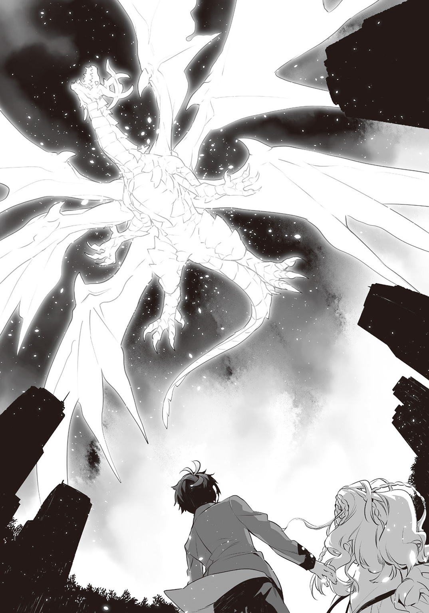
そうとしか表現できないものを感じたが、同時に、強い欲求を覚える。
「俺は。俺の魔法で、あれを倒してみたい」
その練の呟きが、まるで聞こえたようにジオールドが長い首を巡らし、下を見た。
練は、六つの紅い眼が自分を見た気がした。
「■■■■■■■■■ッ!!!!!!」
咆吼なのか、それとも魔力の波動そのものなのか。表現しようのない強烈なプレッシャーが真上から降り注ぐ。
「ギャウッ」「ギャンッ」「ギャウン」
残り少なかったブラックドッグが、悲鳴を上げて次々と消滅する。
「きゃっ」「む」「ちょっと」
アリスと練、ソニア、二体のジェンカがプレッシャーに耐えきれず姿勢を崩し、片膝をつく。
跪け。
ジオールドにそう命じられているようにさえ、練は感じた。
ルナリアのみ、身を捻って剣を構えた姿勢を保っている。
魔力の波動をはらんで揺らめく長い銀髪の上、円筒形の魔法記述光跡がさらに伸びる。
「旧世界の竜などに、この世界を壊させはしません――魔力砲身、旋転開始」
ルナリアの言葉を受け、直径およそ一〇メートル長さ五〇メートル以上の円筒型立体魔法陣が輝きを増し、ドリルのように回転を始めた。
「光弾生成、魔力充塡加速」
魔力が急速に高まる。立体魔法陣の底に白い光弾が発生した。
練にはでたらめとさえ思える勢いで、光弾に魔力が収束し始めた。練は目を見張る。
「......これが、魔力量四〇〇〇なのか。どれほどの威力になるんだ」
ルナリアの魔力蓄積値は四〇〇〇超。その全てを注ぎ込んだ攻撃魔法の威力が、練には想像できない。
「魔法の威力は、魔力の量に対して指数関数的に上昇するの」とソニア。続けて、
「しかもこの魔法は、周辺の魔力まで巻き込んで威力を増すのよ。ルナリアが制御をしくじれば、ジオールドの破壊を待たずにこの学院島が消し飛ぶわ」
アリスが拗ねたような顔をする。
「こんなのずるいわよ。個人が使っていい力じゃないでしょ。ほんと王族ってチート」
ルナリアが空を見据えたまま、強い意志を感じさせる声で告げる。
「だからこその、王族です。私たちは自らの力に責任を、その力を以て全ての民の命に責任を、持たねばなりません。あんなものに膝を屈してはならぬのです」
ルナリアは、凄い。
素直に練はそう思った。同時に魔力のない我が身が悔しくて堪らない。
悔しさで奥歯を嚙みしめ、練はジオールドのプレッシャーに耐えて立ち上がった。
（ほう。立つか、おまえ。悪くねえ）
練はグロリアスの声を聞いていなかった。ただ、天頂の旧い竜を見据える。
（練？ どうした、何か感じるのか？）
「あの旧神竜にも、急激に魔力が収束している。奴の攻撃手段は？」
（竜と言えば、咆吼を吐くに決まっているぜ）
とグロリアス。ソニアが補足するかのように告げる。
「破壊衝動のみで放つ原始の魔法。さっき君が防いだブラックドッグの閃光のようなものだけど、ジオールドのその一撃で、エールランドの八分の一が消し飛んだと伝えられているわ」
エールランドは、この世界におけるアイルランドに相当する。面積は北海道とほぼ同じ。
その八分の一が一撃で消えたとは練も信じがたいが、常軌を逸した威力の攻撃が迫っているのは肌で感じている。
練はルナリアへと叫ぶ。
「撃てッ!! 奴より先に!!」
「はいッ!!」
一瞬の躊躇もなくルナリアが返した。
「輝け、セレブレイト！ 輝きよ、月を穿てッ!!」
右斜め後ろに構えた刃を、左上へと一気に振り抜く。
白い三日月に似た剣閃が、頭上の立体魔法陣へと走り、立体魔法陣の底の光弾を斬る。
制御に失敗すれば学院島が消し飛ぶほどの大魔力が、立体魔法陣の砲身から天めがけて迸る。
まさしく、月さえも穿ちそうな純白の光の柱だ。
「■――――■ッ!!!!」
再び、ジオールドがプレッシャーを放つ。全身にのしかかる重圧に、しかし練は、今度は膝を折らない。ルナリアの魔法攻撃の行く末を、じっと見据える。
「■ッ!!!!!!」
白い光柱が直撃する寸前。ジオールドの頭部付近に、紫の光の輪が幾重にも生じた。
次の瞬間、光の輪が収束して一条の紫の光の筋となり、発射される。
ジオールドの間近で、白と紫の光が衝突した。
影すら払拭するほどの光の奔流が夜空を覆い尽くし、轟音が空間そのものを激しく揺さぶる。
光の奔流に呑まれ、ジオールドの姿が見えなくなる。
「やったの!?」とアリスが声を張った。
空を覆った閃光が薄れ、紫色のシルエットが浮かび上がる。
ジオールドの翼の数が変わっていた。右側の二つが根元から引き千切られたように消えている。確実に、ルナリアの一撃は旧き神の竜にダメージを与えていた。
だが、ルナリアはがしゃんと剣を落とし、体勢を崩して膝をついてうなだれる。
「――――............逸らされた......っ」
（ジオールドの野郎、熱閃光の軌道を熱閃光でずらして、本体への直撃を避けやがった！）
「直撃すれば、奴を滅ぼせるのか？」
（今の威力じゃ、五分五分だ。あれじゃ俺には遠く及ばねえからな）
「......まさか。かつてエールランドを消滅させたジオールドを滅ぼしたのは」
（馬鹿か？ 俺以外の誰に、奴をぶっ飛ばせるってんだ。とにかく、次のを撃たれる前に撃たねえと、島ごと終わるぜ、俺たち）
練はルナリアへと駆け寄り、傍らにしゃがみ込む。
「直撃すれば、奴を滅ぼせる。まだ撃てるか？」
ふるふるとルナリアが首を横に振った。乱れた髪が顔を覆い隠す。
「今の一撃に、全ての魔力を込めました。ですから、もう......」
「君の右目は、魔力を集め続ける魔眼なんだろう。魔力が凝縮した紅い涙で、今一度、魔力を補給することはできないのか」
「確かに、私の巨大な魔力蓄積値は右目の魔眼のおかげです。けれど、あの紅い涙は。自分では使えないのです......」
（魔眼はあくまで魔眼、呪いだ。そんな都合のいい呪いなんかねえってことだ）
だから。わかるな？
グロリアスは念じさえしなかったが、練にはわかった。
自分が今、何をすべきなのか。
練はルナリアの細い顎に手を添え上を向かせた。
ルナリアの右目の魔眼は、紅い輝きを失ってはいない。
練はルナリアに顔を寄せ、蒼と紅の双眸を覗き込んで告げる。
「ルナリア。俺のために涙を流せ」
ルナリアが、はっと息を詰まらせる。
練の思惑に気付いたか、アリスが大声を上げた。
「何言ってるの、練！ 魔眼の涙って、でたらめな高純度の魔力の塊って噂よ、そんなのどうする気！ 飲んだりしたら、死んじゃうわよ！」
騒ぐアリスの肩を、ソニアが押さえつける。
「決めたのは。彼よ。貴女にできることは、彼を信じることだけじゃないのかしら」
「でも！ それならいっそ、私が！」
ソニアの手を振り切って駆け寄ろうとしたアリスを、練は片手を突き出して制した。
「アリスがそんなことをしたら、それこそ魔力霊的構造もろとも魂が破裂するだけだ。だから、俺がやる。俺の魔力霊的構造は、とっくに壊れているからな。壊れている故に、許容限界がないはずだ」
「そんなの、推測の話じゃない！ かもしれないというだけで！」
「かもしれない、で充分だ。魔力が、得られるのなら」
練はきっぱりと言い切った。アリスが言葉を失い、立ち尽くす。
「私は、練さまを信じています」
ルナリアが、顎に添えられた練の手を握った。
「この身は練さまの剣であり、盾。髪の一筋、血の一滴に至るまで、全てが練さまのもの。そしてこの涙も――」
ルナリアの魔眼が再び紅い光を放った。同じ色の涙が、まぶたの縁に盛り上がる。
「いただきます」
（いただきますって、おい。しまんねえセリフだな）
グロリアスを無視して、練はルナリアの目元に口づけた。
滴り落ちる寸前の紅い涙を、わずかな音を立てて啜る――
ルナリアから身を離して立ち上がったその瞬間。強烈な違和感が練を襲った。
まるで口から焼けた鉄の棒をねじ込まれたかのような、感覚。
炎が全身の神経を焼き尽くしつつ広がるとしか思えない、灼熱感。
「がっ!?」
練は身を捩って両手で喉を押さえた。あまりの苦しさに、自らの首を自らの手で締め付ける。
「練さま!?」「練!!」「練くん！」
ルナリアが、アリスが、ソニアが叫んだ。
練は片手を首から放し、駆け寄ろうとした彼女たちに掌を見せる。
「......大、丈、夫、だ。苦しいが、死ぬほど、じゃない」
練はもう片方の手も首から離し、その手を見下ろして大きく息をついた。
ぐ、と拳を固めて実感する。
「二〇〇〇――いや、一八〇〇くらいか。この魔力の量は」
（ああ、そんなもんだな。さすがにルナリアの満タンよりはだいぶ少ねえようだ）
「充分だ」
練は空を見上げた。四翼となったジオールドは依然、圧倒的な存在感で天頂に居座っている。
「ほんとに大丈夫なの、練？」
とアリス。練はアリスを見ず、頷いた。
「ああ、問題ない。急がないとせっかくもらった魔力が漏れる。みんな、ちょっと離れていてくれないか」
「わかりました。千羽さんも、こちらへ」
ルナリアがアリスを促し、落とした剣を拾って練から距離を取る。
少し遅れてソニアも練から離れた。
「何ができるのか、見せてもらうわよ」
「できることを、するだけだ」
練は大きく足を開くと腰を低くし、右手を手刀の構えにして身体を左に強く捻った。
グロリアスの宿る左目が、蒼く発光する。
「魔法記述光跡、展開。魔力砲身構築開始」
練の頭上。普段使う極微細魔法記述光跡ではない、通常サイズの魔法記述光跡が数秒で巨大な円筒状の立体魔法陣を構成した。
直径、約六メートル。長さ三〇メートル。ルナリアが形成した魔力砲身よりは小型だが、構成はまったく同じだ。
「それは、私の――」
驚愕するルナリア。練はこともなげに言う。
「月穿ちだったか。覚えさせてもらった。魔力砲身、旋転開始。光弾生成、魔力充塡加速」
アリスが声を裏返させる。
「覚えたって、そんな複雑で制御が困難な魔法を、さっきの一回でっ？」
ソニアが嬉しそうに言う。
「それが練くんなのよね。彼は本物の天才なのよ。希代の魔法使いにして初代ブリタリア王、あのグロリアス・ロードのように」
（照れるぜ。でもよ、練。魔力一八〇〇程度のコイツじゃ、さっきのルナリアの火力にゃ及ばねえぜ？ 直撃させても奴は堕とせねえ）
「わかっている。だが奴は、自分にダメージを与えたこの魔力砲身を見れば、必ず先に撃ってくるはずだ」
「■ッ!!」
ジオールドが大きく羽撃き、プレッシャーを放った。
再び、頭部付近に幾重もの光の輪が発生する。
「かかった！」
光の輪が収束して光線と化す瞬間。
練は魔法記述光跡を全て解き、両手を空に掲げて極微細魔法記述光跡を展開させる。
無数の絹糸のような細い光が逆円錐状に編み上がる。
巨大な魔法陣の漏斗が、学院島上空を覆い尽くす。
魔法効果魔力還元魔法。
いつもの、たった一の魔力ではなく、二〇〇〇に近い魔力で構成された極微細魔法記述光跡の漏斗が、天空から降り注ぐ破滅の光を余すところなく吸い込んだ。
「起動！」
練の意志で、魔法が発動する。ぎゅるんと漏斗の口が閉じ、ジオールドの放った莫大な熱閃光を封じ込める。カッと立体魔法陣が発光し、熱閃光が魔力に還元された。
練の頭上。濃密な魔力の塊が現れた。空間が揺らぎ、ジオールドの姿が歪んで見える。
（かーっ！ この魔力量は、ざっくり一〇〇〇〇ってところだぜ！ これなら、あれさえ撃てるぜ、練よ！）
グロリアスの思念が、一つの魔法の理論を概念として練に伝えた。
（コイツだ。いけるか？）
練は即座に、グロリアスが伝えた魔法の理論を理解する。
「問題ない。魔力砲身、再構築開始」
頭上の魔力を使い、練は再び魔法記述光跡で立体魔法陣を空中に描く。
「なんという大きさ......」「これは。凄いわね」
ルナリアとソニアが感嘆の息を漏らした。
直径はゆうに一〇〇メートルを超え、全長はもはや、よくわからない。
巨大な円筒型立体魔法陣を見上げ、アリスが呟く。
「スカイツリーを下から見てるみたいね、まるで」
（でかいだけで驚かれちゃ困るぜ。こっからが見物なんだからよ）
「魔力砲身、旋転開始」
立体魔法陣が回転を始める。回転速度が上昇し、練が続ける。
「崩壊弾生成、魔力充塡加速」
円筒の底。ルナリアの光弾とは違い、ぽつ、と小さな黒い球体が出現した。
「月穿ちじゃない......？」とルナリア。
「あれは、まさか」とソニアが顔に驚愕の色を浮かべる。
（練。そいつはじゃじゃ馬だ。上手く押さえ込めよ？ 爆ぜたら、この島どころか関東一円がざっくり消滅するぜ？）
「――わかっている。それにしても......これは。制御が重い」
黒い球体が、練の精神に負荷をかける。
気を抜いたら、意識をごっそり引き抜かれそうなほどだ。
どくんと脈打ち、黒い球体が一気に膨れあがった。
太陽のプロミネンスのように、影よりもなお暗く黒い何かが、球体の表面でうねり、躍る。
「姉さま、何か知っていらっしゃるんですか？」
「――あれは......いいえ、そんなはずが。でも――けれど......」
ソニアが悩み、逡巡する。その間にも黒い球体が巨大化していく。
まるで、燃えさかる漆黒。
練の左目のみの視界で、グロリアスが天に拳を突き上げる。
（覚えているか、ジオールド！ かつて貴様を滅ぼした〈黒い太陽〉だ!!）
「■■■■■■■■■■■■ッ!!!!!!」
ジオールドが三度、幾重にも光の輪を生み出し、地上を焼かんと全身を震わせる。
やらせるものかという強い意志と強烈な魔力を練は感じたが、一瞬たりとも怯まない。
魔法の制御に集中する。燃えさかる漆黒の球体は、直径一〇〇メートル超の魔力砲身の底一杯にまで巨大化し、はるか上空のジオールドの姿が、練たちからは見えなくなった。
「鍵槍ブリオナック、顕現開始」
練の下げた右手に、棒状の魔法記述光跡が出現する。
魔法記述光跡が弾けて現れたのは、光の槍だ。
その光の槍を練は摑み、投げるために構える。
「――起動」
練は魔力砲身の底めがけ、鍵槍ブリオナックを全力で投げた。
一条の光と化した鍵槍ブリオナックが、魔力砲身の底を貫き、〈黒い太陽〉へと突き刺さる。
〈黒い太陽〉がどくんと脈打ち、膨れあがる。魔力砲身を内側から粉砕し、天頂へと放たれる。
同じタイミングで、ジオールドの光の輪が収束して光線と化した。
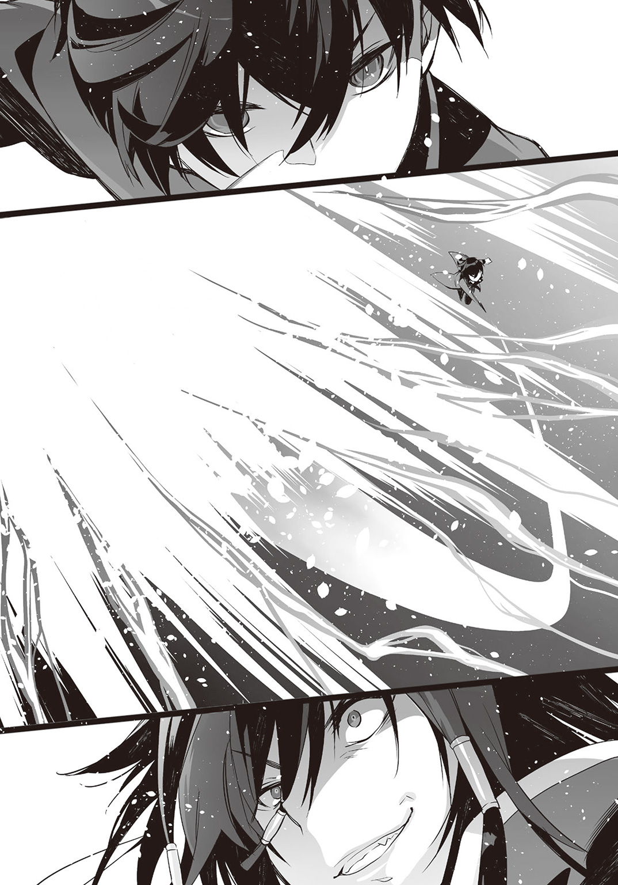
〈黒い太陽〉の直径よりも太い紫の光の柱が、地上を焼き払わんと落ちてくる。
紫の光の柱が、〈黒い太陽〉を直撃した。
「無駄だ」（無駄なんだよ、あの時のようにな！）
紫の光を呑み込み、〈黒い太陽〉が巨大化し、加速する。
アリスが拳を突き上げ、叫ぶ。
「いっけえっ!!」
「......」ルナリアが剣を腕で抱き、祈るように両手を組み合わせて空を見上げる。
紫音の身体を借りたソニアが、ぶるりと身震いした。
「この力――本物だわ」
〈黒い太陽〉が、ジオールドへと迫る。ここに至り、ジオールドが抵抗するように大きく羽撃いたが、上昇できない。それどころか、〈黒い太陽〉へと引き寄せられる。
〈黒い太陽〉がさらに加速し。そして、ジオールドを直撃した。
轟音をまき散らし、夜空に、闇よりもなお深く昏い漆黒の穴が開く。
何もかもが崩壊する、虚無へと通じる次元の穴だ。
「■――――――――――――――――――――――――――――――■ッ!!!!!!!!!!」
ジオールドの魔力もシルエットも、紫の光も何もかも、次元の穴に吸い込まれる。
ぎゅるんと次元の穴が渦を巻き、一瞬で閉じた。
刹那、夜空が真っ白く染まるほどの閃光が広がり。
そして、消えた。
かつて島国一つを消滅させた、神に等しい旧き竜の痕跡は、魔力の欠片一つ、残っていない。
「れーんーっ!! 凄い凄い、凄い！ あのジオールドを倒しちゃうなんて！」
アリスが練に飛びつき、首に両腕を回して全体重を預けてきた。
「重い」
耐えられず、練は尻餅をつく。
「重いって、失礼よ！ せっかく全身で褒めてあげたっていうのに！」
「いや。それでも重いことに変わりはない。退いてくれないか、身体に力が入らないんだ」
「ふんだっ。意地でも退いてやんないんだから！」
アリスは離れようとしない。
どうしたものかと尻餅をついて困惑する練の傍らに、ルナリアとソニアが跪き、頭を垂れる。
「練さま。この命のみならず、この島に住う多くのブリタリアの民までお救いいただき、心から感謝いたします」
「ブリタリア王国第一王女、ソニア・ソード・＝ブリタリアの名に於いて、最上の感謝を」
「二人とも、頭を上げてくれないか――くれませんか」
落ち着いた練は、ようやく敬語を使わないと、と意識した。
その練の手を、頭を上げたルナリアが両手で握る。
「いえ。どうか先ほどのように、ルナリアとお呼び捨てくださいませ」
「え。俺、そんなことしましたか？」
「はい」
ルナリアが頰を染め、きゅっと練の手を包む両手に力を込める。
「ちょっと王女殿下！ だから練は私のだって言ったでしょう、その手を離してくださいませんかっての！」
「お断りいたします。貴女こそ、私の練さまの首にしがみつくのを止めてくださいませんか」
「それこそお断りよ！」
怒るアリスの顔を、ぐいっと押しのけたのはルナリアではなく、ソニアだ。
「立場上、感謝をしたところで。ちょっと失礼するわよ」
紫音の顔で、ソニアがまじまじと練の左目を覗き込む。
「な、何でしょうか。ソニア王女」
「やーね、僕のことは紫音でいいわよ、これからも。この子にもね、ちゃんと自我があるんだから。今はちょっと主導権を借りているけれど――ふむ。あ。なるほど。そっかそっか」
ソニアが何を勝手に納得しているのか、練にはわからない。
だがグロリアスは何かに気付いたようだ。
（コイツ。もしかして、俺と同じことしてやがるのか？）
――同じこと？
（紫音の身体。特別製のドロイドだって言ったろ？ ジェンカたちより上等な人工精霊――もはや人工魂だな、それを宿してる。その上で、ソニアの魂の一部が相乗りしてんだよ）
――ということは。俺の中にグロリアスがいること、バレたのか？
（何かいるってことには気付いたろうな。それが俺だと確信は......してないことを祈るしかねえな）
「あの、ソニア王女。本人の希望で、このことは内緒にしてもらえますか？」
むふん、とソニアが意味ありげに笑う。
「いいわよ。じゃ、貸し一つね！」
楽しそうに言い、ソニア――紫音が立ち上がる。うーんと背伸びをすると胸の穴を気にした。
「ああ、やっとソニアさまから解放されたよ。にしても見事に大穴を開けられちゃったね、元から貧相な胸がえぐれちゃった。ソニアさまに直してもらうけど、練。胸のサイズ、大きくしたほうがいいかな？」
「あ、いや。紫音はそのままのほうがスタイルに似合ってると思う」
「あはは。それならそのままにしておくよ、うん」
ルナリアが、がしゃりと鎧に音を立てさせ、練に這い寄った。
「まさか、練さまっ。乳房は乏しいのがお好みなのですかっ!?」
ブレストプレートを付けていてなお、ルナリアの胸の大きさはよくわかる。とても片手に収まるサイズではない。
「おほほほっ。まったく自慢じゃないけれど、貧乳には私、自信があるわよ！ 穴で抉れた紫音と違って、私は元から抉れていると言っても過言じゃないくらいなんだから！」
アリスが練の首から両手を放し、背中を反らして薄い胸を誇張した。
直後、涙ぐむ。
「......そ、そうよ、ないのよっ、胸！ 色々頑張ったけど！ 練、ないのがいいのよね！ そうだと言って、じゃないと私が可哀相だから！」
「違いますよね、練さま！ 男性はふくよかなほうがお好きなのですよね！」
ルナリアが必死そうな顔で、聖騎士の装備を解除した。白いワンピース姿に戻り、練の腕に抱きついて身体の柔らかさを主張する。
（どーすんだよ、おまえ。貧乳と巨乳、どっちもいいなんて答えたら修羅場になるだけだぜ）
「心底、どうでもいい」
練は巨大な魔法を撃った充足感と、魔力が空っぽになった倦怠感を同時に覚え、その場に背中から倒れ込む。
見上げた夜空では、何事もなかったかのように、まばらに星が瞬いていた。
Ⅶ 新たなる竜滅の英雄
朝のショートホームルーム前の教室は、いつもと変わらず、ざわめいている。
「結局さ、昨日のあの停電って理由はなんだったんだ？」
「空に何か竜っぽいのが出てて、ルナリアさまたちが戦ってたみたいだったけど」
「寮の窓から見てただけだし、よくわかんねえよな。ノウ無し......おっと、黒陽がありえねーような魔法を撃ってたようにも見えたが、ありゃ見間違いだよな、やっぱ」
「......そばに江井くんがいたみたいだし、彼じゃないの？」
「そう言えば、三条院。行方不明らしいが、昨日のあれと何か関係あるのかな」
「さあ？ アイツ、先週から気持ち悪いくらい変だったし、関係ないんじゃね？」
自分の席に着き、練はクラスメイトの雑談を何となく聞いていた。
生徒は誰も知らない。
昨日現れたのが、およそ五〇〇年前に異世界で島国一つを滅ぼした旧神竜だということも、その召喚をしてしまったのが道長だということも。
練が倒したのを目撃した生徒がいるようだが、見たことをそのまま信じてはいないようだ。
（ま、そのほうが好都合だろ。でかすぎる力は、恐れられるだけだからな）
グロリアスは呑気に、練の左目の視界で横になってごろごろしている。
そうだな、とだけ練は念じて返し、事実関係を思い出す。
旧神竜ジオールドの存在は、国内にも諸外国にも公表されていない。
東京湾上空、観測史上初のオーロラの発生と、低高度での隕石の爆発が偶然、重なった。
それが、日本政府の公式発表だ。
誰がジオールド召喚を企て、道長を利用したのか。
事件の翌日の今日、ブリタリア王国の警察機構による調査は、本格的に始まっていない。
夜空を紫の光で染め上げた巨大な竜の姿を目撃した人間の数は、数百万人を越えている。
東京湾岸エリアの住人の中には、動画サイトで実況しようとしたものも多くいた。
だが、スマートフォンでもデジタルカメラでも、高価なムービーカメラであっても『六枚の翼を持つ紫の光の竜』の姿は、映らなかった。
映ったのは、夜空を染め上げた奇妙な紫の光の揺らめきだけだ。
グロリアス曰く、
（神に近い存在は、霊的構造を持つ生き物だけに見えるんだよ。デジカメみたいな事実を映すことしかできない代物に、あんな現実を超越したものが映るわけねえだろ）
とのことだった。
ブラックドッグの発生は学院島内のみだったようで、あの怪異の群れの犠牲者は、一人のみ。
練の目の前でブラックドッグに呑まれた三条院道長だけだった。
後は、ブラックドッグ駆除にあたったブリタリア行政特区警備部職員数名が、怪我を負った程度。
旧神竜が召喚されたのに、ごくわずかな被害で済んだのだ。
これは、奇跡以外の何物でもないらしい。
第一王女ソニアと精神がつながっている紫音によると、ブリタリア王国では『天使の降臨および英雄の誕生』に相当する『第一級奇跡』として事件が扱われているそうだが、練にはよくわからなかった。
三年前にルナリアを救った時よりも価値のある報償が、ブリタリア王から賜れるらしいが、それにもあまり興味はない。
学院長のマリーが停学を解いてくれた。練としてはそれで充分だった。放課後、再び大図書館で好きなだけ自習ができるからだ。
今日はどの本を読んでみようか、と大図書館の書架を思い出す練に、
「おはよ、練」とアリスが声をかけた。
「千羽さんだけか？ 王女殿下は？」
「アリスでいいわよ、昨日、そう呼んだでしょ」
席に着きながら、アリス。
「そうだっけ？」
「そうなの。それから王女殿下は、昨日の夜からブリタリアに戻ってるわ」
「そうか。昨日は大変だったから、向こうで休むのがいいだろうな」
「何か違うみたいよ？ 練、覚悟しておいたほうがいいかもね」
「覚悟って、何を」
「知ーらないっと」
アリスがとぼけたように告げ、練から視線を外した。両手で机に頰杖をつき、ぶつぶつと呟き始める。
「ほんと、どうやって阻止してやろうかしら。とりあえず乱入は......まずいわよね、やっぱり。あっちは王族で、こっちは立場微妙の元工作員だもの。下手するとその場で――あー。それは嫌よね、まだ死にたくないもの」
「......アリス？ 何をぶつぶつ言っているんだ、死にたくないとか、また大げさだな」
「大げさじゃないの！ っんとにもう、人の気も知らないでっ。古い付き合いなんだから、それくらい察しなさいよ、もうっ」
ぷりぷりとアリスが怒る。練はきょとんとした。
「......古い付き合いって。いったい、俺とはどういう知り合いなんだ？ 思い出すまで教えないって前に言われたが、さっぱりわからない。だいたいアリスはカ――」
練は慌てて、可能な限り声を潜める。
「カミル王子の工作員だったんだろう？ どこに俺と接点がある？」
アリスが腕組みをし、練を見下すように顔を上げた。
「そうよ。だから、会ってるの。九歳の夏にね」
「九歳の夏？ 俺がシャーリー先生から魔法の手ほどきを受け始めた時だな......あ」
練の脳裏に、ぼさぼさの金髪の癖毛で目元がよく見えない、まったく言葉が通じなかった男の子の姿が浮かび上がった。
練と比較するために、シャーリーがブリタリア王国から連れてきた子供だ。
夏の一ヶ月間、練と一緒に魔法の勉強をさせ、この世界の子供とブリタリア王国の子供の理解力を比べるための実験だったらしい。
ブリタリア語しか話せない男の子と、ブリタリア語などさっぱりわからなかった当時の練に、意志の疎通ができるはずがない。
仲良くなることなどなく、練はことあるごとに、その男の子に引っぱたかれ、嚙みつかれ、殴られ、転ばされ、さんざんな目に遭った。
その子供も高い魔法の素質を持っていたそうだが、一ヶ月の勉強の結果は、練の圧勝。
「ありー、あいるびーばーっく！」
ブリタリア王国に帰る時、その男の子が涙目で怒鳴ったことを練は思い出した。
アリー。シャーリーはその男の子のことを、そう呼んでいた。
練はアリスを指さし、呟く。
「アリー？」
「やっと思い出した？ そうよ、一緒に勉強した同門の、言わば私は姉弟子なんだってば！ こっちに来るのに選ばれるためにあれからずいぶんと頑張って成績上げて、いざ中等部に来てみたら練ったらいないし、やっと会えたと思ったら忘れられてるしっ」
「......あー、でも。アリーって男の子だったような......」
「ひっどいっ！ いくらあの頃から胸がなかったからって、男だなんて思ってたのっ？」
（九歳じゃ普通、胸なんざねえが。練がそう勘違いしたのは、度重なる暴力のせいだっての）
と、グロリアス。練はうんうんと頷く。
「女の子ってのはもっとおしとやかで、少なくとも。怒って嚙みついたりはしないような」
きっとアリスに睨まれ、練は首をすくめた。
「すまない、勘違いしていた俺が悪いようだ」
「わかればいいのよ、わかれば」
「......ちょっと待て。ということは、シャーリー先生も」
カミル王子の工作員なのか？ と練は目でアリスに訊ねた。
「元、ね。別に工作員が主を変えるのって珍しくはないのよ、それほど。特に、あんまり情報を与えられない下っ端はね。先生は今、マリー学院長のハンマー家の所属よ、確か――それはそうと、紫音は？」
「向こうに行ったはずだが、今朝も連絡はなかったな。休むんじゃないのか」
「言っとくけど、練。紫音に手なんか出しちゃだめよ？ 中身、あれなんだから」
「ルームメイトに手なんか出すわけないじゃないか」
（俺はちょっと出してみたいぜ？ ドロイドとそういうことって経験ねえからよ！）
「――そういうのはいいから、黙ってろ」
うっかり練は声が出た。アリスが変な顔になる。
「練、今の冗談よ？ 真に受けられても、引くだけなんだけど」
「あ、いや。今のは――」
練の声を遮り、始業とは違うチャイムが鳴り響く。
『一年Ａ組、黒陽練。至急、校庭に出ろ。めんどくさいから繰り返さぬぞ、さっさとしろ！』
学院長マリーの声が教壇上のスピーカーから聞こえた。
「何だろうな。とにかく行ってくる」
練は席を立った。アリスも立ち上がる。
「私も行くわよ、悪い予感しかしないし！」
「怒られるんじゃないのか？ 呼び出されたのは俺だけだし」
「怒られて済むなら怒られるだけよ。いいからほら、行くわよ！」
練はアリスに引っ張られ、呼び出し放送で騒然とする教室を出た。
靴を履き替え、昇降口からグラウンドに出る。
空には雲一つなく、風が東京湾の潮の香りを運んでくる。
「いい天気だな。こういう日は学校をサボって、海浜公園辺りで魔導書でも読みたいものだ」
「何を微妙にずれた呑気なことを。見なさい、来るわよ」
「来るって、何が――これは。魔力か」
練も気付いた。グラウンドの中央、大きな魔力の流れと共に魔法記述光跡が出現した。
魔法記述光跡の数が見る前に増え、地面を重なりあって走り、グラウンド一杯の大きさに魔法陣を形成する。
「――大規模な次元間転移魔法？ にしても、この大きさは......？」
（小さい城でも持ってきそうな勢いだな、おい）
「城だって？」
カッと巨大な次元間転移魔法陣が発動し、一瞬、練は視界を奪われる。
リンゴンという鐘のような音。
視界の戻った練は、首を傾げた。
目の前。立派で荘厳な石造りの、教会と思しき建物が、出現していた。
中央の尖塔の上。ロングソードが組み合わさった十字架のオブジェが飾られている。
（剣十字か。ブリタリア聖教の教会だな、これは）
「教会？ 何でそんなものが」
「ちょっとここまでは想像してなかったわよ、ルナリア......！」
王女を呼び捨てにし、ぎりっとアリスが歯ぎしりをする。
校舎のほうでは当然のように窓際に生徒たちが集まり、何だ何だと騒いでいる。
練とアリスの真正面。中央から両側に開く造りの、彫刻や飾られた大きな木製の扉がある。
その扉が、音もなく教会の中から外へと押し開かれた。
扉を開いたのは、右も左も、メイド服姿のジェンカ。
その間にいるのは、純白のドレスを身に纏ったルナリアだった。
ブレストプレートの代わりにネックレスを。
ガントレットの代わりにブレスレットを。
膝下のフットアーマーの代わりにハイヒールを。
そして、大剣の代わりにブーケを胸に抱いている。
どこからどう見ても、ルナリアは花嫁の姿だった。
「さあ、練さま。お召し替えの用意は済んでおります。こちらに」
と、朗らかに微笑し、ルナリア。
「こちらに、じゃないわよ！ いきなり何なの、これ!!」
と般若の形相で、アリス。
「略式の婚儀ですが、何か」
「何か、じゃないでしょう！ 練、あんた！ どう思うっ？」
「どうって。ええと――」
何をどう言えばと練は考え、ふと思い出す。ルナリアに、会った当日に言われたことを。
『御身に、娶られに参りました』
（あっはっはっはっ。本気だって言ってたが、本気も本気、超本気だったのか！）
グロリアスの爆笑が練の頭の中に響く。
練は不敬ながら、ルナリアを指さした。
「――本気？ 彼女が？ まさか？」
「私は最初から、そう申しております。再会した日はまだ私個人の願望でしたが。この度、父より正式に、練さまに嫁ぐよう申しつけられて参りました」
「日本の法律だと、男子は一八歳、女子は一六歳になった上で、保護者の同意がないと結婚ってできないんだが」
「ここはブリタリア行政特区。すなわち東京都でありながらブリタリア王国内です。ブリタリアでは男女共に一五歳で、保護者の承諾なく結婚ができますので、何ら問題はありません」
「そうなのか？」
練はアリスに訊ねた。アリスの声が裏返る。
「そりゃブリタリアの法律なら、そうだけど！ だいたい、いくら命の恩人だからって、練は平民よ!? それも魔法後進世界の!? ブリタリア正統王家から妻を娶るなんて、王が許したって元老院も賢人議会も認めないでしょ、そんなの！」
練の聞き覚えがない組織名が出てきた。何だろうと思う練に、グロリアスが教える。
（元老院ってのは貴族のジジイやババアで構成された、この国だとそうだな、参議院みたいなもんだ。で、賢人議会ってのは、主に平民の識者や学者なんかで構成された、衆議院っぽいもんで、ま、早い話がどっちも王の下で政治をやってる連中だ）
「......単純な封建制でもないのか、ブリタリア王国って」
（そりゃ、まあな。いつまでも中世のまんまじゃねえさ、あっちも）
練とグロリアスを余所に、アリスとルナリアが話を進める。
「徹夜での議論の末、ブリタリア建国の王グロリアス・ロード＝ブリタリアと同じ〈竜滅の黒い太陽〉の二つ名を、元老院、賢人議会ともに認めてくださいました。よって練さまは二つ名と共に〈真魔法士〉の称号と、爵位を得ました」
（おまえ、これからはブリタリアの貴族だってよ。ま、竜殺しの英雄なんだ、子爵くらいなら別になっても驚きやしねえ）
「俺が？」と練は自分を指さした。アリスが、ものすごく面白くなさそうな顔をする。
「そうだって。男爵か子爵か知らないけど、貴族さまにされてるわよ、勝手に」
「男爵などではありません。公爵です」
とルナリア。グロリアスが高笑いを上げた。
（あっはっはっはっ、練、おまえ。ハンマー公こと学院長のマリーと同じ爵位だってよ、どうすんだ、そんなのもらって。公爵だと、ブリタリアじゃ王族扱いになるぜ？）
「まったくピンとこない」
きょとんとする練。
一方で校舎では、生徒たちが大騒ぎを始める。グラウンドのルナリアの声は普通なら校舎まで届かないが、魔法の補助で聞き取った生徒がいたらしい。
「元神童、公爵になって王女と結婚するんだと！」「マジでッ!?」「姫さまが騎士になるとかそういうレベルの話じゃねえじゃん、もうっ！」「公爵さまならあたしが結婚したい!!」
「てめえノウ無し、ふざけんじゃねえ！」「羨ましすぎて死にたくなるぜ！」「おめでとう王女さま！」「王女さま、綺麗!!」「黒陽は殺す、二度殺す、三度死ねッ！」
気の早い生徒が甲高く指笛まで鳴らし、罵倒と祝福の声が校舎から降ってくる。
アリスが呆れ顔で校舎を見上げる。
「......収拾が付きそうもないわね。今日、授業ってできるのかしら」
「アリス。急に落ち着きましたね」
ルナリアがアリスを呼び捨てし、そう告げた。
アリスが、先ほど騒いだのが噓のように、余裕の表情で返す。
「当然よ。練の反応見てれば、わかるもの。彼にその気がまったくないことくらい。この魔法馬鹿は、爵位だとか王族入りだとか、そんなことで尻尾を振ったりしないわよ？」
（魔法馬鹿だとよ）「否定はしない」
ルナリアが、勝ち誇ったように微笑する。
「それは私もよく理解しております。だからこそ、この婚姻には意味があるのです。我が夫となれば、王位継承権が私から練さまに移動すると共に、王族秘匿書庫への立ち入りの権利が得られますので」
練はすぐさま、ルナリアの言葉に食いついた。
「王族秘匿書庫!? それって禁書クラスの魔導書が納められていたりするのか!?」
「練、肝心なのはそこじゃないってば！ 王位継承権って話、聞いてた!?」
アリスが再び動揺して声を張り上げた。
（おう、あるはずだぜ？ そもそも秘匿書庫を作ったのは俺だ。俺が当時集めた、超レアで激ヤバの禁書が、ずらっと納めてあるはずだ。多少品揃えは変わっているだろうがな）
「いや、そんなものはどうでもいい。そっか、禁書が読めるのか......」
練は見たこともない王族秘匿書庫に思いを馳せる。
どんな魔導書があるのか想像しただけで夢見心地になり、現実が目に映らなくなった。
（王位継承権をそんなものって、おいおい。ルナリアから委譲されるってことは、二位だぜ？ 第一位のソニアに何かあったら、おまえがブリタリアの次の王になるんだぜ？）
「ですから、練さま。さ、略式ではありますが婚姻の儀を執り行っていただきましょう。神父さまもお待ちです」
ルナリアが練へと歩み寄ろうとした。
その前に、アリスが立ちふさがる。
「暗殺が当然のブリタリアの王位継承権争いになんか、練を参加させないわ。どうしてもというのなら！ 私を倒して、かっさらうことね！」
あろうことか、アリスがルナリアに向けて攻撃魔法の魔法記述光跡を展開した。
だがルナリアも動じない。ブーケを横のジェンカに押し付けると、花嫁衣装のままで大剣を呼び出す。
「来なさい、セレブレイト！ いいでしょう、アリス。ここで私に一矢でも報いることができたなら、婚姻を延期し、貴女を私が召し抱えてあげます！」
「採用試験を兼ねてってことね！ 上等よ、サウザンドブレードの本気を見せてあげるわ！」
練を余所に、アリスとルナリアが本気で戦闘を始めた。
アリスが無数の魔法の刃を放ち、ルナリアがそれを大剣とは思えぬ剣捌きで打ち落とす。
流れ弾ならぬ流れ刃が時折、練のほうにも飛んでくる。
頰をかすめる刃に、練は気付きもしないで考え込んだ。ぼそぼそと独り言のように問う。
「なあ、グロリアス。禁書の中には異次元に関するものもあるのか？」
（ああ。あるっちゃある。別の次元にジオールドみたいな化け物がいるとか、ブラックドッグがどこから来るかの考察とか、そんな内容の本だったか。あんまり面白いもんじゃないぜ？）
「そうか。それなら、ブラックドッグに呑まれた三条院を探すことができるかもしれない」
（探して助ける気なのかよ？ 奴は間接的に、おまえを殺そうとしたんだぜ？）
「かもしれないが。悪いのは三条院じゃなくて、三条院を騙した誰かだろう？ それに、三条院の使っていた陰陽系の魔法、おまえだって知りたがっていたじゃないか。助け出せたら、教えてくれるかもしれないぞ」
（そりゃまあ、そうかもしれないけどよ。もう死んでるかもしれねえぜ？ 何せ異次元だからな、時間の流れだって違うだろ、たぶん）
「逆に考えたら。こっちで何ヶ月過ぎようが、異次元じゃ一瞬かもしれない。それなら生きている可能性だってある」
（確かにな。よし、練。魔力還元の魔法は完成したし、次は異次元探索の魔法を研究しようぜ。俺がばっちりサポートしてやる。で、三条院を助け出して恩を押し売りしてやろうぜ!!）
楽しそうに、グロリアス。練は大きく頷き、空を見上げた。
ジオールドが消えた辺りを何となく眺める。
「にしても。気持ちのいい春の空だな」
呟く練の髪が数本、魔法の刃で切り飛ばされた。直撃寸前だったその魔法の刃が、校舎の壁をざっくりと抉る。
「練のことは諦めてって言ってるでしょ、ルナリア！ 本気で切り刻むわよ!!」
「練さまのことは譲らないと言ったはずです！ 切り刻めるなら、やってみせなさい!!」
ルナリアの大剣から放たれた剣閃を、アリスが横っ飛びで避ける。
的を外した剣閃が、練のつま先の数センチ先の地面に、深々と亀裂を刻んだ。
（あいつら。すでに練が見えてねえんじゃねえのか？）
「......どうしたらいいと思う、グロリアス」
（下手に動くと流れ魔法が直撃して、あの世行きかもな。ここは諦めて、おまえを争ういい女たちの喧嘩、眺めてようぜ。そうそう見られるもんじゃねえ、こんなもん）
「確かにこのレベルの対人魔法戦闘なんて、そう見る機会がない。いい勉強になる」
練はまったく焦ることなく、飛び交う魔法に目を輝かせる。
（やれやれ。この魔法馬鹿め）
呆れたように、初代〈竜滅の黒い太陽〉ことグロリアス・ロード＝ブリタリアは呟いた。
了
あとがき ～もしくは、迷える藤原の世迷い言～
桜前線がそろそろ東北地方に行っていそうな、今日この頃。
気づけば世の中、ＷＥＢ小説からの書籍化が続々、花盛り。
そんな中、書き下ろしでオリジナルの新作をお届けですよ。
と、いうわけで。ご無沙汰しております、藤原健市です。
スーパーダッシュ文庫最後のオリジナル新作『オーガバスター・オーバードライブ』から、しばらく間が空きました。その間、『テラフォーマーズ』のノベライズや外伝漫画のシナリオ協力などをしていたので、作家として休んでいたわけではないのですが。
オリジナルで新作を出すとなると、改めて自分が作家なのだなあ、としみじみ思えます。
さて。この『ノウ無し転生王の双界制覇』。過去の藤原作品から、美味しいところだけを抽出したような作品でして。執筆がやたらと楽しかったのさ！
タイトルでネタバレしているように、このお話は主人公が「二つの世界で、魔法でトップに立つ」までの物語です。この一冊の後の話も、頭の中にはありますよ。
それら全部を書けますようにと、どこに祈ればいいのでしょう？
だから。ＷＥＢ小説での連載も検討したんですが、プロット段階で担当編集さんがずいぶんと気に入ってくれたので、それならばと、従来型ラノベ作家らしく、書き下ろし文庫でのスタートとなりました。書き下ろしではありますが、ＷＥＢ小説っぽいです。色々と。
ＷＥＢ小説ファンの皆様にも、違和感なく楽しんでいただけると思います！
イラストは、猫猫猫さん。その昔、ＴＲＰＧの『ナイトウィザード』のノベライズをファミ通文庫で執筆担当した際、いただいた資料の中に、猫さん執筆のコミカライズの一部分がありまして。その時に、いつかイラストをお願いしたいなあと思ったんです。
いやはや、思ってみるものですね。叶いましたよ、この本で。
カラーイラストが美麗なのはもちろんのこと、某ソードアートなオンラインのスピンアウト漫画を執筆されているだけあって、モノクロイラストから感じられる『物語性』が、とても素晴らしいです！
集英社さんで書かせてもらえるようになってから、イラストには恵まれすぎなレベルで恵まれています。ああ作家やっていてよかったなぁ、とたまに自著を机の上に並べて、遠い眼をしてみたり。はっはっはっ。そうそう、兼業作家になって一〇年が過ぎました。
色々大変なこともある職業ですが、楽しいですよ、ラノベ作家。
というわけで。次の機会とご縁がありましたら、またお会いいたしましょう。
二〇一七年春 藤原健市
著者紹介
藤原健市 ふじわら けんいち
静岡県西部在住バイク乗り／兼業作家。たまにシナリオライター。基本、頼まれたら断らない主義。「やります」と答えてしまえば、未来の自分がきっと何とかしてくれる！ ......ですよね？
Twitter @fjwr_kn1
BLOG http://ken1fujiwara.blog113.fc2.com/
illustration
猫猫 猫 ねこびょう ねこ
主人公デザイン控えめを求められることが多い中、逆に特徴を作って下さいと言われて出来た練のシュリケン髪がそっとお気に入りです。
ダッシュエックス文庫DIGITAL
ノウ無し転生王の双界制覇
著者 藤原健市
© KENICHI FUJIWARA 2017
２０１７年５月31日発行
この電子書籍は、ダッシュエックス文庫「ノウ無し転生王の双界制覇」
２０１７年４月30日発行の第１刷を底本としています。
発行者 鈴木晴彦
発行所 株式会社 集英社
〒１０１－８０５０
東京都千代田区一ツ橋２丁目５番10号
０３－３２３０－６０８０（読者係）
制作所 株式会社ＩＣＥ
本作品の全部または一部を無断で複製、転載、改竄、インターネット上に掲載すること、および有償無償に関わらず、本データを第三者に譲渡することを禁じます。なお個人利用の目的であっても、コピーガードを解除しての複製は、法律で禁じられています。